คู่มือหุ่นยนต์ Humanoi
ROS 2 Jazzy บน Raspberry Pi 5

สารบัญ
- 1ภาพรวมระบบ
- ส่วนประกอบ
- โปรแกรมทำงานอยู่ที่ไหน
- อ่านคู่มือนี้ยังไง
- 2ความปลอดภัย
- กฎที่ห้ามละเลย
- หยุดหุ่นฉุกเฉิน
- ชั้นความปลอดภัยของฐานล้อ
- ก่อนเปิดให้คนดู
- 3Raspberry Pi และ Docker
- อะไรรันที่ไหน
- เข้าใช้งาน Pi
- คำสั่ง arm
- container humanoi_ros
- ไฟล์บน Pi อยู่ที่ไหน
- ดูหุ่นจาก PC ด้วย Foxglove
- สร้าง Docker image ใหม่: rebuild_image.sh
- พื้นที่ดิสก์
- ข้อควรระวังเรื่อง USB และไฟ
- 4เปิด–ปิดหุ่น และรีโมท
- ลำดับเปิดเครื่อง
- หน้าต่างที่ต้องเปิดค้าง
- ลำดับปิดเครื่อง
- รีโมท FlySky FS-ST8
- 5แขนกล AR4
- รู้จักแขนทั้งสอง
- กฎความปลอดภัยของแขน
- ตั้งค่าบอร์ดครั้งแรก
- Calibrate
- เปิดระบบแขน
- เมื่อแขนข้างเดียวมีปัญหา
- ปิดระบบแขน
- ความเร็วและขอบเขตข้อต่อ
- ใช้บน PC และแขนจำลอง
- 6สอนท่าและสร้างโปรแกรม
- ท่ากับโปรแกรม
- สิ่งที่ต้องเปิดไว้
- จัดท่าด้วย MoveIt
- บันทึกท่า
- เขียนโปรแกรม
- ดูและลบท่าและโปรแกรม
- เล่นโปรแกรม
- แก้ท่าเดิม
- สั่งเล่นจากรีโมท FlySky
- ไฟล์ที่เก็บท่าและโปรแกรม
- 7มือ AmazingHand
- มือทำงานอย่างไร
- มือไหนต่อกับบอร์ดไหน
- กฎความปลอดภัยเรื่องไฟ
- ท่าในตัว
- ลองท่ามือ: arm hand
- สอนท่ามือเอง: arm hand-teach
- คาลิเบรตนิ้ว: arm hand-calibrate
- ใช้ท่ามือในโปรแกรมแขน
- ข้อจำกัดที่รู้อยู่
- 8หยิบกล่องด้วยกล้อง
- อุปกรณ์และป้าย ArUco
- เปิดกล้องและตัวหากล่อง: arm tray
- หน้าต่างที่ต้องเปิด
- สอนหยิบ: arm tray-teach
- หยิบ: arm tray-pick
- ข้อจำกัดและข้อควรรู้
- 9ฐานล้อ
- ขนาด
- การต่อสาย
- เฟิร์มแวร์ Mega
- เปิดฐาน
- เช็ก encoder (ครั้งแรก / หลังต่อสายใหม่)
- จูนความเร็วล้อ
- สั่งฐานวิ่งตามระยะ
- ค่าตั้ง base.yaml
- 10Lidar และแผนที่
- ตำแหน่งที่ติดตั้ง
- เปิด lidar
- เช็กการติดตั้ง (arm lidar-check)
- ทำแผนที่
- 11ระบบกันชน
- ทำงานยังไง
- เกิดอะไรขึ้นในแต่ละกรณี
- ทดสอบบนหุ่นจริง
- ทดสอบโดยไม่ใช้ฮาร์ดแวร์
- ข้อจำกัด
- 12ภารกิจ A → B
- เปิดอะไรบ้าง
- ความปลอดภัยในภารกิจ
- เตรียมครั้งแรก
- ขั้นที่ใช้ได้ในไฟล์ภารกิจ
- 13เกมเป่ายิ้งฉุบ
- หนึ่งตาเล่นเป็นอย่างไร
- เตรียมครั้งแรก
- เปิดเกมและเล่น
- ฝั่งผู้เล่น
- จอ HUD และภาพกล้องใน Foxglove
- ท่าโชว์
- ปรับจังหวะ: pump_deg และค่าอื่นตอนเปิดเกม
- ทดสอบโดยไม่มีกล้องหรือมือ
- เคล็ดลับเมื่อเล่นต่อหน้าคน
- 14แก้ปัญหา
- ฐานล้อ รีโมท lidar
- แขน และโปรแกรม
- Pi มือ กล้อง เกม
- Aคำสั่ง arm ทั้งหมด
- Bไฟล์ตั้งค่าและตำแหน่งไฟล์
- Cรายการรูปที่ต้องเตรียม
ภาพรวมระบบ
Humanoi คือหุ่นยนต์ครึ่งตัวบนฐานล้อ ประกอบด้วยฐานล้อ mecanum ที่วิ่งได้ทุกทิศ (เดินหน้า ถอย สไลด์ข้าง หมุนตัว)
แขนกล AR4 สองแขน และมือ AmazingHand สองมือ ทุกส่วนคุมจาก Raspberry Pi 5 ตัวเดียวที่รัน ROS 2 Jazzy อยู่ใน Docker
คนคุมสั่งงานผ่านคำสั่งสั้นๆ ชื่อ arm ในหน้าต่าง terminal ของ Pi และถือรีโมท FlySky ไว้ขับฐานกับหยุดฉุกเฉิน
เป้าหมายของงานจัดแสดงคือ หุ่นหยิบกล่องที่จุด A แล้วนำไปวางที่จุด B — กล้องหาตำแหน่งกล่อง แขนหยิบ พับแขน ฐานวิ่งไป B โดยมี lidar คอยกันชน แล้ววางกล่อง ทุกช่วงที่ฐานจะวิ่งต้องมีคนยืนยันจากรีโมทก่อน

ส่วนประกอบ
| ส่วน | อุปกรณ์ | ต่อกับ | เปิดด้วย |
|---|---|---|---|
| สมอง | Raspberry Pi 5 + Hailo-10H AI HAT | — | container humanoi_ros (ขึ้นเองตอนเปิดเครื่อง) |
| แขน | AR4 สองแขน บอร์ด Teensy 4.1 แขนละตัว | USB → Pi | arm start |
| มือ | AmazingHand สองมือ (เซอร์โว 8 ตัวต่อมือ) | บอร์ดคุมเซอร์โว USB → Pi | arm player |
| ฐานล้อ | mecanum 4 ล้อ มอเตอร์ 24V · relay 8 ตัว · ลูกบิดความเร็ว HW-687 ล้อละตัว | Arduino Mega USB → Pi | arm base |
| encoder | YT3806 360 P/R ล้อละตัว ผ่านบอร์ด opto PC817 | → Mega | (มากับ arm base) |
| รีโมท | FlySky FS-ST8 + ตัวรับ FS-SR8 | → Mega | เปิดรีโมทไว้ตลอด |
| lidar | LDROBOT STL-19P (USB ชิป CP2102) | USB → Pi | arm lidar |
| กล้อง | กล้องบนหุ่น (หาตำแหน่งกล่อง / ดูมือผู้เล่นเกม) | USB → Pi | arm tray · arm rps |
โปรแกรมทำงานอยู่ที่ไหน
งานจริงทั้งหมดรันบน Pi ใน container ชื่อ humanoi_ros ส่วน PC ใช้เขียนโค้ด รันซิม (Gazebo) และดูภาพ/แผนที่ผ่าน
Foxglove คำสั่ง arm รันบน Pi นอก container แล้วสั่งงานเข้าไปใน container ให้เอง จึงไม่ต้องจำคำสั่ง ROS ยาวๆ
Arduino Mega เป็นสมองชั้นล่างของฐานล้อ อ่านรีโมทและคุม relay เอง แม้ Pi ค้าง Mega ก็ยังหยุดล้อได้
ส่วน Pi ส่งคำสั่งให้ Mega ทาง USB เมื่อ ROS เป็นคนขับ (เช่น arm drive หรือภารกิจ)
อ่านคู่มือนี้ยังไง
| เห็นแบบนี้ | หมายความว่า |
|---|---|
arm status | พิมพ์คำสั่งนี้ใน terminal ของ Pi (ssh เข้าไป หรือหน้าจอ Pi) |
| (เปิดค้าง) | คำสั่งที่ทำงานค้างไว้จนกด Ctrl+C — ใช้หน้าต่าง terminal ของมันเอง หนึ่งหน้าต่างต่อหนึ่งคำสั่ง |
left / right | ซ้าย/ขวา เมื่อมองจากตัวหุ่น (left = แขน 1, right = แขน 2) |
| ช่องรูปเส้นประ | รูปที่ยังไม่ได้ใส่ — รายการรูปทั้งหมดอยู่ในภาคผนวกท้ายเล่ม |
arm help (ทั้งหมด) หรือ arm help base (ทีละหมวด) พิมพ์คำสั่งผิด ระบบจะเสนอคำสั่งที่ชื่อคล้ายกันให้ความปลอดภัย
หุ่นตัวนี้หนักและมีแขนที่แรงพอจะทำให้คนเจ็บได้ งานจัดแสดงมีคนเยอะ อ่านบทนี้ก่อนเปิดหุ่นทุกครั้งที่มีคนแปลกหน้าอยู่รอบๆ
กฎที่ห้ามละเลย
arm hand-scan ก่อนสั่งมือขยับทุกครั้งที่ต่อไฟใหม่arm run / arm goto ไม่เช็กการชน (รวมสองแขนชนกันเอง) — โปรแกรมใหม่ลองด้วยความเร็วต่ำก่อนเสมอหยุดหุ่นฉุกเฉิน
| ทำอะไร | หยุดอะไร | หมายเหตุ |
|---|---|---|
| โยก SWA ขึ้น | ฐานล้อหยุดทันที | ทำงานที่ Mega เอง ไม่ต้องพึ่ง Pi · ไม่หยุดแขน |
| ปิดรีโมท | ฐานล้อหยุด | ตัวรับส่งค่า failsafe → Mega ถือว่าไม่มีสัญญาณ |
| โยก SWD ลง | แขนหยุด (ค้างท่า) | ได้เฉพาะตอนเปิด arm remote หรือภารกิจอยู่ |
| Ctrl+C ที่หน้าต่างภารกิจ | ฐาน + แขน + จบภารกิจ | แขนค้างท่า ไม่ตัดไฟ |
arm stop | โปรแกรมแขนทุกแขน | สั่งจากหน้าต่างไหนก็ได้ |
| ตัดไฟ 24V มอเตอร์ฐาน | ฐานไม่มีแรง | ทางสุดท้ายของฐาน |
| ตัดไฟแขน | แขนไม่มีแรง | J1 ร่วง — ใช้เมื่อไม่มีทางอื่นเท่านั้น |
ชั้นความปลอดภัยของฐานล้อ
ฐานหยุดเองได้หลายชั้น ชั้นล่างสุด (Mega) ทำงานแม้ Pi ค้าง รายละเอียดของกันชน lidar อยู่ในบท ระบบกันชน
| ชั้น | ทำงานเมื่อไร | หยุดเมื่อ |
|---|---|---|
| Mega | ตลอด | SWA ขึ้น · รีโมทดับ/หลุด · ROS เงียบเกิน 0.5 วิ |
| Mega + กันชน lidar | arm base | คำสั่ง (รีโมทหรือ ROS) ที่พาไปทิศที่มีของใกล้กว่า 30 cm · Pi เงียบเกิน 0.5 วิ |
| relay_bridge | arm base | ไม่มีคำสั่ง 0.5 วิ · ไม่มี lidar = ห้ามทุกทิศ |
| base_motion | arm drive / ภารกิจ | ของในทาง 35 cm = หยุดรอ (โล่ง 1 วิไปต่อ, รอเกิน 15 วิ = เลิก) |
| ภารกิจ | arm mission | ฐานวิ่งเฉพาะตอนแขนพับ · ต้องโยก SWB ยืนยันก่อนทุกช่วงที่ฐานวิ่ง |
ก่อนเปิดให้คนดู
- กั้นพื้นที่ที่ฐานวิ่ง ให้คนดูอยู่นอกเส้น อย่างน้อย 1 m จากทางวิ่ง
- มีคนคุมหนึ่งคนถือรีโมท ไม่ทำอย่างอื่นพร้อมกัน
- เปิด
arm lidar+arm baseแล้วทดสอบกันชนวันนั้น: คนยืนหน้าหุ่น ขับรีโมทเข้าหาช้าๆ ต้องหยุดเอง (บท ระบบกันชน) - เช็กพื้นทางวิ่ง: ไม่มีสาย กล่อง หรือของเตี้ยกว่า 23.5 cm — lidar มองไม่เห็นของเตี้ย
- เช็กไฟ: รีโมทแบตเต็ม ไฟเซอร์โวมือไม่เกิน 7.4V
- ซ้อมภารกิจทั้งรอบก่อนเปิดงานหนึ่งครั้ง

Raspberry Pi และ Docker
คอมพิวเตอร์ที่อยู่บนตัวหุ่น Humanoi คือ Raspberry Pi 5 (RAM 8 GB) อุปกรณ์ทุกชิ้นที่ขยับหรือมองเห็นได้จริง ได้แก่ แขน AR4 ทั้งสองข้าง มือ AmazingHand กล้อง Astra Pro ฐานล้อ (บอร์ด Mega) และ lidar ล้วนเสียบ USB เข้าเครื่องนี้ และโปรแกรมที่คุมอุปกรณ์เหล่านั้นก็รันอยู่บนเครื่องนี้ บทนี้อธิบายว่าโปรแกรมแต่ละส่วนอยู่ตรงไหน เข้าเครื่องอย่างไร ไฟล์สำคัญเก็บไว้ที่ใด และต้องดูแลเครื่องอย่างไรไม่ให้ระบบเสีย
Pi ใช้ระบบปฏิบัติการ Raspberry Pi OS (Debian 13 "trixie") เพราะงานการ์ด AI Hailo และ YOLO ทำงานอยู่บนระบบนี้ ส่วน ROS 2 Jazzy ต้องการ Ubuntu 24.04 จึงแยกไปรันใน Docker container ชื่อ humanoi_ros ซึ่งข้างในเป็น Ubuntu 24.04 แบบเดียวกับ WSL บน PC โค้ดชุดเดียวกันจึงรันได้ทั้งบน PC และบน Pi
อะไรรันที่ไหน
ให้นึกภาพระบบเป็นสามชั้น ชั้นแรกคือ PC ซึ่งเป็นที่เก็บต้นฉบับ แก้โค้ด และดูภาพ ชั้นที่สองคือตัวเครื่อง Pi (นอก container) ซึ่งเป็นที่พิมพ์คำสั่งใช้งานหุ่น และชั้นที่สามคือ container humanoi_ros ซึ่งเป็นที่ที่โปรแกรม ROS ทุกตัวทำงานจริง
| ที่ | หน้าที่ | ตัวอย่างสิ่งที่รันอยู่ |
|---|---|---|
| PC (Windows + WSL Ubuntu-24.04) | เก็บต้นฉบับโค้ด (git) แก้โค้ด ทดลองในซิม ดูภาพจากหุ่น และส่งโค้ดไป Pi | scripts/sync_to_pi.sh, Foxglove, ซิม Gazebo, คำสั่ง arm รุ่น PC (scripts/arm_pc.sh ใน WSL) |
| Pi นอก container (Raspberry Pi OS) | ที่พิมพ์คำสั่งใช้งานหุ่น เดสก์ท็อปสำหรับหน้าต่างภาพ และงานการ์ด Hailo | คำสั่ง arm, Docker, เดสก์ท็อปที่แสดงหน้าต่าง RViz/MoveIt ของ arm moveit (ตัวโปรแกรมรันใน container), service hailo-yolo-server, scripts/rebuild_image.sh |
container humanoi_ros (Ubuntu 24.04 + ROS 2 Jazzy) | โหนด ROS ทุกตัวที่คุมฮาร์ดแวร์ | ตัวคุมแขน ตัวเล่นโปรแกรม ตัวคุมมือ กล้อง เกม ตัวหากล่อง ฐานล้อ lidar และ foxglove_bridge |
ผู้ใช้งานทั่วไปแทบไม่ต้องเข้าไปใน container เอง เพราะคำสั่ง arm รันบนตัวเครื่อง Pi แล้วสั่งงานข้างใน container ผ่าน docker exec ให้ทั้งหมด ข้อยกเว้นคืองาน YOLO บนการ์ด Hailo-10H ซึ่งรันบนตัวเครื่องนอก container เสมอ เป็น systemd service ชื่อ hailo-yolo-server ที่เปิดเองตอนบูต โหนดใน container ส่งภาพไปให้มันผ่าน 127.0.0.1:5555
เข้าใช้งาน Pi
Pi ชื่อเครื่อง EIT-Raspberry-Pi-5.local ผู้ใช้ eitlaser ตอนเขียนคู่มือนี้ได้ IP 192.168.1.74 แต่ IP เปลี่ยนได้ (เช่นหลังเปลี่ยนบอร์ด Pi) จึงควรเรียกด้วยชื่อเครื่องเป็นหลัก คำสั่ง arm ทุกคำสั่งพิมพ์ใน Terminal ของ Pi ซึ่งเปิดได้สองทาง
ทางที่ 1: ssh จาก PC
เหมาะกับงานที่ใช้แค่ตัวหนังสือ ซึ่งเป็นงานส่วนใหญ่ PC ที่ใช้ประจำตั้ง SSH key ไว้แล้ว จึงเข้าได้โดยไม่ถามรหัส (สคริปต์ส่งโค้ดจาก PC ไป Pi ต้องอาศัยข้อนี้)
ssh eitlaser@EIT-Raspberry-Pi-5.local
ทางที่ 2: Raspberry Pi Connect
งานที่ต้องเห็นหน้าจอ เช่น RViz/MoveIt ที่เปิดด้วย arm moveit หรือหน้าต่างภาพกล้องบนจอ Pi ต้องรันบนเดสก์ท็อปของ Pi ให้เข้าผ่าน Raspberry Pi Connect แบบ Screen sharing แล้วเปิด Terminal บนเดสก์ท็อป (ไอคอนจอดำ >_ ที่แถบบนซ้าย) ถ้าเดสก์ท็อปของ Pi ยังไม่ได้ล็อกอิน หน้าต่าง RViz จะไม่ขึ้น ต้องเปิด Pi Connect ให้เห็นหน้าจอก่อนแล้วค่อยสั่งใหม่ ต้องเช็ก: บัญชีและวิธีเข้า Raspberry Pi Connect ที่ทีมใช้ (เอกสารใน repo ไม่ได้ระบุ)
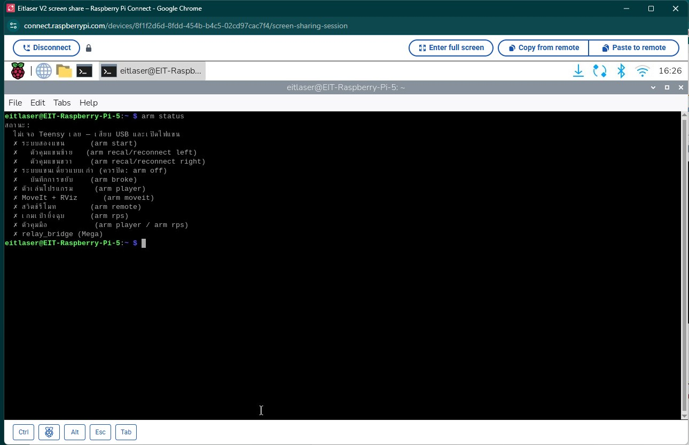
หนึ่งหน้าต่างต่อหนึ่งคำสั่ง
คำสั่งหลายตัว เช่น arm start, arm player, arm rps และ arm tray เป็นแบบ "เปิดค้าง" คือทำงานอยู่ตราบที่หน้าต่างยังเปิด จึงต้องเปิด Terminal หลายหน้าต่าง หน้าต่างละหนึ่งคำสั่ง และห้ามปิดหน้าต่างระหว่างใช้งาน เมื่อจะเลิกให้กด Ctrl+C ในหน้าต่างนั้น หน้าต่างจาก ssh และจาก Pi Connect ใช้ปนกันได้ ส่วนคำสั่งสั้นที่ทำเสร็จแล้วจบเอง เช่น arm status หรือ arm hand rock พิมพ์ในหน้าต่างว่างหน้าต่างไหนก็ได้
คำสั่ง arm
arm คือคำสั่งลัดสำหรับใช้งานหุ่นทั้งตัว (ไม่ใช่แค่แขน แต่รวมมือ กล้อง ฐานล้อ lidar และเกม) ตัวจริงคือสคริปต์ ~/Humanoi/scripts/arm.sh ซึ่งติดตั้งเป็น alias ไว้ใน ~/.bashrc ของ Pi แล้ว บรรทัดที่ใช้ติดตั้งคือ
alias arm='bash ~/Humanoi/scripts/arm.sh' # มีอยู่ใน ~/.bashrc ของ Pi แล้ว — ต้องพิมพ์เองเฉพาะตอนตั้ง Pi ใหม่
สคริปต์นี้รันนอก container ถ้า container ไม่ได้เปิดอยู่ จะขึ้น ✗ container humanoi_ros ไม่ได้เปิดอยู่ พร้อมบอกคำสั่งเปิด ในทุกคำสั่ง left หมายถึงแขน 1 (ซ้ายเมื่อมองจากตัวหุ่น) และ right หมายถึงแขน 2 ดูรายการคำสั่งทั้งหมดได้ตลอดด้วย
arm help
หรือดูทีละหมวด ใช้ชื่อหมวดภาษาอังกฤษหรือภาษาไทยก็ได้
arm help hand # เท่ากับ arm help มือ
| หมวด | เรื่อง |
|---|---|
setup | ตั้งค่าบอร์ดแขน (ครั้งแรก / หลังเปลี่ยนบอร์ด) |
arm | เปิดใช้งานแขน: status, calibrate, start, player, moveit, off |
teach | สอนท่า สร้างโปรแกรม |
play | เล่นโปรแกรม |
hand | มือ AmazingHand |
tray | หยิบกล่องด้วยกล้อง |
base | ฐานล้อ |
lidar | lidar และแผนที่ |
mission | ภารกิจ |
rps | เกมเป่ายิ้งฉุบ |
ดูว่าอะไรเปิดอยู่: arm status
ก่อนเริ่มงานทุกครั้ง และทุกครั้งที่ไม่แน่ใจว่าหน้าต่างไหนยังทำงานอยู่ ให้สั่ง arm status คำสั่งนี้อ่านอย่างเดียว ไม่ขยับอะไร
arm status
ผลเป็นรายการ ✓ (เปิดอยู่) และ ✗ (ปิด) ของแต่ละส่วน ถ้าระบบแขนปิดอยู่ จะแสดงรายชื่อบอร์ด Teensy ที่เสียบอยู่ด้วย ถ้าระบบแขนเปิดอยู่ จะแสดงรายชื่อ controller ของแต่ละแขนแทน (ตอนนั้นระบบแขนถือพอร์ต Teensy อยู่ จึงถามบอร์ดไม่ได้)
| บรรทัดในผล | เปิดด้วยคำสั่ง |
|---|---|
| ระบบสองแขน | arm start |
| ตัวคุมแขนซ้าย / ตัวคุมแขนขวา | มากับ arm start (เปิดใหม่ทีละแขนด้วย arm recal / arm reconnect) |
| ระบบแขนเดี่ยวแบบเก่า | ควรเป็น ✗ เสมอ — ถ้าเป็น ✓ ให้ arm off |
| ตัวเล่นโปรแกรม | arm player |
| MoveIt + RViz | arm moveit |
| สวิตช์รีโมท | arm remote |
| เกมเป่ายิ้งฉุบ | arm rps |
| ตัวคุมมือ | มากับ arm player หรือ arm rps |
| relay_bridge (Mega) | arm base หรือ arm remote |
คำสั่งคู่กันคือ arm off ซึ่งปิดทุกอย่างของแขน (รวมเกม) แล้วแสดงสถานะให้ดูอีกครั้ง แขนจะค้างอยู่ที่ท่าปัจจุบัน
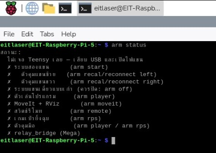
container humanoi_ros
container ถูกตั้งค่าไว้ใน ~/Humanoi/docker-compose.yml ให้ทำงานโดยที่ผู้ใช้แทบไม่ต้องรู้ว่ามันมีอยู่ การตั้งค่าที่มีผลต่อการใช้งานมีดังนี้
| การตั้งค่า | ผลต่อการใช้งาน |
|---|---|
restart: unless-stopped | container เปิดเองทุกครั้งที่ Pi บูต ไม่ต้องสั่งเอง |
network_mode: host | topic ของ ROS มองเห็นจากเครื่องอื่นในวง LAN และ Foxglove ต่อได้ที่พอร์ต 8765 |
privileged + /dev | ใช้พอร์ต USB ได้ทุกตัว แม้เสียบทีหลัง |
./ros2_ws → /humanoi_ws | โค้ดและผล build อยู่บน Pi ถาวร ไม่หายแม้ container ถูกลบ — build ครั้งเดียวพอ |
| ปิดไฟล์ core dump | โปรแกรมบางตัวของ Jazzy (move_group, ros2_control_node, rviz2) มักแครชตอนถูกปิดแล้วทิ้งไฟล์ core ราว 400 MB ทุกครั้ง เคยสะสมถึง 6.2 GB จนดิสก์เต็ม จึงปิดไว้ |
โดยปกติไม่ต้องยุ่งกับ container เลย ถ้าจำเป็น คำสั่งพื้นฐานบน Pi (นอก container) มีดังนี้
cd ~/Humanoi && docker compose up -d # เปิด container (ปกติเปิดเองหลังบูตอยู่แล้ว)
docker exec -it humanoi_ros bash # เข้าไปพิมพ์คำสั่ง ros2 ข้างใน container
ข้างใน container โค้ดอยู่ที่ /humanoi_ws หลังรับโค้ดใหม่จาก PC ให้ build แล้วโหลด environment ก่อนใช้ ros2 run หรือ ros2 launch
cd /humanoi_ws && colcon build --symlink-install # ใน container
source install/setup.bash # ใน container
docker exec humanoi_ros ...) ต้องนำหน้าด้วย /entrypoint.sh เสมอ เช่น docker exec humanoi_ros /entrypoint.sh ros2 topic list ไม่งั้นจะหา ros2 ไม่เจอ (bash -lc ไม่โหลด ROS ให้)docker compose down แล้ว up ใหม่ หรือแก้ docker-compose.yml แล้ว up จะทำให้ของที่เคยติดตั้งเพิ่มเข้าไปใน container ระหว่างใช้งาน (ที่ยังไม่อยู่ใน image) หายทั้งหมด ถ้าต้องการเปลี่ยนสิ่งที่ติดตั้งใน container ให้ใช้ rebuild_image.sh ตามหัวข้อด้านล่างไฟล์บน Pi อยู่ที่ไหน
โฟลเดอร์ ~/Humanoi บน Pi ไม่ใช่ git clone แต่เป็นสำเนาที่ส่งมาจาก PC ต้นฉบับของโค้ดอยู่ใน git บน PC (แพ็กเกจแขน AR4 อยู่อีก repo หนึ่งที่ Desktop\ar4\ar4_ws) การแก้โค้ดจึงต้องแก้บน PC แล้วส่งมา ไม่แก้บน Pi โดยตรง เพราะการส่งครั้งถัดไปจะเขียนทับ
อย่างไรก็ตาม มีไฟล์ข้อมูลกลุ่มหนึ่งที่เกิดขึ้นบน Pi จากการสอนและการคาลิเบรต ไฟล์เหล่านี้อยู่บน Pi เท่านั้นจนกว่าจะคัดลอกกลับไป PC และเป็นไฟล์ที่ต้องระวังที่สุด
ไฟล์ (บน Pi อยู่ใต้ ~/Humanoi/ros2_ws/src/) | เก็บอะไร | เกิดจาก |
|---|---|---|
ar_program/config/programs.yaml | ท่าแขน โปรแกรม และท่ามือที่สอนเอง (hand_poses, hand_poses_left) | arm teach, arm program, arm hand-teach |
humanoi_games/config/middle_pos.json, middle_pos_left.json | ค่าคาลิเบรตนิ้ว (ชุดมือขวา / ชุดมือซ้าย) | arm hand-calibrate |
humanoi_description/config/tray_grasp_left.yaml, tray_teach_left.captures.npz | ผลการสอนหยิบกล่อง และข้อมูลดิบ | arm tray-teach |
humanoi_description/config/astra_color.yaml, camera_to_left_arm.yaml | ค่าเลนส์กล้อง และตำแหน่งกล้องเทียบฐานแขนซ้าย | การคาลิเบรตกล้อง |
ภายใน container ไฟล์เดียวกันนี้อยู่ใต้ /humanoi_ws/src/ ไฟล์ที่ถูกเขียนจากใน container จะเป็นของผู้ใช้ root
ส่งโค้ดจาก PC: sync_to_pi.sh
หลังแก้โค้ดบน PC ให้ส่งไป Pi ด้วยสคริปต์นี้ รันบน PC ใน Git Bash หรือ WSL จากโฟลเดอร์ Humanoi
bash scripts/sync_to_pi.sh # บน PC — ค่าเริ่มส่งไป eitlaser@EIT-Raspberry-Pi-5.local (ใส่ user@host อื่นต่อท้ายได้)
สคริปต์ส่ง docker/, docker-compose.yml, scripts/ และ ros2_ws/src (ไม่ส่งโฟลเดอร์ build, install, log) ไปไว้ใน ~/Humanoi และถ้าพบ workspace แขน AR4 บน PC (Desktop\ar4\ar4_ws\src) จะส่งแพ็กเกจ ar_description, ar_hardware_interface, ar_program, ar_moveit_config, ar_gz_bringup และ ar_dual ไปรวมใน ros2_ws/src ของ Pi ด้วย จบแล้วสคริปต์พิมพ์คำสั่ง build ให้ ซึ่งคือ
ssh eitlaser@EIT-Raspberry-Pi-5.local 'docker exec humanoi_ros /entrypoint.sh bash -c "cd /humanoi_ws && colcon build --symlink-install"' # บน PC — build ใน container หลังส่งโค้ด
programs.yaml บน Pi ถูกแทนด้วยของ PC ทุกครั้ง สคริปต์สำรองของเดิมไว้เป็น programs.yaml.bak ให้ แต่สำรองทับทุกรอบ ถ้า sync ซ้ำอีกครั้ง ไฟล์สำรองจะกลายเป็นของ PC และท่าที่สอนบน Pi หายถาวร ไฟล์ข้อมูลอื่นในตารางข้างบน ถ้าบน PC มีไฟล์ชื่อเดียวกันอยู่ ก็ถูกทับเช่นกันโดยไม่มีสำรอง (ไฟล์ที่มีเฉพาะบน Pi จะไม่ถูกลบ) ไฟล์คาลิเบรตนิ้ว middle_pos.json และ middle_pos_left.json ก็ถูกทับด้วย เพราะตอนนี้บน PC มีสำเนาอยู่ใน ros2_ws/src แล้ว (AMAZINGHAND.md ที่บอกว่าไม่ถูกทับ เขียนไว้ก่อนจะมีสำเนาบน PC) ดังนั้นถ้ามีการสอนหรือคาลิเบรตบน Pi ให้ดึงไฟล์เหล่านั้นกลับมา PC ก่อน sync ทุกครั้งดึงไฟล์กลับด้วย scp โดยรันบน PC ใน Git Bash จากโฟลเดอร์ Humanoi ดึงเฉพาะไฟล์ที่มีการสอนหรือคาลิเบรตบน Pi เสร็จแล้วดู git status ทั้งใน repo Humanoi และ Desktop\ar4 ว่าไฟล์ไหนเปลี่ยน แล้ว commit ก่อน sync
P=eitlaser@EIT-Raspberry-Pi-5.local:Humanoi/ros2_ws/src # บน PC — ตั้งครั้งเดียว ใช้กับทุกบรรทัดด้านล่าง
scp $P/ar_program/config/programs.yaml ../ar4/ar4_ws/src/ar_program/config/ # ท่าแขน โปรแกรม และท่ามือที่สอน (ไฟล์อยู่ใน repo ar4)
scp "$P/humanoi_games/config/middle_pos*.json" ros2_ws/src/humanoi_games/config/ # ค่าคาลิเบรตนิ้วทั้งสองชุดมือ
scp $P/humanoi_description/config/tray_grasp_left.yaml $P/humanoi_description/config/tray_teach_left.captures.npz ros2_ws/src/humanoi_description/config/ # ผลการสอนหยิบกล่องและข้อมูลดิบ
ดูหุ่นจาก PC ด้วย Foxglove
Foxglove เป็นโปรแกรมดูข้อมูล ROS เช่น ภาพกล้อง แผนที่ lidar และข้อความสถานะ จาก PC ฝั่ง Pi มีโหนด foxglove_bridge เปิดพอร์ต 8765 ให้ Foxglove บน PC ต่อเข้ามา วิธีนี้ทำให้ดูภาพได้โดยไม่ต้องเปิดหน้าจอของ Pi และไม่ต้องติดตั้งอะไรเพิ่มบน Pi
ส่วนใหญ่ไม่ต้องเปิด bridge เอง เพราะคำสั่งที่เปิดกล้อง (arm tray, arm rps แบบที่เปิดกล้องเอง และ yolo) เปิด foxglove_bridge มาด้วย และ arm map ก็เปิดให้ถ้ายังไม่มี ถ้าไม่มีตัวไหนเปิดให้ สั่งเองใน container ได้
ros2 launch foxglove_bridge foxglove_bridge_launch.xml # ใน container
ฝั่ง PC เปิด Foxglove แล้วต่อแบบ Foxglove WebSocket ไปที่ ws://EIT-Raspberry-Pi-5.local:8765 (ถ้าชื่อเครื่องหาไม่เจอ ใช้ IP แทน เช่น ws://192.168.1.74:8765) จากนั้นเพิ่ม panel ตามสิ่งที่จะดู
| ดูอะไร | panel | topic | มาจาก |
|---|---|---|---|
| กล่องและป้าย ArUco | Image | /tray/image/compressed | arm tray |
| จอ HUD ของเกมสำหรับผู้เล่น | Image | /rps/hud/image/compressed | arm rps |
| ภาพที่เกมใช้อ่านมือผู้เล่น | Image | /rps/vision/image/compressed | arm rps |
| กรอบวัตถุจาก YOLO | Image | /yolo/image/compressed | yolo.launch.py |
| แผนที่และ lidar | 3D (Display frame = map) | /map, /scan | arm map |
ภาพบาง topic เช่นภาพของตัวหากล่องและจอ HUD ของเกม ถูกวาดเฉพาะตอนมีคนเปิด panel ดูอยู่เท่านั้น
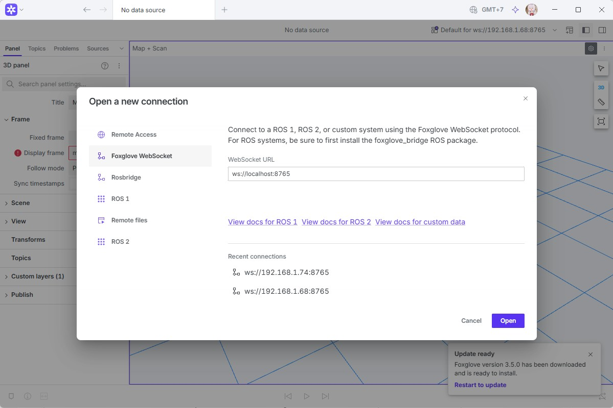
สร้าง Docker image ใหม่: rebuild_image.sh
container สร้างจาก image ชื่อ humanoi-ros:jazzy ซึ่ง build จาก docker/Dockerfile ระหว่างพัฒนามีการติดตั้งของเพิ่มเข้าไปใน container ที่รันอยู่ เช่น MoveIt/RViz ไลบรารีของมือและเกม (rustypot, mediapipe) และ teensy_loader_cli ของพวกนี้จะหายถ้า container ถูกสร้างใหม่ ปัจจุบัน Dockerfile รวมของเหล่านี้ไว้แล้ว สคริปต์ rebuild_image.sh ใช้สร้าง image ใหม่จาก Dockerfile แล้วสลับ container ไปใช้ เพื่อให้ของทั้งหมดติดถาวร สคริปต์รันบน Pi นอก container และมีสี่โหมด
| โหมด | ทำอะไร | ต้องปิดระบบก่อนไหม |
|---|---|---|
check (ค่าเริ่ม) | เช็กอย่างเดียว: ดิสก์ว่างอย่างน้อย 4 GB, Dockerfile บน Pi เป็นรุ่นที่มีชั้นไลบรารีมือ/เกม (ตรงกับ PC), มีโปรแกรม ROS รันอยู่หรือไม่ | ไม่ต้อง |
build | เก็บ image เดิมไว้ชื่อ humanoi-ros:jazzy-prev สร้าง image ใหม่ (log อยู่ที่ ~/Humanoi/docker_build.log) แล้วเทียบรายชื่อแพ็กเกจที่มีใน container ตอนนี้แต่ไม่มีใน image ใหม่ | ไม่ต้อง — container เดิมทำงานต่อได้ |
switch | สร้าง container ใหม่จาก image ใหม่ แล้วตรวจว่ามี MoveIt, RViz, controller_manager, ไดรเวอร์กล้อง, ไลบรารี Python ของมือ/เกม, teensy_loader_cli และ workspace ครบ | ต้องปิดทุกโปรแกรม ROS |
rollback | กลับไปใช้ image เดิม (humanoi-ros:jazzy-prev) | ต้องปิดทุกโปรแกรม ROS |
- ส่ง
docker/Dockerfileรุ่นล่าสุดจาก PC มาก่อน (sync_to_pi.shส่งให้) - เช็กความพร้อม ทุกบรรทัดควรเป็น ✓ ถ้าดิสก์ไม่พอ ดูหัวข้อพื้นที่ดิสก์ด้านล่าง
bash ~/Humanoi/scripts/rebuild_image.sh check
- สร้าง image ใหม่ ระหว่างนี้ใช้หุ่นต่อได้ ตอนจบดูรายการ "มีใน container ตอนนี้ แต่ image ใหม่ไม่มี" ถ้าขึ้นว่าไม่มีอะไรหาย ไปขั้นต่อไปได้ ถ้ามีรายการและในนั้นมีของที่ใช้อยู่ ต้องเพิ่มลง Dockerfile บน PC แล้ว build ใหม่ก่อน
bash ~/Humanoi/scripts/rebuild_image.sh build
- ปิดทุกโปรแกรม ROS:
arm offปิดฝั่งแขนและเกม ส่วนหน้าต่างเปิดค้างอื่น เช่นarm base,arm lidar,arm trayให้กด Ctrl+C - สลับ container ไป image ใหม่ แล้วดูผลตรวจท้ายคำสั่ง ทุกบรรทัดควรเป็น ✓
bash ~/Humanoi/scripts/rebuild_image.sh switch
- ถ้ามี ✗ หรือระบบใช้งานไม่ได้ ย้อนกลับไป image เดิม
bash ~/Humanoi/scripts/rebuild_image.sh rollback
เพราะ ros2_ws อยู่บน Pi ผ่าน volume โค้ดและผล build จึงไม่หายตอนสลับ ไม่ต้อง colcon build ใหม่
rustypot, mediapipe, teensy_loader_cli และ avrdude ของทั้งหมดนี้ติดตั้งเพิ่มใน container ระหว่างใช้งาน ถ้า container ถูกสร้างใหม่ก่อนทำขั้นตอนข้างบน ของเหล่านี้จะหายทั้งหมด
พื้นที่ดิสก์
การ์ดของ Pi มีความจุ 29 GB และ image ROS อย่างเดียวก็กินไป 3.6 GB ที่ว่างจึงเหลือไม่มาก ดูที่ว่างได้จากบรรทัดแรกของ rebuild_image.sh check ซึ่งจะเตือนเมื่อเหลือไม่ถึง 4 GB และแนะนำของที่ลบได้ เช่น docker builder prune ไฟล์ core dump และ log
ที่ผ่านมามีสองเหตุที่ทำให้การ์ดเต็ม เหตุแรกคือไฟล์ core dump ของ Jazzy ซึ่งตอนนี้ปิดไว้ใน docker-compose.yml แล้ว เหตุที่สองคือเปิดโปรแกรม guvcview กับกล้อง Orbbec แล้วกล้องหลุด guvcview จะเขียน error ลง ~/.xsession-errors ไม่หยุดจนการ์ดเต็ม (เคยโตถึง 6 GB) ถ้าเจอ ให้ปิดโปรแกรมแล้วล้างไฟล์นั้น
truncate -s 0 ~/.xsession-errors # บน Pi นอก container
ข้อควรระวังเรื่อง USB และไฟ
บอร์ด Teensy ของแขนถูกหาเองจากชื่อแขนที่เก็บในบอร์ด จึงย้ายสายไปช่องไหนของ Pi ก็ได้ (ปิดไฟแขนก่อน) ส่วนบอร์ดมือถูกหาจากหมายเลขบอร์ด (ดูบทมือ AmazingHand) เอกสารวันที่ 21 ต.ค. บันทึกว่า Pi มี USB 4 ช่อง ไม่พอสำหรับแขนสองข้าง มือ และกล้องพร้อมกัน ต้องใช้ USB hub ที่มีไฟเลี้ยง ต้องเช็ก: ตอนนี้ใช้ USB hub รุ่นใด และอุปกรณ์ไหนเสียบช่องไหน
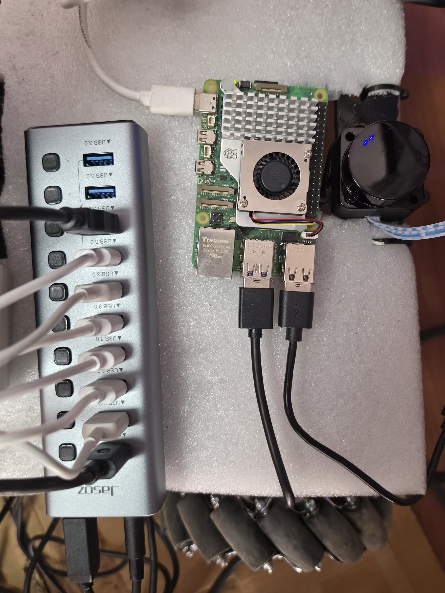
เปิด–ปิดหุ่น และรีโมท
ลำดับเปิดเครื่อง
- เช็กสายก่อนเปิดไฟใดๆ — USB ของแขน มือ Mega และ lidar เสียบที่ Pi ครบ (ย้ายสายแขนตอนไฟแขนเปิดไม่ได้)
- เปิด Pi รอราว 1 นาที container
humanoi_rosขึ้นเอง เช็กด้วยarm status
- เปิดรีโมท แล้วโยก SWA ขึ้นหนึ่งครั้งแล้วลง (Mega ยอม ARM ต่อเมื่อเห็น SWA ขึ้นก่อน) ไฟ LED บน Mega ต้องเลิกกะพริบเร็ว
- เปิดไฟแขน แล้ว calibrate และเปิดระบบแขน (บท แขนกล AR4)
- เปิดส่วนที่งานนั้นต้องใช้ หน้าต่างละคำสั่ง ตามตารางข้างล่าง
หน้าต่างที่ต้องเปิดค้าง
คำสั่งพวกนี้ทำงานค้างไว้ ปิดด้วย Ctrl+C เปิดแต่ละตัวใน terminal ของมันเอง (ssh หลายหน้าต่าง หรือแท็บ)
| คำสั่ง | ทำอะไร | ต้องใช้กับ |
|---|---|---|
arm start | ระบบแขนสองแขน | ทุกงานที่ขยับแขน |
arm player | ตัวเล่นโปรแกรม + มือ | arm run · ภารกิจ · หยิบกล่อง |
arm tray | กล้องหาตำแหน่งกล่อง | หยิบกล่อง · ภารกิจ |
arm lidar | lidar | กันชน · arm drive · ภารกิจ |
arm base | ฐานล้อ + กันชน | ROS ขับฐาน · กันชนตอนขับรีโมท |
arm mission <ชื่อ> | เล่นภารกิจ | งาน A → B |
arm rps … | เกมเป่ายิ้งฉุบ (แทน arm player) | เกม |

ลำดับปิดเครื่อง
- หยุดงานที่ทำอยู่:
arm stopหรือ Ctrl+C ที่หน้าต่างภารกิจ/เกม - พาแขนไปท่าพัก แล้วปิดระบบแขน
arm off
- Ctrl+C หน้าต่าง
arm baseและarm lidar(หลังปิดarm baseรีโมทจะขับฐานไม่ได้จนกว่าจะโยก SWA ขึ้น-ลง — ตั้งใจให้เป็นแบบนั้น) - ประคองแขน แล้วปิดไฟแขน (J1 ร่วง)
- ปิดไฟมอเตอร์ฐาน ปิด Pi (
sudo shutdown nowรอจนไฟบน Pi หยุดกะพริบก่อนถอดปลั๊ก) ปิดรีโมทเป็นอย่างสุดท้าย
รีโมท FlySky FS-ST8
รีโมทมีสองหน้าที่ ขับฐานล้อด้วยมือ และเป็นสวิตช์ฉุกเฉิน ตัวรับ FS-SR8 ต่อเข้า Mega ตรงๆ จึงทำงานแม้ Pi ไม่ได้เปิดโปรแกรมอะไร

| ช่อง | บนรีโมท | ทำอะไร | ขา Mega |
|---|---|---|---|
| CH2 | คันโยกขวา ขึ้น/ลง | เดินหน้า / ถอยหลัง | 3 |
| CH1 | คันโยกขวา ซ้าย/ขวา | สไลด์ข้าง | 2 |
| CH4 | คันโยกซ้าย ซ้าย/ขวา | หมุนตัว | 5 |
| CH5 | SWA | ลง = ARM (ขับได้) · ขึ้น = หยุดทุกล้อ | 6 |
| CH6 | SWB ต้องเช็ก: AR4_ARM_COMMANDS.md บอกว่า CH6 ตั้งเป็น SWC (สวิตช์ 3 ตำแหน่ง) — ดูที่รีโมทจริงว่าช่อง 6 เป็นสวิตช์ไหน | โยกลง = เล่นโปรแกรม / ยืนยันขั้นในภารกิจ | 7 |
| CH8 | SWD | โยกลง = หยุดแขน / หยุดภารกิจ | 9 |
ใครคุมล้อ — ดูจากไฟ LED บน Mega
| สถานะ | เกิดเมื่อ | LED (ขา 13) |
|---|---|---|
| NO SIGNAL | รีโมทปิด / หลุด / ตัวรับส่งค่า failsafe — ล้อหยุด | กะพริบเร็ว |
| DISARMED | SWA ขึ้น หรือยังไม่เคยเห็น SWA ขึ้นหลังเปิดเครื่อง — ล้อหยุด | กะพริบช้า |
| RC | SWA ลง + ขยับคันโยก — รีโมทขับ (ROS ถูกเมิน) | ติดค้าง |
| ROS | SWA ลง + ปล่อยคันโยกนิ่ง 0.7 วิ — Pi ขับได้ | ติด ดับแวบทุก 1 วิ |
arm drive หรือภารกิจได้ด้วยแขนกล AR4
หุ่น Humanoi มีแขนกล AR4 สองแขนติดอยู่บนเสากลางตัวหุ่น แต่ละแขนมีข้อต่อหกข้อ ขับด้วยสเต็ปเปอร์มอเตอร์ และมีบอร์ด Teensy ของตัวเองหนึ่งตัวทำหน้าที่นับตำแหน่งและสั่งมอเตอร์ทุกข้อ ปลายแขนทั้งสองข้างติดมือ AmazingHand ซึ่งอธิบายแยกไว้ในบท มือ AmazingHand
บทนี้พาคุณไปตั้งแต่ทำความรู้จักแขน ตั้งค่าบอร์ดครั้งแรก calibrate เปิดระบบแขน กู้แขนที่มีปัญหาทีละข้าง ไปจนถึงปิดระบบอย่างปลอดภัย ส่วนการสอนท่าและเขียนโปรแกรมให้แขนเล่นอยู่ในบท สอนท่าและสร้างโปรแกรม
ทุกคำสั่งในบทนี้พิมพ์ใน Terminal ของ Raspberry Pi นอก container ผ่านคำสั่งลัด arm ซึ่งก็คือสคริปต์ ~/Humanoi/scripts/arm.sh ลืมคำสั่งเมื่อไหร่ พิมพ์ arm help เพื่อดูทั้งหมด หรือดูเฉพาะหมวดด้วย arm help setup (ตั้งค่าบอร์ด) และ arm help arm (เปิดใช้งานแขน)
รู้จักแขนทั้งสอง
ระบบเรียกแขนตามด้านเมื่อมองจากตัวหุ่น แบบเดียวกับที่เราเรียกแขนซ้ายแขนขวาของตัวเอง ดังนั้นถ้าคุณยืนหันหน้าเข้าหาหุ่น แขนซ้ายของหุ่นจะอยู่ทางขวามือของคุณ ในคำสั่งพิมพ์ชื่อแขนได้หลายแบบ ทุกแบบมีความหมายเท่ากัน
| แขน | พิมพ์ในคำสั่งได้ | ความหมาย |
|---|---|---|
left = แขน 1 | left l 1 ซ้าย | แขนซ้ายเมื่อมองจากตัวหุ่น |
right = แขน 2 | right r 2 ขวา | แขนขวาเมื่อมองจากตัวหุ่น |
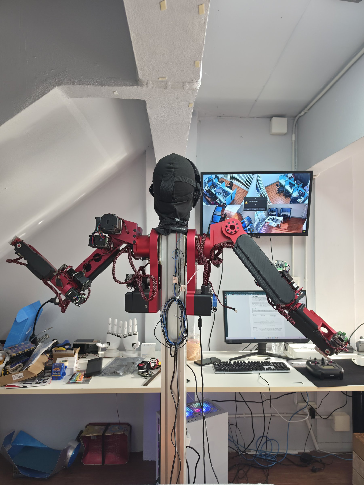
ข้อต่อ J1 ถึง J6
ข้อต่อนับจากโคนแขนออกไปหาปลายแขน J1 อยู่ที่โคนแขน (ฐานของแขน) J2 คือไหล่ J3 คือศอก ส่วน J4 J5 และ J6 เป็นชุดข้อมือ โดย J6 เป็นข้อมือหมุนที่อยู่ติดกับมือ ทุกข้อมีลิมิตสวิตช์ของตัวเองไว้ใช้ตอน calibrate ข้อความของระบบบางที่เรียกข้อต่อว่า "ข้อ 1" ถึง "ข้อ 6" หรือ joint_1 ถึง joint_6 ทั้งหมดหมายถึง J1 ถึง J6 ตามลำดับ

แขนรู้ตำแหน่งของตัวเองได้อย่างไร
Teensy ไม่ได้วัดมุมข้อต่อจริง มันนับจำนวนสเต็ปที่สั่งให้มอเตอร์หมุนแล้วแปลงเป็นมุม ตราบที่มอเตอร์หมุนครบทุกสเต็ปตามคำสั่ง ตัวเลขนี้ก็ตรงกับแขนจริง แต่เมื่อปิดไฟแขน ตัวนับจะหายไป และเมื่อแขนชนอะไรหรือสายพานรูด มอเตอร์ก็หมุนไม่ตรงกับที่นับ ตัวเลขที่ระบบเห็นจึงคลาดจากท่าจริงของแขน
การ calibrate คือการให้แต่ละข้อหมุนไปแตะลิมิตสวิตช์เพื่อตั้งจุดอ้างอิงใหม่ ทุกอย่างที่ตามมา ตั้งแต่ท่าที่สอนไว้จนถึงการวางแผนใน MoveIt ขึ้นกับตัวเลขชุดนี้ ถ้าตัวเลขผิด ทุกท่าจะไปผิดที่
บอร์ด Teensy ถูกหาจากชื่อที่เก็บในบอร์ด
บอร์ด Teensy ของสองแขนรายงานหมายเลข USB ซ้ำกัน Pi จึงแยกจากหมายเลขไม่ได้ว่าบอร์ดไหนเป็นของแขนไหน วิธีแก้คือเก็บชื่อแขน (left หรือ right) ไว้ในหน่วยความจำของบอร์ดเอง เฟิร์มแวร์ AR4_ROS2_seq ตั้งแต่รุ่น v2 ตอบชื่อนี้ได้ ทุกครั้งที่คำสั่ง arm ต้องใช้พอร์ต มันจะถามชื่อจากทุกบอร์ดแล้วจับคู่พอร์ตให้เอง ผลคือคุณย้ายสาย USB ไปเสียบช่องไหนของ Pi ก็ได้ ขอเพียงปิดไฟแขนก่อนถอดหรือเสียบทุกครั้ง
นอกจากชื่อแขน บอร์ดยังเก็บทิศหมุนของมอเตอร์แต่ละข้อ และในเฟิร์มแวร์ v3 เก็บค่าชดเชยศูนย์ของข้อต่อด้วย ค่าเหล่านี้ตั้งครั้งเดียวตอนตั้งค่าบอร์ดครั้งแรก แล้วอยู่ในบอร์ดแม้ปิดไฟ
แต่ละแขนยังมีสาย USB อีกเส้นจากบอร์ด Nano ซึ่งตอนนี้ระบบ ROS ยังไม่ได้ใช้ แต่สายเส้นนี้ก็ต้องเช็กไฟย้อนและถอดเสียบตามกฎเดียวกับสาย Teensy
LEFT_TEENSY=/dev/serial/by-path/... RIGHT_TEENSY=/dev/serial/by-path/... arm start ใช้งานปกติไม่ต้องทำกฎความปลอดภัยของแขน
แขน AR4 มีแรงมากพอจะทำให้คนบาดเจ็บหรือทำอุปกรณ์เสียหาย กฎในหัวข้อนี้มาจากเหตุการณ์ที่เกิดขึ้นจริงกับหุ่นตัวนี้ อ่านให้เข้าใจก่อนเปิดไฟแขนครั้งแรก และทบทวนทุกครั้งที่มีคนใหม่มาใช้งาน กฎความปลอดภัยของทั้งหุ่นอยู่ในบท ความปลอดภัย
arm stop ปุ่ม Stop ใน RViz และสวิตช์ SWD บนรีโมท เป็นการหยุดทางซอฟต์แวร์ ใช้แทนสวิตช์ตัดไฟไม่ได้arm run และ arm goto รวมถึงสองแขนชนกันเองและแขนชนเสา แขนเดินตรงจากท่าหนึ่งไปอีกท่า ไม่ได้เดินตามเส้นทางที่ MoveIt วางไว้ตอนจัดท่า โปรแกรมใหม่ทุกโปรแกรมต้องลองด้วยความเร็วต่ำก่อนเสมออีกเรื่องหนึ่งคือห้ามเปิดระบบแขนซ้อนสองชุด เคยทำให้แขนขยับมั่วมาแล้ว คำสั่ง arm จึงไม่ยอมเปิดซ้อนให้ ถ้าเห็นข้อความ ระบบแขนเปิดอยู่แล้ว — ห้ามเปิดซ้อน ให้ใช้ระบบที่เปิดอยู่ หรือสั่ง arm off แล้วเริ่มใหม่

ตั้งค่าบอร์ดครั้งแรก
หัวข้อนี้ทำเฉพาะเมื่อใช้ Pi ตัวใหม่ เปลี่ยนบอร์ด Teensy หรือแฟลชเฟิร์มแวร์ใหม่ เพราะชื่อแขน ทิศมอเตอร์ และค่าชดเชยศูนย์ถูกเก็บในบอร์ดแล้ว การใช้งานประจำวันไม่ต้องทำซ้ำ ทุกคำสั่งในหัวข้อนี้ใช้ตอนระบบแขนปิดอยู่ เพราะบอร์ดที่ระบบแขนกำลังใช้พอร์ตอยู่จะไม่ตอบ
เช็กไฟย้อนก่อนต่อแขนเข้า Pi
ถ้าแขนจ่ายไฟ 5V ย้อนออกมาทางสาย USB แล้วเสียบเข้า Pi ตัว Pi อาจเสียหาย ก่อนต่อแขนเข้ากับ Pi ตัวใหม่ให้วัดก่อนทุกครั้ง
- เปิดไฟแขน แต่ยังไม่เสียบ USB เข้า Pi
- วัดแรงดันที่หัว USB-A ปลายสาย ระหว่างขา 5V (ขาริม) กับ GND (ขาริมอีกข้าง)
- วัดให้ครบทุกเส้น ทั้ง Teensy และ Nano ของทั้งสองแขน
- ทุกเส้นต้องได้ 0V ถ้าเส้นไหนได้ประมาณ 5V ห้ามเสียบ แขนกำลังจ่ายไฟย้อน ต้องแก้ก่อน หรือใส่ USB isolator คั่น

ดูบอร์ดทั้งหมด
ปิดไฟแขน เสียบ USB ทุกเส้นเข้า Pi แล้วเปิดไฟแขน จากนั้นสั่ง
arm ports
คำสั่งนี้แสดงบอร์ด Teensy ทุกตัวที่เจอ พร้อมพอร์ต รุ่นเฟิร์มแวร์ (seq2 หรือ seq3) ชื่อแขนที่เก็บไว้ และข้อที่ตั้งให้มอเตอร์หมุนกลับทิศ ถ้าบอร์ดขึ้นว่า ไม่ตอบ แปลว่าบอร์ดกำลัง calibrate อยู่ หรือระบบแขนเปิดใช้พอร์ตนั้นอยู่
ตั้งชื่อบอร์ด
บอร์ดใหม่ยังไม่มีชื่อ วิธีที่ง่ายและปลอดภัยที่สุดคือให้ระบบขยับแขนทีละบอร์ด แล้วคุณบอกว่าเห็นแขนไหนขยับ วิธีนี้ใช้แทนการถอดสายเพื่อดูว่าบอร์ดไหนหายไป ซึ่งห้ามทำขณะไฟแขนเปิด
arm identify
- ข้อ 6 (ข้อมือหมุน) ของบอร์ดแรกหมุนไป-กลับ 10°
- ดูว่าแขนไหนขยับ แล้วตอบ l = ซ้าย, r = ขวา, a = ขอดูขยับอีกที หรือ s = ข้ามบอร์ดนี้
- ระบบไปบอร์ดถัดไปจนครบ จบแล้วขึ้น
left=... right=...แปลว่าใช้ได้
ถ้าไม่เห็นแขนไหนขยับเลย แปลว่าไฟแขนปิดอยู่ การหมุนข้อ 6 นี้ไม่ต้อง calibrate ก่อน เพราะขยับจากตำแหน่งปัจจุบันเล็กน้อยแล้วกลับที่เดิม ภายหลังถ้าอยากเช็กว่าชื่อยังตรงกับแขนจริง สั่งให้หมุนเฉพาะแขนนั้นได้
arm identify left
ถ้ารู้อยู่แล้วว่าบอร์ดของแขนไหนอยู่พอร์ตไหน (ดูจาก arm ports) จะตั้งชื่อตรงๆ ก็ได้
arm name <พอร์ตจาก arm ports> left
ตั้งทิศมอเตอร์
ถ้าข้อไหนของแขนประกอบกลับด้าน มอเตอร์ข้อนั้นจะหมุนสวนทางกับที่ระบบคิด อาการที่เห็นชัดที่สุดคือตอน calibrate ข้อนั้นหมุนหนีลิมิตสวิตช์จนขึ้น FAIL วิธีแก้คือบอกบอร์ดว่าข้อไหนกลับทิศ เขียนเป็นเลข 0 กับ 1 หกหลักเรียงตาม J1 ถึง J6 โดย 1 หมายถึงข้อนั้นหมุนกลับด้าน
arm dir right 000010 # J5 ของแขนขวากลับทิศ ข้ออื่นปกติ
ถ้าต้องการให้ทุกข้อกลับเป็นปกติ สั่ง arm dir right 000000 ค่านี้เก็บในบอร์ดของแขนนั้น และใช้ทั้งตอน calibrate และตอนแขนวิ่ง ตั้งแล้วต้อง calibrate ข้อนั้นใหม่ทุกครั้ง
ค่าชดเชยศูนย์ของข้อต่อ
มุมศูนย์ที่บอร์ดนับได้หลัง calibrate ไม่ได้ตรงกับท่าที่ข้อต่อตั้งตรงจริงพอดี ทีมงานจึงจัดแต่ละข้อให้ตรงด้วยระดับน้ำ อ่านค่าที่คลาด แล้วเก็บเป็นค่าชดเชย (องศา J1 ถึง J6) ของแต่ละแขนไว้ในไฟล์ ar_dual/config/zero_trims.yaml ค่านี้ทำให้ตัวเลขมุมที่เห็นในระบบเท่ากับมุมจริงของแขน โดยไม่เปลี่ยนระยะหมุนจริงหรือขั้นตอน calibrate
ค่าชดเชยต้องถูกเขียนลงบอร์ดด้วย ซึ่งต้องเป็นเฟิร์มแวร์ v3 (seq3) สั่งทีละแขน คำสั่งนี้ไม่ขยับแขน
arm zero left
arm zero right
ทุกครั้งที่ arm start ระบบจะเช็กว่าค่าในบอร์ดตรงกับไฟล์ ถ้าไม่ตรงจะไม่ยอมเปิดระบบ เพราะท่าที่สอนไว้จะไปผิดที่ กรณีที่เจอบ่อยคือแฟลชบอร์ดใหม่แล้วลืม arm zero
zero_trims.yaml โดยไม่จำเป็น ถ้าเปลี่ยนค่าของแขนไหน ท่าทุกท่าที่สอนไว้ของแขนนั้นต้องเลื่อนตาม (ข้อนั้นบวกค่าที่เพิ่ม) ไม่อย่างนั้นท่าเดิมจะไปผิดที่ และขอบเขตข้อต่อของแขนนั้นก็เลื่อนตามด้วยลำดับงานตั้งค่าครั้งแรกทั้งหมด
- เช็กไฟย้อนทุกสาย ต้องได้ 0V
- ปิดไฟแขน เสียบ USB ทุกเส้นเข้า Pi แล้วเปิดไฟแขน
arm portsดูว่าเห็นบอร์ดครบสองตัวarm identifyตั้งชื่อบอร์ด จนขึ้นleft=... right=...arm zero leftและarm zero rightเขียนค่าชดเชยศูนย์ลงบอร์ด- หาลำดับ calibrate ที่มือไม่ชน โดยไล่ทีละข้อ
arm calibrate left 6แล้วarm calibrate left 5ไปเรื่อยๆ (ดูหัวข้อ Calibrate ถัดไป) ได้ลำดับที่ปลอดภัยแล้วตั้งเป็นค่าเริ่มใน~/Humanoi/scripts/arm.sh - ข้อไหนขึ้น
✗ ... FAILให้ตั้งarm dirแล้ว calibrate ข้อนั้นใหม่ - calibrate ครบทั้งสองแขนแล้ว
arm startจากนั้นบันทึกท่าพักของแขนที่ยังไม่มี เช่นarm teach right rest
Calibrate
การ calibrate ให้แต่ละข้อหมุนไปชนลิมิตสวิตช์ ถอยออก แล้วกลับท่าพักของเฟิร์มแวร์ ก่อนไปข้อถัดไป ข้อที่ไม่ได้สั่งจะไม่ขยับ เมื่อครบทุกข้อตามที่สั่ง ข้อที่เพิ่ง calibrate และมีอยู่ในส่วน after_calibrate ของ zero_trims.yaml จะหมุนต่อไปยังมุมที่กำหนด ตอนนี้ตั้งไว้ให้ J1 J2 J4 J5 และ J6 ของทั้งสองแขนไปที่ 0° คือตั้งตรง
ต้อง calibrate เมื่อไหร่
- หลังปิดไฟแขน ซึ่งรวมถึงทุกครั้งที่ถอดหรือเสียบ USB เพราะต้องปิดไฟแขนก่อน
- หลังแฟลชเฟิร์มแวร์ Teensy ใหม่ หรือเปลี่ยนทิศมอเตอร์ด้วย
arm dir - หลังแขนชนอะไร หรือสายพานรูด เพราะตำแหน่งที่ระบบจำไว้ไม่ตรงกับแขนจริงแล้ว
ถ้าไม่ได้เกิดเรื่องเหล่านี้ ข้ามไป arm start ได้เลย arm calibrate ใช้ตอนระบบแขนปิดอยู่ ถ้าระบบเปิดอยู่และมีปัญหาแค่แขนเดียว ให้ใช้ arm recal ในหัวข้อ "เมื่อแขนข้างเดียวมีปัญหา"
ทำไมต้องเลือกลำดับข้อ
เฟิร์มแวร์ต้นฉบับของ AR4 calibrate ทั้งหกข้อพร้อมกัน แต่แขนของ Humanoi มีมือติดอยู่ที่ปลาย ถ้าหลายข้อหมุนพร้อมกันมืออาจไปชนแขนหรือตัวหุ่น เฟิร์มแวร์ที่ใช้ (AR4_ROS2_seq) จึงให้เลือก calibrate ทีละข้อตามลำดับที่ปลอดภัย ลำดับตัวอย่างที่ใช้ในคู่มือคือ 6 5 4 1 2 3 คือเริ่มจากข้อมือก่อน แล้วไล่ไป J1 J2 J3
ลำดับเริ่มต้นของแต่ละแขนตั้งได้ที่ตัวแปร LEFT_CAL_ORDER และ RIGHT_CAL_ORDER ใน ~/Humanoi/scripts/arm.sh ถ้าตั้งไว้ สั่งแค่ arm calibrate left ก็จะใช้ลำดับนั้น ถ้ายังว่าง ระบบจะไม่ขยับแขนและบอกให้ใส่ลำดับเอง ต้องเช็ก: ใน arm.sh ปัจจุบัน LEFT_CAL_ORDER และ RIGHT_CAL_ORDER ยังเป็นค่าว่าง ("") จึงต้องพิมพ์ลำดับเองทุกครั้ง — ยืนยันว่า 6 5 4 1 2 3 เป็นลำดับที่ปลอดภัยของทั้งสองแขน หรือตั้งค่าลงใน arm.sh ก่อนพิมพ์คู่มือ
สั่ง calibrate
calibrate ทีละแขนเสมอ รูปแบบที่ใช้บ่อยที่สุดคือ
arm calibrate left 6 5 4 1 2 3
ตัวเลขลำดับเขียนได้หลายแบบ ตามตารางนี้
| คำสั่ง | ทำอะไร |
|---|---|
arm calibrate left | ใช้ลำดับที่ตั้งไว้ใน LEFT_CAL_ORDER (ยังไม่ตั้ง = ต้องใส่ลำดับเอง) |
arm calibrate left 5 | ข้อเดียว ใช้ไล่ดูว่าข้อไหนพามือไปชน |
arm calibrate left 6 5 4 1 2 3 | ทีละข้อตามลำดับ แต่ละข้อหาสวิตช์ ถอย กลับท่าพัก แล้วจึงไปข้อถัดไป |
arm calibrate left 456 123 | เลขที่เขียนติดกันคือกลุ่มที่หมุนพร้อมกัน |
arm calibrate left all | ทั้งหกข้อพร้อมกันแบบต้นฉบับ มือที่ติดปลายแขนอาจชน |
แต่ละข้อใส่ในลำดับได้ครั้งเดียว ข้อที่ไม่ได้ใส่จะไม่ถูก calibrate ในรอบนั้น ระบบจะแจ้งว่าข้อไหนยังไม่ได้ทำ ถ้าเพิ่งเปิดไฟแขน ต้อง calibrate ให้ครบทั้งหกข้อก่อนใช้งาน
ขั้นตอน
- สั่ง
arm statusบรรทัด "ระบบสองแขน" ต้องเป็น ✗ (ปิดอยู่) - เคลียร์พื้นที่รอบแขน จัดสาย USB ให้หย่อนพ้นรัศมีแขน และให้อีกแขนอยู่พ้นทาง
- สั่ง
arm calibrate left 6 5 4 1 2 3ระบบแสดงลำดับและคำเตือน อ่านให้ครบแล้วกด Enter (ถ้าจะยกเลิกกด Ctrl+C) - มองแขนตลอดเวลา ถ้าแขนที่ขยับไม่ใช่แขนที่สั่ง หรือมือกำลังจะชน ให้ปิดไฟแขนทันที
- รอจนขึ้น
calibrate ครบตามที่สั่งแล้วตามด้วยข้อต่อหมุนไปท่าหลัง calibrate และบรรทัดเสร็จแล้ว — calibrate ข้ออื่น/อีกแขน หรือเปิดระบบ: arm startคำสั่งจบเอง ไม่ต้องกด Ctrl+C - ทำซ้ำกับแขนขวา
arm calibrate right 6 5 4 1 2 3
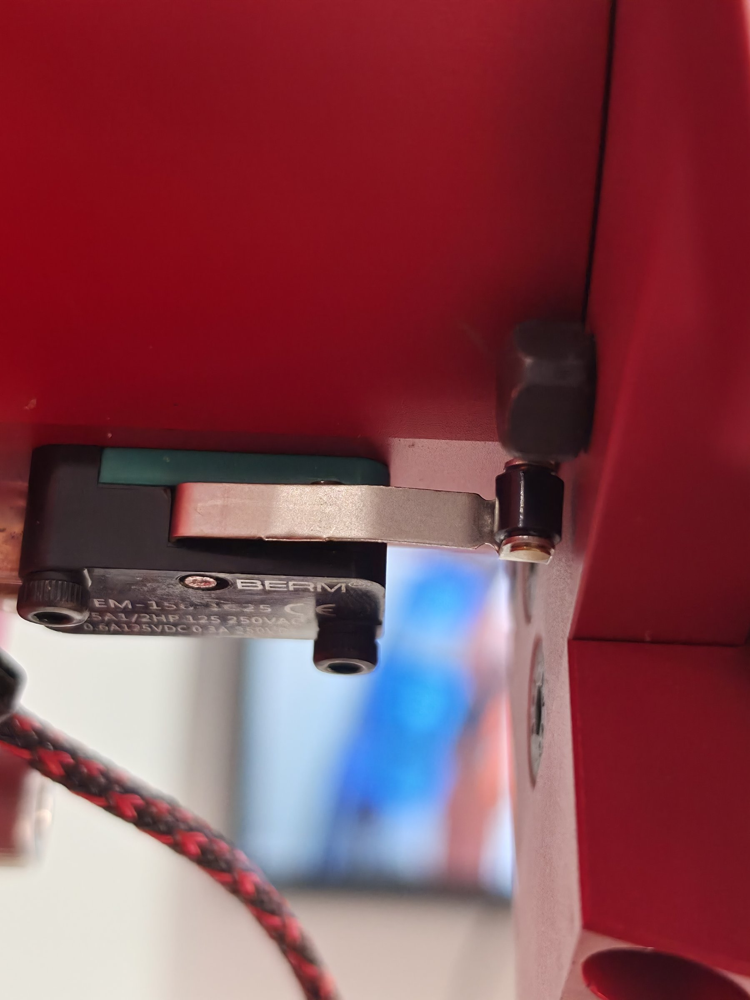
อ่านผลระหว่าง calibrate
ระหว่าง calibrate ระบบรายงานผลทีละข้อ ข้อความที่ควรรู้จักมีดังนี้
| ข้อความ | แปลว่า | ทำอะไรต่อ |
|---|---|---|
✓ J5 เจอสวิตช์แล้ว | ข้อนั้นผ่าน | รอข้อถัดไป |
✗ J5 ... FAIL | หมุนครบระยะแล้วไม่เจอสวิตช์ บอร์ดหยุดข้อนั้นเอง (ไม่หมุนต่อจนชน) และคำสั่งจบพร้อมแจ้ง | มักเป็นมอเตอร์ข้อนั้นหมุนกลับด้าน ตั้ง arm dir แล้ว calibrate ข้อนั้นใหม่ หรือสวิตช์/สายหลุด |
USB หลุดระหว่าง calibrate | เกิดได้ตามปกติตอนมอเตอร์หมุน แขนทำต่อเอง โปรแกรมรอต่อใหม่ให้ | รอ ไม่ต้องทำอะไร |
หมายเหตุ: ข้อ ... ไม่ได้ calibrate รอบนี้ | ลำดับที่สั่งไม่ครบหกข้อ | ถ้าเพิ่งเปิดไฟแขน calibrate ข้อที่เหลือก่อนใช้งาน |
calibrate ครบตามที่สั่งแล้ว | ทุกข้อในลำดับเสร็จแล้ว | รอข้อต่อหมุนไปท่าหลัง calibrate |
→ ข้อ 5 ไป +0.0° (มุมจริง) ... ตามด้วย ข้อ 5 ถึงแล้ว | ข้อนั้นกำลังหมุนไปท่าหลัง calibrate | รอ ถ้าขึ้น ไม่ถึงเป้าใน 30 วินาที ดูว่าติดอะไรไหม |
✗ บอร์ดที่ ... ชื่อ '...' ไม่ใช่แขน ... | บอร์ดที่พอร์ตนั้นไม่ใช่แขนที่สั่ง ระบบจึงไม่ขยับ | arm ports ตอนระบบแขนปิด แล้วเช็กชื่อ |
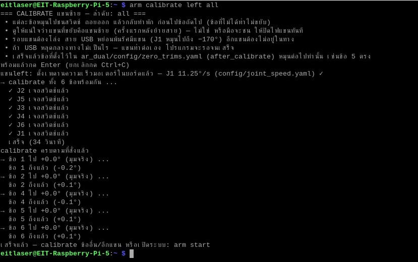
เปิดระบบแขน
ระบบแขนประกอบด้วยหลายโปรแกรมที่ต้องเปิดค้างไว้ระหว่างใช้งาน แต่ละโปรแกรมใช้ Terminal ของตัวเองหนึ่งหน้าต่าง และห้ามปิดหน้าต่างนั้นระหว่างใช้งาน เพราะปิดหน้าต่างก็คือปิดโปรแกรม ส่วนคำสั่งสั้นๆ อย่าง arm status arm teach หรือ arm run พิมพ์ในหน้าต่างอื่นที่ว่างอยู่ได้
| โปรแกรม | คำสั่ง | หน้าที่ | ต้องเปิดเมื่อ |
|---|---|---|---|
| ระบบแขน | arm start | คุยกับ Teensy ทั้งสองบอร์ด รายงานมุมข้อต่อ รับคำสั่งเคลื่อนที่ | ทุกครั้งที่ใช้แขน |
| ตัวเล่นโปรแกรม + ตัวคุมมือ | arm player | เล่นโปรแกรมและท่า ส่งท่าให้มือ | arm run arm goto และรีโมท |
| MoveIt + RViz | arm moveit | จัดท่าแขนบนจอ Pi พร้อมเช็กการชน | ตอนสอนท่า |
| ตัวรับสวิตช์รีโมท | arm remote | ให้สวิตช์บนรีโมทสั่งเล่นหรือหยุดโปรแกรม | ตอนสั่งจากรีโมท |
เช็กสถานะก่อนเริ่ม
arm status
arm status แสดงรายการส่วนต่างๆ ของระบบพร้อมเครื่องหมาย ✓ (เปิดอยู่) หรือ ✗ (ปิด) ได้แก่ ระบบสองแขน ตัวคุมแขนซ้าย ตัวคุมแขนขวา ตัวเล่นโปรแกรม MoveIt สวิตช์รีโมท ตัวคุมมือ และ relay_bridge ถ้าระบบแขนปิดอยู่จะแสดงบอร์ด Teensy ที่เจอด้วย ถ้าระบบแขนเปิดอยู่จะแสดงรายการตัวควบคุม (controller) ของแต่ละแขนต่อท้าย ก่อนเปิดระบบ บรรทัด "ระบบสองแขน" ต้องเป็น ✗ และถ้าบรรทัด "ระบบแขนเดี่ยวแบบเก่า" เป็น ✓ ให้ arm off ก่อน
เปิดระบบสองแขน
arm start
เมื่อสั่ง arm start ระบบจะถามชื่อจากทุกบอร์ดเพื่อหาพอร์ตของแต่ละแขน เช็กค่าชดเชยศูนย์ในบอร์ดเทียบกับไฟล์ (ไม่ตรง = ไม่เปิด) จดพอร์ตไว้ให้ arm recal และ arm reconnect ใช้ภายหลัง แล้วแสดงบรรทัด เปิดระบบแขน (ซ้าย=real @ ... · ขวา=real @ ...) ก่อนเปิดค้างไว้ ปิดด้วย Ctrl+C ในหน้าต่างนี้
arm start ไม่ได้ calibrate ให้ แขนต้อง calibrate ไว้แล้ว ไม่อย่างนั้นตำแหน่งที่ระบบเห็นจะผิด และทุกท่าจะไปผิดที่ถ้าต้องการใช้แขนเดียว สั่ง arm start left ระบบจะใช้แขนซ้ายจริง ส่วนแขนขวาเป็นแบบจำลอง ซึ่งไม่ขยับจริงและไม่ต้องมีบอร์ด ส่วน arm start right ก็กลับกัน
ตัวเล่นโปรแกรม
ตัวเล่นโปรแกรมรับคำสั่งจาก arm run arm goto และรีโมท แล้วพาแขนไปตามท่า โดยเร่งความเร็วขึ้น วิ่งคงที่ แล้วเบรก แขนที่ขยับในขั้นเดียวกันเริ่มพร้อมกันและถึงพร้อมกัน arm player ยังเปิดตัวคุมมือ AmazingHand ของแต่ละแขนให้ด้วย โปรแกรมที่มีท่ามือจึงเล่นได้ครบ
arm player
ตัวเลขที่ใส่ตามหลังคือความเร็วเป็น rad/s ค่าเริ่ม 0.19 (ประมาณ 11° ต่อวินาทีสำหรับข้อที่ต้องไปไกลที่สุด ข้ออื่นย่อตามสัดส่วน) ซึ่งเป็นเพดานด้วย ใส่เกินระบบจะลดลงมาเหลือ 0.19 เอง เพราะบอร์ดจำกัด J1 ไว้เท่าความเร็วตอน calibrate (ดูหัวข้อความเร็วและขอบเขตข้อต่อ) สั่งเร็วกว่านี้มอเตอร์ตามไม่ทันจนโดนยกเลิกกลางทาง ความเร่งตั้งไว้ต่ำ (ประมาณ 4.6°/วินาที²) เพราะสายพาน J1 เคยรูดตอนแขนยื่นไกล
arm player 0.1 # ช้ากว่าปกติ ใช้ลองโปรแกรมใหม่
arm player nohand # ไม่ต่อมือจริง ตัวคุมมือแค่แสดงชื่อท่าที่ได้รับ
ใส่ทั้งความเร็วและ nohand พร้อมกันได้ เช่น arm player 0.15 nohand จะเปลี่ยนความเร็วต้องปิดหน้าต่าง arm player ด้วย Ctrl+C แล้วเปิดใหม่ arm player ไม่ยอมเปิดถ้ามีตัวเล่นเปิดอยู่แล้ว ถ้าเกมเป่ายิ้งฉุบ (arm rps) เปิดอยู่ หรือถ้า arm hand-teach / arm hand-calibrate กำลังใช้พอร์ตมือ (กรณีหลังให้ปิดก่อน หรือเปิดแบบ nohand)
MoveIt และ RViz
MoveIt ใช้จัดท่าแขนบนจอ วิธีใช้ละเอียดอยู่ในบทถัดไป ที่ควรรู้ตอนเปิดคือ ต้องเปิด arm start ไว้ก่อน (ไม่อย่างนั้นขึ้น ✗ เปิดระบบแขนก่อน (arm start)) และหน้าต่าง RViz วาดบนจอของ Pi จึงต้องสั่งจาก Terminal บนเดสก์ท็อป Pi ผ่าน Raspberry Pi Connect (Screen sharing) ไม่ใช่จาก ssh และเดสก์ท็อป Pi ต้องล็อกอินอยู่
arm moveit
รอประมาณ 20–30 วินาที หน้าต่าง RViz จะขึ้นพร้อมโมเดลสองแขน เสา หัว และกล้อง ปิด MoveIt ด้วย Ctrl+C ในหน้าต่างนั้น ระบบแขนและตัวเล่นโปรแกรมยังทำงานต่อ
ลำดับเปิดใช้งานประจำวัน
| หน้าต่าง | คำสั่ง | หมายเหตุ |
|---|---|---|
| ไหนก็ได้ | arm status | ระบบสองแขนต้องเป็น ✗ ก่อนเริ่ม |
| หน้าต่าง 1 | arm calibrate left 6 5 4 1 2 3arm calibrate right 6 5 4 1 2 3 | เฉพาะเมื่อจำเป็น ทีละแขน จบเอง |
| หน้าต่าง 1 | arm start | เปิดค้างไว้ |
| หน้าต่าง 2 | arm player | เปิดค้างไว้ |
| หน้าต่าง 3 (เดสก์ท็อป Pi) | arm moveit | เฉพาะตอนจัดท่า |
| หน้าต่างอื่น | arm run ... arm teach ... | คำสั่งสั้น สั่งแล้วจบ |
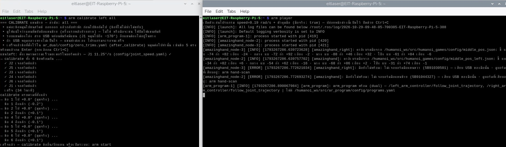
เมื่อแขนข้างเดียวมีปัญหา
ระบบแขนแยกตัวคุมเป็นแขนละโปรเซส (left_controller_manager และ right_controller_manager) จึงปิดและเปิดทีละแขนได้ ถ้าแขนข้างหนึ่งสายพานรูด ชน หรือตัวคุมหลุด คุณไม่ต้อง arm off ทั้งระบบ อีกแขนทำงานต่อได้ระหว่างที่แก้ ปล่อยหน้าต่าง arm start ไว้ตามเดิม แล้วเปิดหน้าต่างใหม่สำหรับคำสั่งในหัวข้อนี้
calibrate แขนเดียวขณะระบบเปิด
arm recal right 6 5 4 1 2 3
arm recal ปิดตัวคุมของแขนขวา (Teensy ยังถือท่าค้างไว้ แขนไม่ตก) calibrate ตามลำดับที่ใส่ เช็กชื่อบอร์ดและค่าชดเชยศูนย์ แล้วเปิดตัวคุมแขนขวาใหม่ค้างไว้ในหน้าต่างนั้น ถ้าเพิ่งรูดข้อเดียว calibrate เฉพาะข้อนั้นได้
arm recal right 1 # calibrate แค่ J1 แล้วเปิดตัวคุมแขนขวาใหม่
ถ้าตั้ง RIGHT_CAL_ORDER ไว้แล้ว สั่ง arm recal right เฉยๆ ได้ ถ้ายังไม่ได้ตั้ง ระบบจะขอให้ใส่ข้อ (เช่น all หรือ 1) และจะเช็กเรื่องนี้ก่อนปิดตัวคุม แขนจึงไม่ค้างปิดเพราะลืมใส่ลำดับ
เปิดตัวคุมแขนเดียวใหม่โดยไม่ calibrate
arm reconnect right
ใช้เมื่อตัวคุมของแขนนั้นหลุดหรือถูกปิดไปแขนเดียว แต่ตำแหน่งยังถูกต้อง คำสั่งนี้ปิดแล้วเปิดตัวคุมแขนขวาใหม่ และใช้เปิดตัวคุมกลับเมื่อ arm recal ถูกยกเลิกกลางทางด้วย
สิ่งที่ต้องรู้ระหว่างกู้แขน
- แขนซ้ายทำงานต่อได้ แขนขวาค้างท่าเดิม ใน RViz แขนขวาจะนิ่งจนกว่าตัวคุมจะเปิดกลับมา
- ถ้าตัวเล่นโปรแกรมเปิดอยู่ โปรแกรมที่สั่งแขนขวาจะล้มจนกว่าแขนจะกลับมา โปรแกรมของแขนซ้ายใช้ได้ปกติ
- J1 ที่ถูก calibrate จะกวาดไปถึง −170° อย่าให้อีกแขนอยู่ในทาง และอย่าเล่นโปรแกรมที่พาอีกแขนเข้ามาใกล้
- ระบบใช้พอร์ตที่
arm startจดไว้ และเช็กชื่อในบอร์ดก่อนขยับ ถ้าชื่อไม่ตรงจะไม่ calibrate - เสร็จแล้วตัวคุมแขนขวาเปิดค้างอยู่ในหน้าต่างนั้น กด Ctrl+C ที่หน้าต่างนั้น = ปิดเฉพาะแขนขวา
- ถ้ากด Ctrl+C ระหว่าง calibrate หรือ calibrate ไม่สำเร็จ ตัวคุมแขนขวายังปิดอยู่ เปิดกลับด้วย
arm reconnect right - ต้องเปิดระบบด้วย
arm startก่อนเสมอ ถ้าขึ้น✗ ระบบแขนยังไม่เปิดให้arm offแล้วarm start arm offปิดทุกหน้าต่างของแขน รวมถึงตัวคุมที่เปิดจากarm recal
จดเหตุการณ์ก่อนกู้แขน
ตั้งแต่ arm start ระบบจดทุกการขยับของแขนไว้เอง ได้แก่ ท่าก่อนหน้า ท่าที่กำลังไป ภาระ J1 ระหว่างทาง ความเร็ว คำสั่งมาจากไหน (โปรแกรม MoveIt หรืออื่นๆ) และผลจากตัวคุม เมื่อแขนรูดหรือชน ให้พิมพ์ทันทีก่อน arm recal
arm broke slipped right arm broke slipped right j1 ดังแก๊กตอนแขนลง
ระบบแสดงการขยับล่าสุดของแขนนั้นห้าครั้งให้เลือกว่าเรื่องเกิดตอนไหน กด Enter คือครั้งล่าสุด แล้วจดเหตุการณ์พร้อมท่าก่อนหน้าและท่าที่ไปลงไฟล์ คำหลัง broke คืออาการ ได้แก่ slipped (รูด) hit (ชน) stuck (ค้าง) dropped (แขนตก) noise (เสียงดังหรือสั่น) และ other ใส่แขน ข้อ (j1 ถึง j6) และข้อความเพิ่มได้
arm broke list # ดูที่จดไว้ arm broke report # สรุปท่า/ทางที่เกิดเรื่อง ภาระ J1 ตอนนั้น และคำแนะนำ
arm broke report แยกว่าภาระสูงสุดเกิดที่ปลายทาง ต้นทาง หรือระหว่างทาง แล้วแนะนำต่างกัน เช่น สอนท่าปลายทางใหม่ หรือแทรกท่าพับแขนระหว่างทาง ไฟล์ทั้งหมดอยู่บน Pi ที่ ~/Humanoi/ros2_ws/arm_logs/ คัดลอกไปวิเคราะห์ต่อได้ ตำแหน่งที่จดเป็นตัวเลขที่บอร์ดนับ มอเตอร์ไม่มี encoder ตอนรูดตัวเลขจึงยังเป็นท่าที่สั่ง ไม่ใช่ท่าที่แขนอยู่จริง จึงต้อง calibrate ข้อนั้นใหม่ทุกครั้งหลังรูด
arm calibrate ตอนระบบแขนเปิดอยู่ ระบบจะปฏิเสธและแนะนำให้ใช้ arm recal แทน เพราะ arm calibrate ต้องการให้ตัวคุมของแขนนั้นปิดอยู่ปิดระบบแขน
arm off ปิดทุกอย่างที่เกี่ยวกับแขน ได้แก่ ระบบแขน ตัวเล่นโปรแกรม MoveIt ตัวรับสวิตช์รีโมท การ calibrate ที่ค้างอยู่ และเกม แต่แขนยังค้างที่ท่าปัจจุบันตราบที่ไฟแขนยังเปิด จึงควรพาแขนกลับท่าพักก่อนปิด
- พาแขนกลับท่าพัก
arm goto left restและarm goto right restหรือสร้างโปรแกรมไว้ครั้งเดียวarm program park rest/restแล้วสั่งarm run park - สั่ง
arm off(หรือกด Ctrl+C ทีละหน้าต่าง) ระบบแสดงarm statusให้ดูว่าปิดครบ - ประคองแขนไว้ แล้วปิดสวิตช์ไฟแขน เพราะ J1 จะร่วงเมื่อไฟดับ
ปิดไฟแขนแล้ว ครั้งถัดไปที่เปิดต้อง calibrate ใหม่ทุกครั้ง
ความเร็วและขอบเขตข้อต่อ
ค่าต่อไปนี้ตั้งไว้ในระบบแล้ว ผู้ใช้ทั่วไปไม่ต้องแก้ แต่ควรรู้เพื่อเข้าใจว่าแขนจะเคลื่อนที่แบบไหน
| รายการ | ค่า | หมายเหตุ |
|---|---|---|
| ความเร็วตัวเล่นโปรแกรม | 0.19 rad/s (≈11°/วินาที) | ค่าเริ่มของ arm player เป็นความเร็วของข้อที่ต้องไปไกลที่สุด |
| เพดานความเร็ว | 0.19 rad/s | สั่งเกินระบบลดให้เอง เร็วกว่านี้มอเตอร์ตามไม่ทัน (path tolerance violation) |
| เพดาน J1 ในบอร์ด | 11.25°/วินาที | เท่าตอน calibrate วิ่งหาสวิตช์ (ไม่เคยรูด) ตั้งจาก ar_dual/config/joint_speed.yaml ทุกครั้งที่ arm start / arm calibrate ข้ออื่น 30°/วินาที ตามเฟิร์มแวร์ |
| เร่งและเบรก | ≈4.6°/วินาที² | ตั้งต่ำเพราะสายพาน J1 เคยรูด |
| สองแขนในขั้นเดียวกัน | ถึงพร้อมกัน | แขนที่ไปใกล้กว่าวิ่งช้าลงให้ใช้เวลาเท่ากัน |
| Velocity Scaling ใน MoveIt | 1.0 | เพดานจริงอยู่ใน ar_dual/config/joint_limits.yaml (J1 0.19 rad/s ข้ออื่น 9°/วินาที) ปรับสเกลลงได้ ขึ้นเกิน 1.0 ไม่ได้ |
| การเช็กการชน | เฉพาะตอน Plan ใน MoveIt | arm run และ arm goto ไม่เช็ก |
ขอบเขตข้อต่อ
ตัวเล่นโปรแกรมตรวจทุกท่าในโปรแกรมก่อนเริ่มขยับ ถ้ามีท่าใดเกินขอบเขตแม้เพียงขั้นเดียวจะไม่ขยับเลย และ arm teach ก็ไม่ยอมบันทึกท่าที่เกินขอบเขต ขอบเขตพื้นฐานมาจากค่าของผู้ขายแขน
| ข้อ | J1 | J2 | J3 | J4 | J5 | J6 |
|---|---|---|---|---|---|---|
| ขอบเขตพื้นฐาน (องศา) | −170 ถึง +170 | −42 ถึง +90 | −89 ถึง +52 | −165 ถึง +165 | −105 ถึง +105 | −155 ถึง +155 |
ตัวเลขที่ใช้จริงของแต่ละแขนเลื่อนไปตามค่าชดเชยศูนย์ของแขนนั้น ช่วงที่หมุนได้จริงยังกว้างเท่าเดิม แค่ตัวเลขที่ใช้เรียกเลื่อนไป ด้วยค่าใน ar_dual/config/zero_trims.yaml ตอนนี้ (วัดเมื่อ 26 ต.ค. 2026) ขอบเขตของแต่ละแขนเป็นดังนี้ ถ้าแก้ค่าชดเชยในไฟล์นั้น ตัวเลขในตารางนี้จะเลื่อนตามค่าที่แก้
| แขน | J1 | J2 | J3 | J4 | J5 | J6 |
|---|---|---|---|---|---|---|
| ซ้าย (องศา) | −177 ถึง +163 | −44 ถึง +88 | −89 ถึง +52 | −172 ถึง +158 | −86 ถึง +124 | −140 ถึง +170 |
| ขวา (องศา) | −176 ถึง +164 | −54 ถึง +78 | −89 ถึง +52 | −168 ถึง +162 | −119 ถึง +91 | −140 ถึง +170 |
ใช้บน PC และแขนจำลอง
คำสั่ง arm ชุดเดียวกันใช้บน PC ได้ ทั้งกับแขนจริงที่เสียบ USB เข้า PC และกับแขนจำลองที่ไม่ต้องมี Pi หรือแขนเลย เหมาะกับการลองเขียนโปรแกรมหรือจัดท่าก่อนไปใช้กับหุ่นจริง บน PC ต้องพิมพ์ในหน้าต่าง WSL (Ubuntu-24.04) ไม่ใช่ PowerShell เปิดได้จาก Windows Terminal → Ubuntu-24.04 หรือพิมพ์ wsl -d Ubuntu-24.04 ใน PowerShell คำสั่ง arm บน PC คือสคริปต์ Humanoi/scripts/arm_pc.sh (ตั้ง alias ไว้ใน ~/.bashrc ของ WSL แล้ว)
arm start sim # แขนจำลองทั้งสองแขน ไม่ต้องเสียบบอร์ด
สิ่งที่ต่างจากบน Pi มีดังนี้
| เรื่อง | บน PC |
|---|---|
| พอร์ตบอร์ด | เป็นพอร์ต COM ของ Windows เช่น COM9 arm ports แสดงเป็น COM ตั้งชื่อด้วย arm name COM9 left หรือ arm identify บังคับพอร์ตเองได้ด้วย LEFT_TEENSY=COM9 arm start left |
arm start | เปิดสะพาน serial ให้เอง (Windows เปิด COM → TCP → WSL เห็นเป็น /tmp/ttyV_left และ /tmp/ttyV_right หน่วงประมาณ 1.3 ms ต่อรอบ) ปิดด้วย Ctrl+C แล้วสะพานปิดตาม ถ้าหน้าต่างค้างหรือถูกปิดทิ้ง สั่ง arm off |
arm start sim | แขนจำลองทั้งคู่ ใช้แทน run_dual_sim.bat ได้ |
arm moveit | RViz เปิดมาเป็นหน้าเปล่า (ตั้งใจ เพราะโหลด config ตอนเปิดบน WSLg แล้วเมาส์คลิกไม่ได้) ให้เลือก File > Open Config แล้วเปิด /mnt/c/Users/User/Desktop/ar4/ar4_ws/install/ar_dual/share/ar_dual/config/dual_moveit.rviz ถ้า RViz ย่อแล้วเปิดไม่ขึ้น หรือขึ้น [WARN:COPY MODE] ให้ปิดทุกหน้าต่าง WSL แล้วสั่ง wsl --shutdown ใน PowerShell |
arm remote | ไม่มี เพราะรีโมทต่อกับ Mega บน Pi |
| ลำดับ calibrate | ใช้ LEFT_CAL_ORDER / RIGHT_CAL_ORDER ตัวเดียวกับ Pi (ใน scripts/arm.sh) |
| ไฟล์ท่าและโปรแกรม | เป็นคนละไฟล์กับบน Pi ดูหัวข้อ "ไฟล์ที่เก็บท่าและโปรแกรม" ในบทถัดไป |
ซิมแบบเดิมที่ไม่ใช้คำสั่ง arm ยังใช้ได้ ดับเบิลคลิก C:\Users\User\Desktop\ar4\run_dual_sim.bat จะเปิดสามหน้าต่างให้ คือแขนจำลอง MoveIt + RViz และตัวเล่นโปรแกรม
สอนท่าและสร้างโปรแกรม
แขน AR4 ของ Humanoi ไม่ได้คิดท่าเอง ทุกการเคลื่อนไหวมาจากท่าที่คนสอนไว้ล่วงหน้า บทนี้อธิบายวิธีจัดแขนให้อยู่ในท่าที่ต้องการ บันทึกเป็น "ท่า" นำท่ามาเรียงต่อกันเป็น "โปรแกรม" แล้วสั่งเล่น ทั้งจาก Terminal และจากสวิตช์บนรีโมท FlySky ก่อนอ่านบทนี้ควรเปิดระบบแขนเป็นแล้วตามบท แขนกล AR4
ท่ากับโปรแกรม
ท่า (pose) คือมุมของข้อต่อ J1 ถึง J6 ของแขนข้างหนึ่ง บันทึกไว้ภายใต้ชื่อ เช่น rest หรือ pick_above ท่าเก็บแยกตามแขน ชื่อเดียวกันจึงใช้ได้ทั้งสองแขนโดยเป็นคนละท่า rest ของแขนซ้ายกับ rest ของแขนขวามีมุมของใครของมัน
โปรแกรม คือรายการขั้นที่เรียงตามลำดับ แต่ละขั้นบอกว่าแขนซ้ายไปท่าไหน แขนขวาไปท่าไหน มือทำท่าอะไร หรือให้รอกี่วินาที โปรแกรมอ้างถึงท่าด้วยชื่อ ดังนั้นเมื่อแก้ท่า ทุกโปรแกรมที่ใช้ท่านั้นได้ค่าใหม่ทันที
งานสอนแขนหนึ่งรอบมักเป็นแบบนี้ จัดแขนใน MoveIt → บันทึกท่าด้วย arm teach → ทำซ้ำจนได้ทุกท่า → เขียนโปรแกรมด้วย arm program → ลองเล่นช้าๆ ด้วย arm run → กลับไปแก้ท่าที่ยังไม่ดี
ตั้งชื่อท่าและโปรแกรมเป็นภาษาอังกฤษหรือตัวเลข ชื่อโปรแกรมห้ามขึ้นต้นด้วย @ เพราะสงวนไว้ให้ระบบใช้ตอนสั่ง arm goto
สิ่งที่ต้องเปิดไว้
คำสั่งในบทนี้ต้องการส่วนต่างๆ ของระบบไม่เท่ากัน คำสั่งที่แค่แก้ไฟล์ไม่ต้องเปิดระบบแขน แต่คำสั่งที่อ่านหรือขยับแขนจริงต้องเปิด
| งาน | ต้องเปิดอยู่ |
|---|---|
| จัดท่าใน MoveIt | arm start + arm moveit (บนเดสก์ท็อป Pi) |
บันทึกท่า arm teach | arm start (อ่านมุมปัจจุบันจากระบบแขน) |
arm program arm show arm list arm delete arm delete-program | ไม่ต้องเปิดระบบแขน (แก้และอ่านไฟล์อย่างเดียว) |
เล่น arm run และ arm goto | arm start + arm player |
สั่งจากรีโมท arm remote | arm start + arm player + Mega เสียบที่ Pi + รีโมทเปิดอยู่ |
จัดท่าด้วย MoveIt
MoveIt เป็นตัววางแผนการเคลื่อนที่ มีหน้าจอ RViz แสดงโมเดลสองแขน เสา หัว และกล้อง คุณเลื่อนมุมข้อต่อบนจอได้ก่อน MoveIt จะวางเส้นทางพร้อมเช็กการชนทั้งแขนกับแขน และแขนกับเสา หัว หรือกล้อง ถ้าผ่านจึงสั่งแขนจริงขยับ ช่วงจัดท่าใน MoveIt เป็นช่วงเดียวที่มีการเช็กการชน
เปิด MoveIt
- เปิดระบบแขน
arm startในหน้าต่าง 1 และตัวเล่นโปรแกรมarm playerในหน้าต่าง 2 - เปิด Raspberry Pi Connect → Screen sharing ให้เห็นเดสก์ท็อป Pi
- บนเดสก์ท็อป Pi กดไอคอน Terminal (รูปจอดำ
>_ที่แถบบนซ้าย) - พิมพ์
arm moveitแล้วกด Enter รอ 20–30 วินาที หน้าต่าง RViz จะขึ้น - ปล่อย Terminal นี้เปิดไว้ ปิด MoveIt เมื่อไม่ใช้ด้วย Ctrl+C ในหน้าต่างนี้
ถ้าขึ้น ✗ เปิดระบบแขนก่อน แปลว่ายังไม่ได้ arm start ถ้า RViz ไม่ขึ้น แปลว่าเดสก์ท็อป Pi ยังไม่ได้ล็อกอิน ต้องเห็นหน้าจอใน Pi Connect ก่อนแล้วสั่ง arm moveit ใหม่
จัดท่า
- ที่แผง MotionPlanning ช่อง Planning Group เลือก
left_armright_armหรือboth_arms - แท็บ Joints เลื่อนมุมทีละข้อ หรือลากลูกบอลที่ปลายแขน แขนสีส้มโปร่งจะขยับให้ดูก่อน แขนจริงยังไม่ขยับ
- แท็บ Planning ตรวจว่า Velocity Scaling เป็น 1.0 (ตั้งไว้แล้ว เพดานความเร็วจริงอยู่ในไฟล์ตั้งค่า แขนไม่วิ่งเกินนั้น)
- กด Plan & Execute แขนจริงจะขยับไปท่านั้น ถ้าท่าหรือเส้นทางชน การ Plan จะไม่ผ่านและแขนไม่ขยับ
- ถ้าต้องหยุดกลางทาง กดปุ่ม Stop ในแผง Planning ถ้าฉุกเฉินจริงปิดสวิตช์ไฟแขน
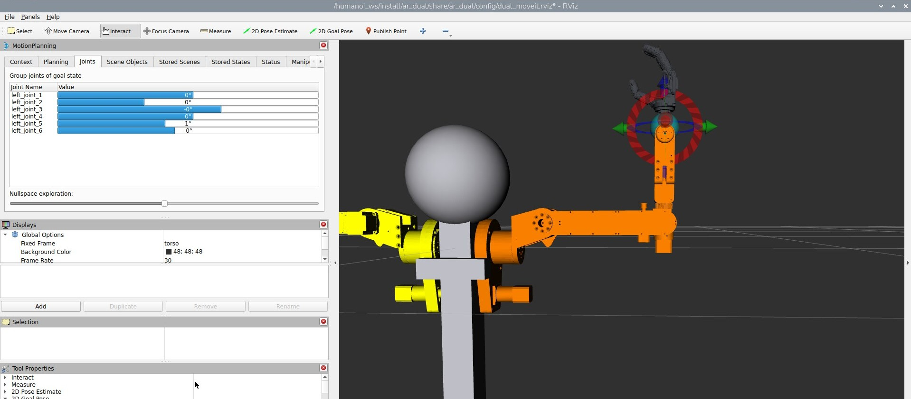
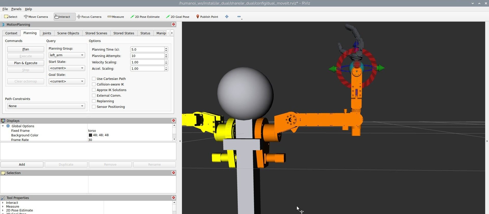
บันทึกท่า
เมื่อแขนจริงไปถึงท่าที่ต้องการแล้ว เปิด Terminal อีกหน้าต่างแล้วสั่งบันทึก ระบุแขนและชื่อท่า
arm teach left pick_above
ระบบอ่านมุมปัจจุบันของแขนซ้ายทั้งหกข้อ บันทึกเป็นท่า pick_above ของแขนซ้าย แล้วแสดงมุมเป็นองศาให้ดู ถ้าแขนนั้นมีท่าชื่อนี้อยู่แล้ว ท่าใหม่จะทับของเดิม และระบบแสดงทั้งค่าเดิมและค่าใหม่ให้เทียบ
สิ่งที่ควรรู้เกี่ยวกับ arm teach
- ระบบบันทึกท่าที่แขนจริงอยู่ ไม่ใช่ท่าสีส้มใน RViz จึงต้องกด Plan & Execute ให้แขนจริงถึงก่อน
- ต้องเปิด
arm startอยู่ ไม่อย่างนั้นจะขึ้นว่าไม่ได้รับ/joint_statesและถามว่าระบบแขนเปิดอยู่ไหม - ท่าที่มีข้อใดเกินขอบเขตข้อต่อจะไม่ถูกบันทึก ระบบขึ้น
ไม่บันทึก: ...พร้อมบอกข้อที่เกิน - ควรมีท่า
restของทั้งสองแขนไว้เสมอ ใช้เป็นขั้นแรกของโปรแกรมและเป็นท่าก่อนปิดระบบ - หลัง teach ไม่ต้องรีสตาร์ทอะไร ตัวเล่นโปรแกรมอ่านไฟล์ใหม่ทุกครั้งที่สั่งเล่น
- ทุกครั้งที่บันทึก ระบบบอกภาระน้ำหนักที่ J1 เทียบกับตอน calibrate (ดูหัวข้อถัดไป) เกิน 100% จะขึ้นเครื่องหมาย ⚠ พร้อมคำแนะนำ ท่ายังถูกบันทึกตามปกติ
ภาระน้ำหนักที่ J1
แขนติดด้านข้างลำตัว แกน J1 จึงนอนขนานพื้น J1 ต้องยกน้ำหนักทั้งแขนรวมมือเหมือนยกตุ้ม แขนยิ่งยื่นห่างแกน J1 ยิ่งหนัก ตอน calibrate ข้ออื่นอยู่ท่าพัก แขนชี้ออกด้านข้างเกือบตามแนวแกน J1 J1 หมุนผ่านแนวนอนได้โดยไม่เคยรูด ระบบจึงใช้ภาระสูงสุดตอนนั้นเป็น 100% ท่าที่เกิน 100% หมายถึงหนักกว่าสิ่งที่พิสูจน์แล้วว่าไม่รูด เช่น move_readyP2 ของแขนขวาที่เคยรูดได้ 126%
arm j1-load right
คำสั่งนี้แสดงทุกท่าของแขนขวาเรียงจากหนักไปเบา สองคอลัมน์ ค้างท่า คือภาระตอนแขนอยู่ท่านั้น หมุน J1 คือภาระสูงสุดถ้า J1 หมุนทั้งช่วงโดยแขนคงรูปร่างนั้น ท่าที่เกิน 100% ให้สอนใหม่โดยหุบแขนเข้าหาแกน J1 (ลด J2 หรืองอ J3 เข้าหาตัว) ถ้าต้องหมุน J1 ไกล ให้พับแขนก่อนแล้วค่อยหมุน มวลมาจากโมเดล (ค่าของ AR3 รวมมือ) ซึ่งไม่ตรงน้ำหนักจริง ตัวเลขจึงใช้เทียบกันเป็นเปอร์เซ็นต์เท่านั้น
เขียนโปรแกรม
รูปแบบของแต่ละขั้น
คำสั่ง arm program ตามด้วยชื่อโปรแกรม แล้วตามด้วยขั้นทั้งหมดคั่นด้วยช่องว่าง แต่ละขั้นเขียนเป็น <ท่าแขนซ้าย>/<ท่าแขนขวา>[/<ท่ามือซ้าย>[/<ท่ามือขวา>]] สองช่องแรกต้องมีเสมอ ส่วนช่องมือจะใส่หรือไม่ก็ได้ ช่องไหนไม่ต้องการให้ขยับใส่ - (หรือ still) ถ้าต้องการให้รอ ใช้ขั้น wait=วินาที
| เขียน | ความหมาย |
|---|---|
act1/act2 | แขนซ้ายไป act1 แขนขวาไป act2 เริ่มพร้อมกันและถึงพร้อมกัน |
act1/- | แขนซ้ายไป act1 แขนขวาอยู่นิ่ง |
-/act3 | แขนซ้ายอยู่นิ่ง แขนขวาไป act3 |
act1/-/rock | แขนซ้ายไป act1 พร้อมกับมือซ้ายกำ |
-/-/-/paper | แขนไม่ขยับ มือขวาแบ |
wait=1.0 | หยุดรอ 1 วินาที ทั้งสองแขน (ใส่ได้ 0 ถึง 600 วินาที) |
ตัวอย่าง โปรแกรม pick2 ที่เริ่มจากท่าพัก ให้สองแขนไปท่า act1 พร้อมกัน แขนซ้ายไปต่อที่ act2 รอหนึ่งวินาที แล้วกลับท่าพักทั้งคู่
arm program pick2 rest/rest act1/act1 act2/- wait=1.0 rest/rest
ระบบตรวจโปรแกรมก่อนบันทึก ถ้าโปรแกรมอ้างถึงท่าที่ยังไม่ได้สอนให้แขนนั้น หรือมีท่าเกินขอบเขต จะขึ้น บันทึกไม่ได้: ... และไม่บันทึก จึงต้อง teach ท่าให้ครบก่อนเขียนโปรแกรม เมื่อบันทึกสำเร็จระบบแสดงโปรแกรมเป็นตารางให้ดูทันที
โปรแกรม 'pick2' (5 ขั้น)
ขั้น แขนซ้าย (1) แขนขวา (2)
1 rest rest
2 act1 act1
3 act2 still
4 wait 1 s
5 rest rest
กติกาการเล่น
- ในแต่ละขั้น แขนที่มีท่าเริ่มพร้อมกันและถึงพร้อมกัน แขนที่ไปใกล้กว่าจะวิ่งช้าลง
- ขั้นถัดไปเริ่มเมื่อทุกแขนถึงแล้ว และมือทำท่าครบเวลาแล้ว
-ไม่ได้จำตำแหน่งไว้ แขนค้างอยู่ตรงที่ขั้นก่อนหน้าพาไป ไม่ได้วิ่งกลับไปไหน ในตัวอย่างข้างบน ขั้นที่ 3 แขนขวาจึงค้างอยู่ที่act1- ขั้นแรกของโปรแกรมควรเป็นท่าที่รู้ตำแหน่งแน่นอนของทั้งสองแขน เช่น
rest/rest - ขั้นที่ทุกแขนและทุกมือเป็น
-ใช้ไม่ได้ ถ้าจะรอให้ใช้wait= - ก่อนเริ่มเล่น ระบบตรวจทั้งโปรแกรม ถ้ามีท่าที่หาไม่เจอหรือเกินขอบเขตแม้ขั้นเดียว แขนจะไม่ขยับเลย ดีกว่าวิ่งไปครึ่งทางแล้วค่อยพัง
- โปรแกรมแบบเก่าที่มีแต่ชื่อท่าไม่มี
/(เช่นdemo) คือโปรแกรมของแขนซ้ายอย่างเดียว ยังเล่นได้
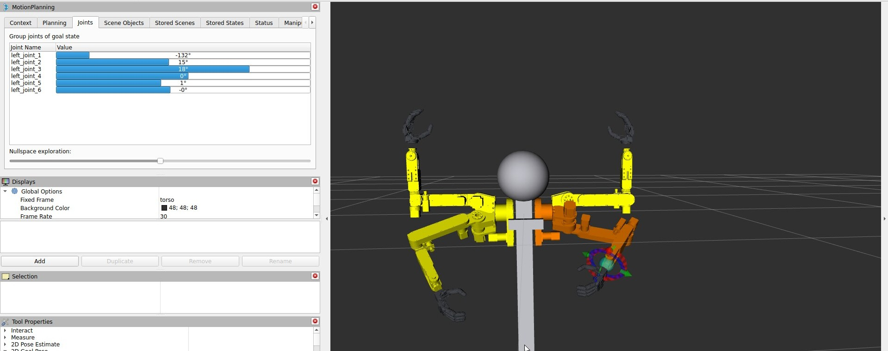
ใส่ท่ามือในโปรแกรม
ช่องที่สามและสี่ของแต่ละขั้นคือท่าของมือ AmazingHand บนแขนซ้ายและแขนขวา ไม่ใส่หรือใส่ - แปลว่ามือไม่ขยับ ท่ามือถูกส่งตอนเริ่มขั้น มือจึงขยับพร้อมกับแขน ขั้นจบเมื่อแขนถึงและมือทำท่าครบเวลา ถ้าอยากให้แขนไปถึงก่อนแล้วมือค่อยกำ ต้องแยกเป็นสองขั้น
arm program grab act1/- -/-/rock act2/-/paper
โปรแกรมนี้พาแขนซ้ายไป act1 พอถึงแล้วมือซ้ายจึงกำ จากนั้นแขนซ้ายไป act2 พร้อมกับมือซ้ายแบ ท่ามือในตัวที่ใช้ได้มีดังนี้
| ท่ามือ | มือทำอะไร | ขั้นรอมือ (วินาที) |
|---|---|---|
rock | กำสุด (ค้อน) | 0.6 |
paper | แบสุด (กระดาษ) | 0.6 |
scissors | ชูนิ้วชี้กับนิ้วกลางเป็นรูปตัว V (กรรไกร) | 0.6 |
point | ชี้นิ้วชี้ | 0.6 |
like | ชูนิ้วโป้ง | 0.6 |
windup | กำครึ่งทาง ท่าง้างตอน "เป่า-ยิ้ง" | 0.6 |
fist | กำสุด เหมือน rock ทุกอย่าง | 0.6 |
victory | ชูสองนิ้วแล้วขยับแบบกรรไกร (ท่าเคลื่อนไหว) | 1.8 |
nonono | ชี้นิ้วแล้วส่ายไปมา "ไม่ ไม่" (ท่าเคลื่อนไหว) | 1.8 |
relax | ปลดแรงบิด นิ้วอ่อน | 0.3 |
นอกจากท่าในตัว ท่ามือที่สอนเองด้วย arm hand-teach ใช้ในโปรแกรมได้ด้วยชื่อที่ตั้งไว้ ถ้าตั้งชื่อซ้ำกับท่าในตัว ท่าที่สอนเองจะถูกใช้แทน วิธีสอนท่ามืออยู่ในบท มือ AmazingHand มือขยับจริงเมื่อ arm player เปิดแบบปกติเท่านั้น ถ้าเปิดด้วย nohand ตัวคุมมือแค่แสดงชื่อท่าที่ได้รับ
arm hand rock (มือซ้าย) หรือ arm hand rock right (มือขวา) ขณะที่ arm player เปิดอยู่ดูและลบท่าและโปรแกรม
ดูโปรแกรมหนึ่งโปรแกรมเป็นตาราง ขั้น | แขนซ้าย | แขนขวา ถ้าโปรแกรมมีท่ามือ จะมีคอลัมน์มือซ้ายและมือขวาเพิ่มให้
arm show pick2
ดูทุกอย่างที่มีในไฟล์ คือชื่อไฟล์ ท่าของแขนซ้ายและแขนขวาพร้อมมุมเป็นองศา (J1 ถึง J6) ท่ามือที่สอนเอง และรายชื่อโปรแกรมทั้งหมดแบบย่อบรรทัดเดียว เช่น rest/rest → act1/act1 → ...
arm list
ลบท่าของแขนหนึ่ง ระบบจะไม่ยอมลบถ้ายังมีโปรแกรมใช้ท่านั้นอยู่ และบอกว่าโปรแกรมไหนใช้ ให้แก้หรือลบโปรแกรมนั้นก่อน
arm delete left pick_above
ลบโปรแกรม ท่าที่อยู่ในโปรแกรมยังอยู่ครบ
arm delete-program pick2
ถ้าต้องการแก้ลำดับในโปรแกรม ไม่ต้องลบก่อน สั่ง arm program ด้วยชื่อเดิมพร้อมขั้นใหม่ทั้งหมด ระบบจะเขียนทับให้
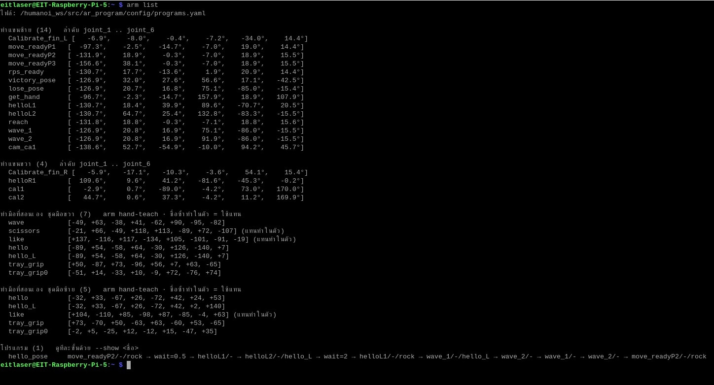
เล่นโปรแกรม
คำสั่งเล่นทั้งหมดส่งงานให้ตัวเล่นโปรแกรม จึงต้องเปิด arm player ไว้ก่อน ถ้าไม่ได้เปิด ระบบจะขึ้น ✗ ตัวเล่นโปรแกรมยังไม่เปิด — เปิดอีกหน้าต่างแล้วสั่ง: arm player
เล่นทั้งโปรแกรม
arm run pick2
arm run ส่งชื่อโปรแกรมให้ตัวเล่น แล้วรอจนจบเพื่อบอกผลเป็นบรรทัดเดียว
| ผลที่เห็น | แปลว่า |
|---|---|
✓ pick2:ok | เล่นจบครบทุกขั้น |
✗ pick2:error:... | ล้ม เช่นไม่มีท่า ท่าเกินขอบเขต หรือตัวคุมแขนไม่รับคำสั่ง อ่านเหตุผลท้ายบรรทัด |
✗ pick2:stopped | ถูกหยุดกลางคันด้วย arm stop หรือสวิตช์ SWD |
✗ pick2:rejected:busy | มีโปรแกรมเล่นอยู่แล้ว ระบบไม่เล่นซ้อน |
? ไม่ได้รับผลภายใน 10 นาที | ไม่มีผลกลับมา ดูข้อความในหน้าต่าง arm player |
พาแขนเดียวไปท่าเดียว
arm goto right pick_above
arm goto ใช้ตอนแก้ท่า หรือพาแขนกลับท่าพักก่อนปิดระบบ ผลแสดงแบบเดียวกับ arm run
หยุดกลางคัน
arm stop
arm stop ยกเลิกโปรแกรมที่กำลังเล่น ทุกแขนหยุดที่ตำแหน่งปัจจุบัน นี่เป็นการหยุดทางซอฟต์แวร์ ถ้าฉุกเฉินจริงให้ปิดสวิตช์ไฟแขน
arm run และ arm goto ไม่เช็กการชน รวมถึงสองแขนชนกันเองและแขนชนเสา แขนเดินตรงจากท่าหนึ่งไปอีกท่า ไม่ได้เดินตามเส้นทางที่ MoveIt วางไว้ตอนจัดท่า โปรแกรมใหม่ให้ลองด้วยความเร็วต่ำก่อนเสมอ ปิดหน้าต่าง arm player แล้วเปิดใหม่ด้วยความเร็วต่ำ เช่น arm player 0.1 ดูทุกขั้นให้ดี ถ้าแขนเฉียดอะไร ให้เพิ่มท่าคั่นกลาง เช่นยกแขนขึ้นก่อนหมุนฐานแก้ท่าเดิม
ท่าที่สอนไว้มักต้องปรับอีกเล็กน้อยหลังลองเล่นจริง วิธีที่ใช้คือพาแขนไปท่าเดิม ปรับใน MoveIt แล้วบันทึกทับด้วยชื่อเดิม ทุกโปรแกรมที่ใช้ท่านั้นจะได้ค่าใหม่ทันที
- พาแขนไปท่าที่จะแก้
arm goto left act1 - ใน MoveIt เลือก Planning Group ของแขนนั้น ปรับในแท็บ Joints แล้วกด Plan & Execute
- บันทึกทับด้วยชื่อเดิม
arm teach left act1ระบบแสดงค่าเดิมและค่าใหม่ให้เทียบ - ลองเล่นโปรแกรมที่ใช้ท่านั้นอีกครั้ง
arm run pick2

งานแก้อื่นๆ ทำได้ตามตารางนี้
| อยากทำ | ทำอย่างไร |
|---|---|
| แก้ลำดับในโปรแกรม | สั่ง arm program <ชื่อเดิม> <ขั้นใหม่ทั้งหมด...> ทับได้เลย |
| ลบท่าที่โปรแกรมยังใช้อยู่ | ระบบไม่ยอมและบอกว่าโปรแกรมไหนใช้ แก้หรือลบโปรแกรมนั้นก่อน แล้วค่อย arm delete |
| เปลี่ยนชื่อท่า | arm goto <แขน> <ชื่อเก่า> → arm teach <แขน> <ชื่อใหม่> → แก้โปรแกรมให้ใช้ชื่อใหม่ → arm delete <แขน> <ชื่อเก่า> |
| เขียนท่าให้แขนอีกข้าง | ท่าแยกตามแขน ต้องจัดและ arm teach ให้แขนนั้นเอง ถ้าโปรแกรมเรียกท่าที่แขนนั้นยังไม่มี จะขึ้น แขนขวาไม่มีท่า '...' |
สั่งเล่นจากรีโมท FlySky
ในงานจัดแสดง การยืนพิมพ์คำสั่งที่ Terminal ไม่สะดวก arm remote ทำให้สวิตช์บนรีโมท FlySky ที่ใช้ขับฐานอยู่แล้ว สั่งแขนเล่นโปรแกรมหรือหยุดแขนได้ สวิตช์ส่งค่าผ่านบอร์ด Arduino Mega ของฐานมาที่ Pi
| สวิตช์ | ทำอะไร |
|---|---|
| SWB (ช่อง CH6) โยก ขึ้น → ลง | เล่นโปรแกรมหนึ่งครั้ง ค่าเริ่มคือโปรแกรมชื่อ 1 |
| SWD (ช่อง CH8) โยก ขึ้น → ลง | หยุดแขนทันที (ทุกแขน) และระหว่างที่ SWD ลงค้างอยู่ SWB สั่งเล่นไม่ได้ |
| SWA | ARM ล้อฐาน ไม่เกี่ยวกับแขน รีโมทยังขับฐานได้ตามปกติ |
ต้องเช็ก: arm help และโค้ดเรียกสวิตช์เล่นโปรแกรมว่า SWB (ช่อง CH6) แต่ AR4_ARM_COMMANDS.md บอกว่าตอนนี้ CH6 บนรีโมทตั้งเป็น SWC (สวิตช์ 3 ระดับ: บนสุด → ล่างสุด = เล่น ตำแหน่งกลางไม่นับ) — ยืนยันว่าบนรีโมทจริงต้องโยกสวิตช์ตัวไหน แล้วแก้ชื่อในตารางและรูปให้ตรง
เปิดใช้งาน
- เช็กว่า Mega เสียบ USB ที่ Pi อยู่ ถ้าต้องเสียบ ปิดไฟแขนก่อน
- เปิดรีโมท
- เปิด
arm startและarm playerไว้ตามปกติ - เปิดอีกหน้าต่างแล้วสั่ง
arm remote(เล่นโปรแกรม1) หรือใส่ชื่อโปรแกรมที่ต้องการ แล้วปล่อยหน้าต่างนี้เปิดค้างไว้ - ยกสวิตช์ขึ้นก่อนหนึ่งครั้ง แล้วโยกลงเมื่อต้องการให้เล่น
arm remote pick2 # SWB โยกลง = เล่นโปรแกรม pick2
หน้าต่าง arm remote แสดงทุกครั้งที่โยกสวิตช์ เช่น สวิตช์ SWB=U SWD=U (U = ขึ้น, D = ลง) บอกว่าสั่งอะไรออกไป เช่น SWB โยกลง -> เล่นโปรแกรม '1' และแสดงผลที่แขนรายงานกลับมา เช่น แขนรายงาน: 1:ok ถ้ายังไม่ได้เปิด arm player ก็ยังเปิด arm remote เพื่อทดสอบสวิตช์ได้ จะเห็นผลบนจอแต่แขนไม่ขยับ
ระบบกันสั่งมั่ว
- สั่งเฉพาะจังหวะโยก ขึ้น → ลง สวิตช์ที่ลงค้างไว้ไม่สั่งซ้ำ จะเล่นอีกรอบต้องยกขึ้นแล้วโยกลงใหม่
- เปิด
arm remoteตอนสวิตช์อยู่ล่าง = ไม่สั่ง ระบบต้องเห็นสวิตช์อยู่บนก่อน - รีโมทดับหรือหลุดสัญญาณ = ไม่สั่ง และหลังสัญญาณกลับมาต้องยกสวิตช์ขึ้นก่อน
- แขนกำลังเล่นโปรแกรมอยู่แล้วโยกอีก = ถูกปฏิเสธ (
rejected:busy) ไม่เล่นซ้อน - ถ้าโยก SWB และ SWD ในจังหวะเดียวกัน การหยุดชนะ
arm base) อยู่ arm remote จะเปิด relay_bridge ที่คุยกับ Mega ให้ด้วย และกด Ctrl+C ทีเดียวปิดทั้งคู่ ในกรณีนี้ระบบกันชน lidar ของฐานเปิดอยู่ด้วย ล้อจะไม่หมุนถ้าไม่ได้เปิด arm lidar (ดูบท ระบบกันชน) คำว่า noguard ท้ายคำสั่งปิดกันชน ใช้เฉพาะตอนยกล้อทดสอบเท่านั้น และระหว่างที่ arm remote เปิดอยู่ arm mission จะไม่ยอมเปิด เพราะ SWB จะสั่งซ้อนกัน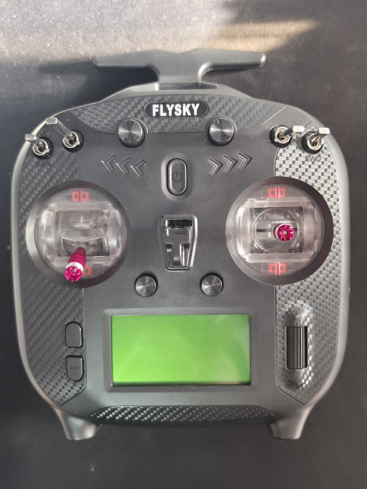

ไฟล์ที่เก็บท่าและโปรแกรม
ท่าและโปรแกรมทั้งหมดอยู่ในไฟล์ programs.yaml ไฟล์เดียว ซึ่งเป็นข้อมูลของผู้ใช้ จึงเก็บไว้ในโฟลเดอร์ src ไม่ใช่ install (โฟลเดอร์ install ถูกเขียนทับทุกครั้งที่ build)
| เครื่อง | ที่อยู่ไฟล์ |
|---|---|
| Pi (นอก container) | ~/Humanoi/ros2_ws/src/ar_program/config/programs.yaml |
Pi (ใน container humanoi_ros) | /humanoi_ws/src/ar_program/config/programs.yaml (ไฟล์เดียวกับข้างบน) |
| PC (WSL และซิม) | ar4\ar4_ws\src\ar_program\config\programs.yaml เป็นคนละไฟล์กับบน Pi |
ในไฟล์มีส่วน poses (ท่าแยกตามแขน มุม J1 ถึง J6 หน่วยเรเดียน) ส่วน programs (ขั้นของแต่ละโปรแกรม) และส่วน hand_poses / hand_poses_left (ท่ามือที่สอนเองของชุดมือขวาและชุดมือซ้าย) แก้ไฟล์ด้วยมือได้ แต่ใช้คำสั่ง arm ปลอดภัยกว่า เพราะคำสั่งตรวจค่าก่อนบันทึก ไฟล์นี้ถูกเขียนใหม่ทั้งไฟล์ทุกครั้งที่ teach หรือบันทึกโปรแกรม คอมเมนต์ที่เพิ่มเองจะหาย ยกเว้นส่วนหัวของไฟล์
scripts/sync_to_pi.sh ที่รันจาก PC จะเขียนทับ programs.yaml บน Pi ด้วยไฟล์ของ PC (สำรองของเดิมไว้เป็น programs.yaml.bak) ถ้าสอนท่าไว้บน Pi ให้ดึงไฟล์กลับมา PC ก่อนรันสคริปต์นี้ ไม่อย่างนั้นท่าที่สอนบน Pi จะถูกทับมือ AmazingHand
ปลายแขน AR4 ติดมือหุ่นยนต์ AmazingHand ซึ่งเป็นมือสี่นิ้ว (ชี้ กลาง นาง โป้ง) ต้นแบบของ Pollen ทีมใช้ชุดประกอบที่ซื้อจาก AliExpress มือใช้ทำท่าสื่อสาร เช่น ชูนิ้วโป้ง ส่ายนิ้ว และท่าในเกมเป่ายิ้งฉุบ และใช้จับของเบาๆ เช่นหูกล่องในงานหยิบกล่องด้วยกล้อง บทนี้อธิบายว่ามือทำงานอย่างไร ต้องเช็กอะไรก่อนสั่งขยับ ลองท่า สอนท่าใหม่ คาลิเบรตนิ้ว และใส่ท่ามือลงในโปรแกรมแขน
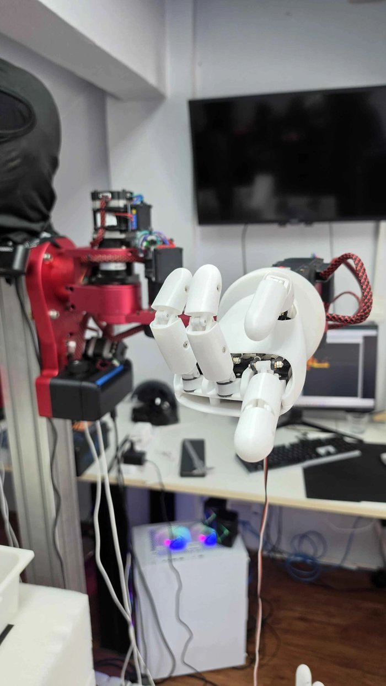
มือทำงานอย่างไร
แต่ละนิ้วขยับด้วย servo สองตัว (เรียกตัวแรกของคู่ว่า a ตัวที่สองว่า b) ถ้า servo สองตัวหมุนสวนทางกัน นิ้วจะงอหรือเหยียด ถ้าหมุนไปทางเดียวกัน นิ้วจะเอียงหรือกางออกด้านข้าง มือหนึ่งข้างจึงมี servo 8 ตัว ทั้ง 8 ตัวต่อเข้าบอร์ดเดียวกันและแยกกันด้วยหมายเลข ID
| ส่วน | รายละเอียด |
|---|---|
| servo | Feetech SCS0009 × 8 (ลิมิตโรงงานราว ±144°) |
| หมายเลข servo (ID) | นิ้วชี้ 1–2 · กลาง 3–4 · นาง 5–6 · โป้ง 7–8 |
| บอร์ดต่อ | Waveshare Bus Servo Adapter (A) ชิป CH343 (USB ID 1a86:55d3) ตั้ง jumper ไว้ที่ B (USB) แล้วเสียบ USB เข้า Pi |
| ไฟเลี้ยง | แหล่งจ่าย 6 V อย่างน้อย 3 A เข้าช่องไฟของบอร์ด ที่ servo ได้ 5.1–5.4 V เพราะบอร์ดทำไฟตกราว 0.8–1 V |
| ความเร็วสื่อสาร (baud) | โปรแกรมหาเอง (ตอนเขียนเอกสารเป็น 250000) |

ซอฟต์แวร์ของมืออยู่ในแพ็กเกจ humanoi_games ใน container ตัวคุมมือ (amazinghand_node) เป็นโปรแกรมเดียวที่สั่งมือระหว่างใช้งานปกติ และเปิดมาพร้อมกับ arm player และ arm rps ทุกครั้งที่เชื่อมต่อ ตัวคุมมือทำตามลำดับดังนี้ หาพอร์ตจาก USB ID ของบอร์ด หา baud เอง เช็กว่า servo ตอบครบ 8 ตัวและไฟของทุกตัวอยู่ในช่วง 4.8–7.4 V อ่านขีดจำกัดมุมจาก servo แต่ละตัว แล้วสั่งให้ถือท่าปัจจุบันก่อนจึงเปิดแรงบิด นิ้วจึงไม่กระตุก ถ้าขั้นไหนไม่ผ่าน มือจะไม่เปิดแรงบิดและไม่ขยับ แล้วบอกเหตุผลใน log ของหน้าต่างนั้น
เมื่อปิดตัวคุมมือ (ปิด arm player หรือ arm rps) servo ทุกตัวถูกปลดแรงบิด นิ้วจะอ่อนลงเป็นกำ ข้อนี้สำคัญเวลามือถือของอยู่
มือไหนต่อกับบอร์ดไหน
มือสองข้างใช้ servo ID 1–8 เหมือนกัน และลำดับพอร์ต ttyACM อาจสลับกันทุกครั้งที่เสียบ โปรแกรมจึงแยกมือจาก "หมายเลขบอร์ด" (serial ของบอร์ด Waveshare ซึ่งเห็นได้ใน /dev/serial/by-id) ตามที่กำหนดในไฟล์ humanoi_games/config/hand_boards.yaml นอกจากหมายเลขบอร์ด ไฟล์ยังบอก "ชุดมือ" (kit) ที่ติดแขนนั้น ซึ่งเป็นตัวเลือกไฟล์คาลิเบรตและชุดท่าที่สอนไว้ เพราะมือซ้ายกับมือขวาประกอบสะท้อนกัน ค่าของมือหนึ่งจึงใช้กับอีกมือตรงๆ ไม่ได้
| แขน | หมายเลขบอร์ด | ชุดมือ | ไฟล์คาลิเบรต | ท่าที่สอน (ใน programs.yaml) | topic สั่งท่า |
|---|---|---|---|---|---|
left (แขน 1) | 5B91044327 | left | middle_pos_left.json | hand_poses_left | /hand/gesture |
right (แขน 2) | 5B91030501 | right | middle_pos.json | hand_poses | /right_hand/gesture |
ค่าในตารางเป็นค่าในไฟล์ตอนเขียนคู่มือ (27 ต.ค. 2026) แขนซ้ายติดชุดมือซ้าย แขนขวาติดชุดมือขวา ตรงกับโมเดลหุ่นใน RViz เอกสาร AMAZINGHAND.md ฉบับ 21 ต.ค. ที่บอกว่าแขนซ้ายติดมือขวา เขียนไว้ตอนยังมีมือข้างเดียว ก่อนย้ายชุดมือ
ดูการจับคู่ปัจจุบันได้ด้วยคำสั่ง
arm hand-side
เมื่อมีไฟล์ hand_boards.yaml คำสั่งนี้แค่แสดงว่าบอร์ดไหนเป็นของแขนไหน ถ้าย้ายชุดมือหรือบอร์ดไปอีกแขน ต้องแก้ไฟล์นั้น (แก้บน PC แล้ว sync เพราะไฟล์อยู่ใน ros2_ws/src) ส่วนหมายเลขบอร์ดที่เสียบอยู่จริงดูได้จาก arm hand-scan ถ้าไม่มีไฟล์นี้ ระบบจะทำงานแบบมือข้างเดียวตามเดิม คือหาบอร์ดเอง และใช้ arm hand-side left หรือ arm hand-side right ตั้งว่าใส่ชุดมือไหน (ต้องปิดโปรแกรมที่ใช้มือก่อน)

กฎความปลอดภัยเรื่องไฟ
ก่อนสั่งมือขยับ โดยเฉพาะหลังเปลี่ยนแหล่งจ่ายหรือย้ายสาย ให้ทำตามขั้นนี้ทุกครั้ง
- ก่อนเสียบมือ วัดแรงดันด้วยมิเตอร์ที่ขั้ว V–G ของบอร์ด (ทุกครั้งที่เปลี่ยนแหล่งจ่าย)
- ต่อสาย: ไฟ 6 V เข้าบอร์ด · jumper ที่ B · USB ของบอร์ดเข้า Pi
- ปิดโปรแกรมที่ใช้พอร์ตมืออยู่ (
arm player,arm rps,arm hand-teach,arm hand-calibrate) - สแกนบอร์ดมือ คำสั่งนี้อ่านอย่างเดียว ไม่ขยับนิ้ว
arm hand-scan
- อ่านผล: ทุกบอร์ดต้องขึ้น ✓ พร้อม servo 8 ตัว (ID1–ID8) และไม่มีเครื่องหมาย ⚠ ข้างค่าไฟ เครื่องหมาย ⚠ หมายถึงไฟนอกช่วง 4.8–7.4 V ห้ามสั่งขยับ
ผลของ arm hand-scan แสดงทีละบอร์ด บรรทัดแรกบอกพอร์ต หมายเลขบอร์ด และบอกว่าบอร์ดนี้เป็นมือแขนไหน ชุดมือไหน ตาม hand_boards.yaml (หรือ "ไม่อยู่ใน hand_boards.yaml") บรรทัดถัดไปบอกว่าที่ baud ไหนมี servo ตอบกี่ตัว และไฟของแต่ละตัว ถ้าขึ้น ✗ ไม่มีเซอร์โวตอบ แปลว่าไฟมือปิด สาย servo ไม่ได้ต่อ (ช่อง D V G) หรือ jumper ไม่อยู่ที่ B ถ้าขึ้นว่าเปิดพอร์ตไม่ได้ แปลว่ามีโปรแกรมอื่นใช้พอร์ตอยู่

พอร์ตมือเปิดได้ทีละโปรแกรม
บอร์ดมือหนึ่งบอร์ดเปิดได้ทีละโปรแกรมเท่านั้น คำสั่ง arm จะไม่ยอมเปิดคำสั่งที่ชนกัน และขึ้น ✗ มีโปรแกรมใช้พอร์ตมืออยู่ พร้อมบอกว่าต้องปิดอะไร
| โปรแกรม | ถือพอร์ตมือเมื่อไร |
|---|---|
arm player | ตลอดที่เปิด (มีตัวคุมมือ) — arm player nohand ไม่ต่อมือจริง แค่ log ท่า |
arm rps | ตลอดที่เปิด (มีตัวคุมมือ) — nohand ได้เช่นกัน |
arm hand-teach | ตลอดที่เปิด |
arm hand-calibrate | ตลอดที่เปิด |
arm hand-scan | ชั่วครู่ระหว่างสแกน |
เครื่องมือบน Windows (Desktop\AmazingHand\tools\*.py) | เฉพาะตอนเสียบมือเข้า PC (ต้องใส่ --baud 250000) |
ท่าในตัว
ท่าในตัวไม่ได้เก็บเป็นมุม servo ตายตัว แต่คำนวณจากค่าคาลิเบรตสามค่าของแต่ละนิ้ว คือ แบสุด กำสุด และเอียง (ให้นิ้วตั้งตรง) เมื่อคาลิเบรตใหม่ ท่าในตัวทุกท่าจึงเปลี่ยนตาม
| ชื่อท่า | ลักษณะ |
|---|---|
rock | ทุกนิ้วกำสุด (ค้อน) |
fist | เหมือน rock ทุกนิ้วกำสุด |
paper | ทุกนิ้วแบสุด (กระดาษ) |
scissors | ชี้และกลางแบพร้อมกางออกจากกัน 25° นางและโป้งกำ (กรรไกร) |
windup | ทุกนิ้วอยู่กึ่งกลางระหว่างแบกับกำ (กำหลวม — ท่าง้างในเกม) |
like | โป้งแบ นิ้วอื่นกำ (ชูนิ้วโป้ง) |
point | ชี้แบ นิ้วอื่นกำ (ชี้นิ้ว) |
victory | ท่าเคลื่อนไหว: ชูสองนิ้วแล้วหุบ-กางแบบกรรไกร 3 รอบ |
nonono | ท่าเคลื่อนไหว: ชี้นิ้วแล้วส่ายซ้าย-ขวา ±35° 3 รอบ |
relax | ไม่ใช่ท่า — ปลดแรงบิด นิ้วอ่อน |
นอกจากท่าในตัว ยังใช้ท่าที่สอนเองได้ทุกที่ (หัวข้อถัดไป) และถ้าสอนท่าโดยตั้งชื่อซ้ำกับท่าในตัว ท่าที่สอนจะถูกใช้แทนท่าในตัวทุกที่ รวมถึงในเกมเป่ายิ้งฉุบ

ลองท่ามือ: arm hand
ใช้เช็กว่ามือตอบ และดูว่าท่าหนึ่งออกมาหน้าตาอย่างไร คำสั่งนี้ส่งท่าให้ตัวคุมมือ จึงต้องมีตัวคุมมือเปิดอยู่ก่อน คือ arm player (หรือ arm rps)
- หน้าต่างที่หนึ่ง เปิดตัวเล่นโปรแกรมค้างไว้ ตัวคุมมือจะเปิดให้ทุกแขนที่มีใน
hand_boards.yamlarm player
- อีกหน้าต่าง สั่งท่าให้มือแขนซ้าย (ค่าเริ่ม) ถ้าส่งถึง จะขึ้น
มือซ้าย -> rockarm hand rock
- สั่งมือแขนขวา ให้เติม
rightต่อท้ายarm hand paper right
ถ้าพิมพ์ชื่อท่าผิด คำสั่งจะพิมพ์รายชื่อท่าที่ใช้ได้ทั้งหมด (ท่าในตัวและท่าที่สอนเอง) ถ้าขึ้น ✗ ไม่มีตัวคุมมือบนแขน... แปลว่ายังไม่ได้เปิด arm player ถ้าสั่งแล้วนิ้วไม่ขยับ ให้ดู log ในหน้าต่าง arm player ตัวคุมมือจะบอกเหตุผล เช่น servo ตอบไม่ครบหรือไฟไม่อยู่ในช่วง
สอนท่ามือเอง: arm hand-teach
บางครั้งท่าที่คำนวณจากค่าคาลิเบรตดูไม่สวยกับมือตัวจริง หรืออยากได้ท่าใหม่ที่ไม่มีในตัว เช่นท่าจับหูกล่อง hand-teach ให้จัดท่าทีละนิ้วแบบสอนหุ่นยนต์ แล้วบันทึกเป็นชื่อท่า ท่าที่สอนเก็บเป็นมุม servo ทั้ง 8 ตัวตรงๆ จึงไม่ขึ้นกับค่าคาลิเบรต
จัดนิ้วได้สองวิธี วิธีแรกคือจ็อก กดปุ่มให้นิ้วที่เลือกกำ แบ หรือเอียงทีละ 5° วิธีที่สองคือปล่อยนิ้วให้อ่อน (free) แล้วจับดัดด้วยมือ จากนั้นล็อกไว้ (hold)
| พิมพ์ | ทำอะไร |
|---|---|
1 2 3 4 | เลือกนิ้ว ชี้ / กลาง / นาง / โป้ง · 0 = ทุกนิ้ว |
+ / - | กำ / แบ นิ้วที่เลือก 5° (ใส่ตัวเลขได้ เช่น +10 = 10°) |
l / r | เอียงนิ้วที่เลือก 5° (เช่น l10 = 10°) |
free | ปล่อยนิ้วที่เลือกให้อ่อน จับดัดด้วยมือได้ |
hold | ล็อกนิ้วที่ปล่อยไว้ตรงที่ดัด (save และการจ็อกก็ล็อกให้เอง) |
load <ชื่อ> | เรียกท่า (ในตัวหรือที่สอนไว้) มาแก้ต่อ ขยับเร็วเท่าตอนเล่นจริง ใช้ดูว่าท่าจะออกมาแบบไหนใน arm hand หรือในเกม |
save <ชื่อ> | บันทึกท่าตอนนี้ ชื่อเป็นภาษาอังกฤษ (a-z 0-9 _) ขึ้นต้นด้วยตัวอักษร |
list | ดูท่าที่สอนไว้ |
del <ชื่อ> | ลบท่า (ท่าที่ยังใช้อยู่ในโปรแกรมลบไม่ได้) |
q | ออก (นิ้วอ่อนลง) |
- ปิด
arm player,arm rpsและarm hand-calibrateก่อน (ใช้พอร์ตมือเดียวกัน) และเช็กไฟด้วยarm hand-scan - เปิดโปรแกรมสอนของมือแขนซ้าย (ค่าเริ่ม) หรือเติม
rightสำหรับมือแขนขวาarm hand-teach # มือแขนขวา: arm hand-teach right
- มือเริ่มที่ท่าที่ค้างอยู่ตอนเปิด ถ้าจะแก้ท่าเดิม พิมพ์
load <ชื่อ>ก่อน - เลือกนิ้วด้วย
1–4แล้วจ็อกด้วย+-lrหรือfreeแล้วดัดด้วยมือแล้วholdบรรทัดคำสั่งจะบอกค่าของนิ้วที่เลือก เช่นชี้ งอ +20 เอียง +4(ถ้าเห็น(ปล่อย)แปลว่านิ้วนั้นอ่อนอยู่) - ได้ท่าที่ต้องการแล้ว
save <ชื่อ>แล้วลองload <ชื่อ>ดูที่ความเร็วจริงอีกครั้ง - เสร็จแล้วพิมพ์
qนิ้วจะอ่อนลง จากนั้นเปิดarm playerแล้วใช้ท่าใหม่ได้ทันที

! นิ้วไปต่อไม่ได้: นาง ID5 ค้างที่ +70 (สั่ง +90) แปลว่านิ้วชนฝ่ามือ ชนนิ้วอื่น หรือสุดทางกลไกแล้ว โปรแกรมจะถือนิ้วไว้ตรงที่ไปถึง อย่ากดต่อ เพราะ servo ตั้งไว้ว่าถ้าโหลดเกิน 80% นานๆ จะตัดแรงบิดตัวเอง นิ้วนั้นจะอ่อนไปทุกท่าหลังจากนั้นและท่าจะดูมั่ว ตัวคุมมือใน arm player และในเกมก็เช็กแบบเดียวกันทุกท่า คือเปิดแรงบิดคืนให้ก่อนทำท่า และถ้านิ้วไหนไปไม่ถึงจะถือไว้ตรงนั้นแล้วเตือนชื่อท่าในหน้าต่างข้อควรรู้เกี่ยวกับท่าที่สอน
| เรื่อง | รายละเอียด |
|---|---|
| ที่เก็บ | programs.yaml ไฟล์เดียวกับท่าแขน หัวข้อ hand_poses (ชุดมือขวา) และ hand_poses_left (ชุดมือซ้าย) · arm list แสดงท่าเหล่านี้ด้วย |
| ชื่อซ้ำท่าในตัว | ชื่อ rock paper scissors point like windup victory nonono fist = ใช้แทนท่าในตัวทุกที่ รวมถึงเกม · del ชื่อนั้น = กลับไปใช้ท่าคำนวณ · victory / nonono ที่สอนเองเป็นท่านิ่ง |
| ชื่อใหม่ | เช่น ok, wave1 ใช้ใน arm program และ arm hand ได้ทันที |
| ไม่ต้องรีสตาร์ท | ตัวคุมมืออ่านไฟล์ใหม่ทุกคำสั่ง สอนเพิ่มแล้วไม่ต้องปิดเปิด arm player หรือเกม |
| ผูกกับมือตัวนี้ | ถ้าถอดแตร servo ใส่ใหม่หรือเปลี่ยนมือ ต้องสอนใหม่ |
| ขอบของ servo | ถึงขอบที่ servo หมุนได้ (ราว ±143) จะหยุดที่ขอบแล้วเตือน |
programs.yaml อยู่บน Pi และถูกเขียนทับเมื่อ sync โค้ดจาก PC ถ้าสอนท่ามือบน Pi ให้ดึงไฟล์กลับมา PC ก่อน sync ครั้งถัดไป (ดูบท Raspberry Pi และ Docker)คาลิเบรตนิ้ว: arm hand-calibrate
การคาลิเบรตตั้งค่าสามค่าของแต่ละนิ้ว คือ แบสุด กำสุด และเอียง (ให้นิ้วตั้งตรงไม่เอียงข้าง) ท่าในตัวทุกท่าคำนวณจากสามค่านี้ เช่น ค้อนใช้กำสุด กระดาษใช้แบสุด ท่าง้างใช้กึ่งกลาง ส่วนท่าที่สอนเองเป็นมุม servo ตรงๆ จึงไม่ได้รับผลจากการคาลิเบรต สรุปง่ายๆ คือ ถ้าท่าในตัวหลายท่าดูเพี้ยน ให้คาลิเบรต ถ้าเพี้ยนท่าเดียว ให้สอนท่านั้นใหม่ด้วยชื่อเดิม
- ปิดเกมและ
arm player(กด Ctrl+C ที่หน้าต่างนั้น) และarm hand-teachเพราะใช้พอร์ตมือเดียวกัน - เปิดเครื่องมือคาลิเบรตของมือแขนซ้าย (ค่าเริ่ม) หรือเติม
rightสำหรับมือแขนขวา ตอนเปิดจะพิมพ์ baud และขีดจำกัดมุมที่อ่านจาก servo ทุกตัวarm hand-calibrate # มือแขนขวา: arm hand-calibrate right
- ถ้าค่าเดิมเละจนอยากเริ่มใหม่ ใช้
--resetเริ่มจากค่าเดโม (ไฟล์ค่าเดิมถูกเปลี่ยนชื่อเป็น.bak-<เวลา>ไม่ลบ)arm hand-calibrate --reset
- เริ่มที่นิ้วชี้ในท่าแบสุด: กด
+/-ให้แบมากขึ้นหรือน้อยลง และl/rให้นิ้วตั้งตรง (ทิศของl/rขึ้นกับการประกอบมือ ลองกดแล้วดูว่านิ้วไปทางไหน) - กด
cไปท่ากำสุด: กด+/-จนปลายนิ้วแตะฝ่ามือพอดี ถ้าได้ยิน servo ครางค้าง แปลว่ากำเกิน กด-จนเงียบ - กด
nไปนิ้วถัดไป (บันทึกให้) ตามลำดับ ชี้ → กลาง → นาง → โป้ง ระหว่างทางกดoกลับไปดูท่าแบสุด หรือpกลับนิ้วก่อนหน้าได้ - ครบแล้วกด
qบันทึกแล้วออก (กดxหรือ Ctrl+C = ออกโดยไม่บันทึก) - เปิด
arm playerหรือarm rpsใหม่ ค่าใหม่ถูกโหลดตอนเปิดเท่านั้น
ทุกปุ่มใส่ตัวเลขต่อท้ายได้ เช่น +5 หรือ l3 บรรทัดคำสั่งบอกค่าปัจจุบันและมุม servo จริง เช่น [นิ้วชี้ · ท่ากำสุด] แบ -94 · กำ +112 · เอียง -20 · servo ID1 +92 ID2 -132 ถ้าค่าที่ขอทำไม่ได้ จะไม่แก้และบอกเหตุผลเป็นตัวเลข เช่น servo ID2 ต้องไป -150° แต่หมุนได้ -144..+144° ระหว่างตั้งนิ้วหนึ่ง นิ้วอื่นจะแบสุดไว้ไม่ให้ขวาง (โปรแกรมเริ่มด้วยการแบทั้งมือ) เอกสารเก่าบางฉบับเขียนว่านิ้วอื่นกำไว้ ซึ่งเป็นแบบเดิมก่อนแก้เมื่อ 27 ต.ค.
ค่าที่ได้เก็บใน ~/Humanoi/ros2_ws/src/humanoi_games/config/ บน Pi ไฟล์ middle_pos.json (ชุดมือขวา) หรือ middle_pos_left.json (ชุดมือซ้าย) ไฟล์นี้เกิดบน Pi ควรดึงกลับมาเก็บที่ PC เช่นเดียวกับ programs.yaml ถ้าไม่มีไฟล์ ท่าจะเหมือนเดโมต้นฉบับของ Pollen
ใช้ท่ามือในโปรแกรมแขน
ท่ามือใส่ลงในขั้นของโปรแกรมแขนได้ (arm player เปิดตัวคุมมือให้เอง) แต่ละขั้นของ arm program เขียนเป็น
arm program <ชื่อ> <แขนซ้าย>/<แขนขวา>[/<มือซ้าย>[/<มือขวา>]] ... # - = ไม่ขยับ · wait=วินาที = รอ
ช่องที่สามคือมือบนแขนซ้าย ช่องที่สี่คือมือบนแขนขวา ใช้ได้ทั้งท่าในตัว (rock paper scissors point like windup victory nonono fist relax) และท่าที่สอนเอง ตัวอย่างต่อไปนี้พาแขนซ้ายไปท่า act1 แล้วกำมือ จากนั้นพาแขนไป act2 พร้อมแบมือ
arm program grab act1/- -/-/rock act2/-/paper
arm show grab # ตารางมีคอลัมน์มือซ้าย / มือขวา
arm run grab # ต้องเปิด arm player ไว้
แขนกับมือที่อยู่ในขั้นเดียวกันขยับพร้อมกัน ถ้าต้องการให้แขนถึงที่ก่อนแล้วมือค่อยกำ ให้แยกเป็นสองขั้น (act1/- แล้ว -/-/rock) ขั้นถัดไปจะรอจนแขนถึงและมือทำท่าเสร็จ (ท่านิ่งรอ 0.6 วินาที victory และ nonono รอ 1.8 วินาที) โปรแกรมแบบเดิมที่มีแค่ <แขนซ้าย>/<แขนขวา> ยังใช้ได้เหมือนเดิม ในไฟล์ programs.yaml ขั้นหนึ่งจะเก็บเป็นรูป {left: act1, right: still, left_hand: rock}
ช่องมือขวาส่งท่าไปที่ topic /right_hand/gesture ซึ่ง arm player เปิดตัวคุมมือให้แขนละหนึ่งตัวตามที่มีใน hand_boards.yaml (ตอนนี้มีทั้งสองแขน) ถ้าตอนเริ่มขั้นไม่มีตัวคุมมือของแขนนั้นเปิดอยู่ ตัวเล่นจะเตือนแล้วข้ามท่ามือของแขนนั้น แขนยังขยับตามปกติ
ข้อจำกัดที่รู้อยู่
ข้อจำกัดต่อไปนี้มาจากบันทึกสถานะวันที่ 21 ต.ค. 2026 ซึ่งตอนนั้นมีชุดมือขวาชุดเดียว ผู้ใช้ควรรู้เพื่อไม่ให้เข้าใจผิดว่าระบบเสีย ส่วนเรื่องคาลิเบรต ณ 27 ต.ค. ทั้งสองชุดมือคาลิเบรตครบ 4 นิ้วแล้ว
| เรื่อง | ผล | ทางแก้ |
|---|---|---|
| นิ้วมีระยะฟรี | ตำแหน่งนิ้วไม่ซ้ำเดิม คาลิเบรตแล้วก็ไม่นิ่ง | ปิดไฟมือ ขันสกรูแตร servo และข้อต่อก้านนิ้วให้แน่นก่อนคาลิเบรต |
| แตร servo น่าจะใส่คลาดหลายฟัน | ช่วงหมุนที่เหลือของ servo น้อย กำหรือแบอาจชนขอบก่อนนิ้วถึง | ถาวร: ถอดแตรใส่ใหม่ให้ตรงฟัน (ฟันละ 18°) · ตอนนี้ชดเชยด้วยซอฟต์แวร์ |
| มุมกางของท่ากรรไกร ชี้ ส่ายนิ้ว เป็นค่าตายตัวของเดโม (±25°, ±15°, ±35°) | อาจดูไม่สวยกับมือนี้ | สอนท่าชื่อเดิมด้วย arm hand-teach แทน |
| baud เคยเปลี่ยนกลับเองจาก 1 Mbps เป็น 250000 | เครื่องมือบน Windows ที่ตั้ง 1 Mbps ต่อไม่ติด | บน Pi หาเองอยู่แล้ว · บน Windows ใส่ --baud 250000 |
ต้องเช็ก: นิ้วหลวมและแตร servo คลาดฟันของชุดมือขวาแก้แล้วหรือยัง และชุดมือซ้ายมีอาการเดียวกันไหม
หยิบกล่องด้วยกล้อง
งานนี้ให้แขนซ้ายหยิบกล่อง (ถาด) ที่วางอยู่บนโต๊ะ โดยดูตำแหน่งกล่องจากกล้อง Astra Pro ที่ติดอยู่ใต้คางของหุ่น กล้องไม่ได้มองตัวกล่องโดยตรง แต่มองป้าย ArUco (สี่เหลี่ยมลายขาวดำ) ที่แปะไว้กลางพื้นกล่อง ป้ายนี้ทำให้รู้ทั้งตำแหน่งและมุมของกล่องได้แม่นจากภาพสีอย่างเดียว
วิธีที่ใช้เรียกว่า "ทางลัด" คือไม่ต้องรู้ว่ากล้องอยู่ตรงไหนของตัวหุ่นอย่างละเอียด ผู้ใช้สอนท่าจับจริงไว้หนึ่งครั้งตอนกล่องอยู่ตำแหน่งปกติ และสอนให้ระบบรู้ว่าทิศของกล้องหันอย่างไรเทียบกับแขน เวลาหยิบจริง ระบบดูว่าป้ายเลื่อนไปจากตอนสอนเท่าไร แล้วเลื่อนมือตามไปเท่านั้น โดยข้อมือคงมุมเดิม วิธีนี้ง่ายและแม่น แต่มีข้อแลกคือ ใช้ได้เฉพาะเมื่อกล่องอยู่ใกล้ตำแหน่งที่สอน (ไม่เกิน 8 cm) และไม่หมุน (ไม่เกิน 4°)
อุปกรณ์และป้าย ArUco
| ชิ้น | รายละเอียด |
|---|---|
| กล่อง | 26.5 × 23.5 × 10 cm มีหูกล่องขนาด 1 × 1 cm ด้านยาว |
| ป้าย | ArUco ชุด DICT_4X4_50 หมายเลข (id) 1 ด้านสี่เหลี่ยมดำ 120 mm แปะกลางพื้นกล่อง |
| ไฟล์ป้าย | docs/calibration/aruco_tray_id1_120mm.pdf (หรือ .html) |
| กล้อง | Astra Pro ใต้คาง ใช้ภาพสีอย่างเดียว ไม่ใช้ depth เพราะกล่องอยู่ใกล้กว่าระยะต่ำสุดที่ depth วัดได้ (ราว 0.6 m) |
| แขนและมือ | แขนซ้าย + มือ ใช้ท่ามือ tray_grip0 (นิ้วเตรียม) และ tray_grip (นิ้วจับหูกล่อง) ซึ่งเป็นท่าที่สอนไว้ด้วย arm hand-teach |
พิมพ์และแปะป้าย
ความแม่นของทั้งระบบขึ้นกับว่าขนาดป้ายตรงกับที่โปรแกรมเข้าใจหรือไม่ เครื่องพิมพ์มักย่อภาพเองโดยไม่บอก (เคยพิมพ์ออกมาเหลือ 94%) จึงต้องวัดทุกครั้ง
- เปิดไฟล์
docs/calibration/aruco_tray_id1_120mm.pdfแล้วสั่งพิมพ์แบบ ขนาดจริง / Actual size / 100% ปิดตัวเลือก "Fit to page" - วัดด้านสี่เหลี่ยมดำ ต้องได้ 120 mm และแถบมาตราส่วนด้านล่างต้องยาว 100 mm ถ้าไม่ตรง จดค่าที่วัดได้ไว้ (ใช้ตอนเปิด
arm tray) - ตัดตามเส้นเทาอ่อน เหลือขอบขาวรอบป้าย 20 mm ห้ามตัดขอบขาวทิ้ง
- แปะให้เรียบกลางพื้นกล่อง ห้ามงอหรือยับ หันด้านบนของป้าย (ด้านหัวกระดาษ) ไปทางหุ่น
- แปะแล้วห้ามย้าย เพราะท่าจับที่สอนอ้างอิงกับตำแหน่งป้าย ถ้าจำเป็นต้องย้ายป้าย ต้องสอนใหม่
docs/calibration มีป้ายอีกแผ่นคือ aruco_handeye_id0.pdf (id 0) ซึ่งเป็นป้ายติดมือสำหรับงาน hand-eye calibration คนละงานกัน อย่าใช้สลับกัน ป้ายของกล่องต้องเป็น id 1
เปิดกล้องและตัวหากล่อง: arm tray
arm tray เปิดกล้องพร้อมตัวหากล่อง (tray_detector) และ Foxglove bridge ในคำสั่งเดียว เป็นคำสั่งเปิดค้าง ต้องเปิดไว้ตลอดทั้งตอนสอนและตอนหยิบ
arm tray
ถ้าวัดป้ายที่พิมพ์ได้ไม่ตรง 120 mm ให้บอกขนาดจริงเป็นเมตร เช่นวัดได้ 118 mm
arm tray marker_size:=0.118
ตัวหากล่องเก็บตำแหน่งป้ายจากหลายเฟรมแล้วเฉลี่ย ส่งตำแหน่งออกไปเฉพาะเมื่อป้าย "นิ่ง" คือเห็นป้ายพอหลายเฟรม ตำแหน่งแกว่งไม่เกินเกณฑ์ และป้ายไม่เอียงหนีกล้องมากเกินไป เปิดดูภาพได้ใน Foxglove ที่ Image panel topic /tray/image/compressed ภาพจะมีกรอบสีเขียวรอบป้าย แกนสามสี และตัวเลขด้านบน
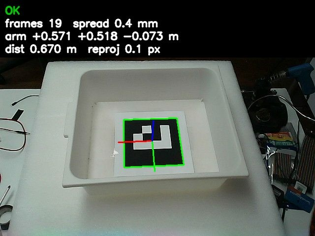
สถานะ (topic /tray/status) | ความหมาย |
|---|---|
ok | เห็นป้ายและนิ่ง ส่งตำแหน่งแล้ว |
no_marker | ไม่เห็นป้าย |
unstable | เห็นแต่ยังไม่นิ่ง (กล่องกำลังขยับ หรือมองเฉียง) |
tilted | ป้ายเอียงหนีกล้องมากเกินไป |
no_camera_info | ยังไม่ได้ข้อมูลเลนส์จากกล้อง |
กล้องเปิดได้ทีละโปรแกรม ถ้ามีโปรแกรมอื่นเปิดกล้องอยู่ (hand-eye calibration, yolo หรือ arm rps) คำสั่งจะขึ้น ✗ กล้องถูกเปิดอยู่โดยโปรแกรมอื่น ให้ปิดหน้าต่างนั้นก่อน หรือใช้กล้องตัวที่เปิดอยู่แล้วด้วย
arm tray camera:=false
หน้าต่างที่ต้องเปิด
งานนี้ใช้หลายโปรแกรมทำงานพร้อมกัน แต่ละตัวเปิดค้างในหน้าต่างของตัวเอง ก่อนสอนหรือหยิบ ให้เปิดตามตารางนี้ให้ครบ
| หน้าต่าง | คำสั่ง | ตอนสอน (tray-teach) | ตอนหยิบ (tray-pick) |
|---|---|---|---|
| 1 | arm start left — ระบบแขน (แขนซ้ายจริง แขนขวาจำลอง) | ต้องมี | ต้องมี |
| 2 | arm tray — กล้อง + ตัวหากล่อง | ต้องมี | ต้องมี |
| 3 | arm moveit — บนเดสก์ท็อป Pi ใช้จ็อกแขน | ใช้จ็อกแขนไปแตะและจับ | ไม่ต้อง |
| 4 | arm player — ตัวเล่นโปรแกรม + ตัวคุมมือ | ควรเปิด ใช้สั่งนิ้วเป็น tray_grip ตอนสอนท่าจับ (โปรแกรมสอนไม่บังคับ) | ต้องมี (สั่งนิ้ว tray_grip0 / tray_grip) |
| 5 | arm tray-teach หรือ arm tray-pick | หน้าต่างที่ใช้พิมพ์คำสั่งสอน/หยิบ | |
arm tray-teach และ arm tray-pick จะไม่ยอมเปิดถ้า arm tray ยังไม่ได้เปิด arm tray-pick ยังเช็กเพิ่มว่าระบบแขนและตัวคุมมือเปิดอยู่ด้วย ทั้งสองคำสั่งใช้แขนซ้ายเป็นค่าเริ่ม (แขนขวายังไม่ได้สอนท่าจับ)
สอนหยิบ: arm tray-teach
การสอนมีสองขั้น ขั้นแรกคือ "ท่าแตะ" เพื่อให้ระบบรู้ทิศของกล้องเทียบกับแขน โดยให้ปลายนิ้วแตะจุดเดิมบนกล่องหลายครั้ง ขณะที่กล่องเลื่อนไปหลายตำแหน่ง ระบบจะเทียบว่าเมื่อป้ายในภาพเลื่อนไปทางหนึ่ง ข้อมือต้องเลื่อนไปทางไหน ขั้นที่สองคือ "ท่าจับจริง" ซึ่งเป็นท่าที่นิ้วจับหูกล่องจริงๆ ระบบจะใช้ท่านี้เป็นจุดตั้งต้นแล้วเลื่อนตามกล่องตอนหยิบ ทำครั้งเดียวก็ใช้ได้ไปเรื่อยๆ ตราบที่ป้ายไม่ถูกย้ายบนกล่อง และกล้องไม่ถูกขยับ
arm tray-teach ใหม่ทั้งสองขั้น| พิมพ์ | ทำอะไร |
|---|---|
| Enter | เก็บท่าแตะ |
u | ลบท่าแตะล่าสุด |
d <n> | ลบท่าแตะครั้งที่ n |
g | เก็บท่าจับจริง |
gu | ลบท่าจับล่าสุด |
l | ดูสิ่งที่เก็บไว้ |
w | บันทึกผล |
q | ออก |
- เปิดหน้าต่างตามตารางข้างบน แล้ววางกล่องที่ตำแหน่งปกติ เช็กใน Foxglove ว่าภาพขึ้น OK
- เปิดโปรแกรมสอน
arm tray-teach
- ท่าแตะ: ใน RViz จ็อกแขนให้ "จุดเดิมบนนิ้ว" แตะ "จุดเดิมบนกล่อง" รอให้แขนนิ่ง แล้วกด Enter ข้อมือต้องมุมเดิมทุกครั้ง ใน RViz ให้ลากเฉพาะลูกศรเลื่อน ไม่ลากวงหมุน
- เลื่อนกล่องไปราว 3–7 cm (ไม่หมุนกล่อง) แล้วแตะซ้ำ ทำทั้งหมด 4–6 ครั้ง โดยเลื่อนอย่างน้อยสองทิศ คือซ้าย/ขวา และหน้า/หลัง ครั้งที่ข้อมือหรือกล่องหมุนไปจากกลุ่มเกิน 3° ระบบจะไม่ใช้เอง ไม่ต้องลบ ถ้ารู้ว่าครั้งไหนแตะผิดจุด ลบด้วย
uหรือd <n> - ท่าจับจริง: วางกล่องกลับที่ตำแหน่งปกติ จัดแขนให้นิ้วท่า
tray_gripจับหูกล่องจริง แล้วกดgโปรแกรมสอนไม่ได้สั่งนิ้วเอง ให้สั่งจากอีกหน้าต่างขณะเปิดarm playerไว้ (หน้าต่าง 4)arm hand tray_grip0 # นิ้วท่าเตรียมจับ ก่อนพาแขนลงไปที่หูกล่อง
arm hand tray_grip # นิ้วจับหูกล่อง แล้วค่อยกด g
- ถ้าต้องการ สอนท่าจับเพิ่มตอนกล่องอยู่ตำแหน่งอื่น ระบบจะครอบคลุมพื้นที่กว้างขึ้น (ตอนหยิบเลือกท่าที่กล่องอยู่ใกล้ที่สุด) และจะบอกได้ว่าท่าที่สองทายจากท่าแรกคลาดกี่ mm ซึ่งคือความแม่นจริงของวิธีนี้
- กด
wบันทึก ผลอยู่ที่humanoi_description/config/tray_grasp_left.yamlแล้วกดqออก
ทุกครั้งที่เก็บหรือลบ โปรแกรมบันทึกข้อมูลดิบไว้ที่ tray_teach_left.captures.npz ด้วย ถ้าโปรแกรมปิดไปกลางคัน เปิดใหม่จะโหลดของเดิมคืน ไม่ต้องเริ่มใหม่ ผลการสอนล่าสุดที่บันทึกไว้คือ ท่าแตะ 5 ครั้ง ทิศกล้องแกว่ง ±3.9° และท่าจับ 2 ท่า ท่าที่สองทายจากท่าแรกคลาด 5.5 mm (กล่องเลื่อน 32 mm หมุน 3°)


หยิบ: arm tray-pick
ตัวหยิบไม่ขยับทันทีที่เปิด ผู้ใช้กด Enter ให้ระบบคำนวณแผนและแสดงให้ดูก่อน แล้วจึงพิมพ์ y เพื่อยืนยัน ที่ต้องดูแผนก่อนเพราะแขนไม่มีการเช็กการชน ผู้ใช้เป็นคนสุดท้ายที่ตัดสินว่าปลอดภัย การคำนวณท่า (IK) ทำจากโมเดลแขนที่ระบบใช้อยู่ ไม่ต้องเปิด MoveIt
| พิมพ์ | ทำอะไร |
|---|---|
| Enter | ดูแผน (ยังไม่ขยับ) แล้วถามยืนยัน — พิมพ์ y แล้ว Enter = หยิบ อย่างอื่น = ยกเลิก |
r | วางคืนที่เดิม (ถามยืนยัน y อีกครั้ง) |
h <cm> | ยกจุดจับขึ้นหรือลง เช่น h 0.5 (ปรับได้ไม่เกิน ±3 cm เก็บลงไฟล์) · h เฉยๆ = ดูค่าปัจจุบัน |
q | ออก |
| Ctrl+C | ระหว่างแขนขยับ = หยุดทันที แขนค้างอยู่ตรงนั้น |
- เปิดหน้าต่าง
arm start left,arm trayและarm playerไว้ แล้ววางกล่องใกล้ตำแหน่งที่สอน ให้ตรงไม่หมุน - ยกแขนให้สูงกว่ากล่อง (ข้อมือต้องเริ่มสูงกว่าจุดรอเหนือที่จับ)
- เปิดตัวหยิบ
arm tray-pick
- กด Enter อ่านแผนที่แสดง ถ้าระบบไม่ยอมหยิบ จะบอกเหตุผล (ดูรายการด้านล่าง)
- ถ้าแผนดูปลอดภัย พิมพ์
yแล้ว Enter แขนจะทำตามลำดับ: นิ้วท่าtray_grip0→ ข้อมือไปรอเหนือที่จับ 8 cm → ลงเป็นเส้นตรงตั้งฉากกับพื้นกล่อง → นิ้วท่าtray_grip→ ยกขึ้นเป็นเส้นตรงแล้วค้างไว้ - เมื่อหยิบแล้ว ข้อความนำหน้าจะเป็น
[ถือกล่องอยู่]สั่งrเพื่อวางคืน: ลงเส้นตรงที่เดิม → นิ้วtray_grip0→ ขึ้นไปจุดรอ


เมื่อไรตัวหยิบจะไม่ยอมหยิบ
ตัวหยิบเช็กหลายเงื่อนไขก่อนขยับ ถ้าไม่ผ่านจะขึ้น ✗ พร้อมเหตุผล และแขนไม่ขยับ
| เหตุ | ทำอย่างไร |
|---|---|
| กล่องห่างจากตำแหน่งที่สอนเกิน 8 cm | วางกล่องใกล้จุดที่สอน |
| กล่องหมุนเกิน 4° (วิธีทางลัดชดเชยการหมุนไม่ได้) | วางกล่องให้ตรง ทำที่กั้นหรือเทปบนโต๊ะช่วย |
| ไม่เห็นกล่องนิ่ง หรือกล่องยังไม่นิ่ง | เช็กว่า arm tray เปิดอยู่ กล้องเห็นป้ายทั้งแผ่น แล้วรอให้นิ่งก่อนกดใหม่ |
| ข้อมือตอนนี้สูงกว่าที่จับไม่พอ | ยกแขนให้สูงกว่ากล่องก่อน |
| จากที่จับยกขึ้นตรงๆ ได้ไม่ถึง 4 cm | วางกล่องตำแหน่งอื่นที่ใกล้จุดสอน (ข้อ 5 พับชนลิมิต) |
| ตัวเล่นโปรแกรมกำลังเล่นโปรแกรมอยู่ | รอจบหรือ arm stop |
| ไม่มีตัวคุมมือ หรือมือไม่ตอบรับท่าใน 3 วินาที | เปิด arm player และเช็กหน้าต่างนั้น |
| ยังไม่มีไฟล์ท่าจับ | สอนก่อนด้วย arm tray-teach (g แล้ว w) |
arm player ขณะถือกล่อง เพราะปิดตัวคุมมือ = ปลดแรงบิดนิ้ว กล่องจะหลุดมือข้อจำกัดและข้อควรรู้
วิธีทางลัดออกแบบมาให้ใช้งานได้เร็ว แลกกับข้อจำกัดบางอย่างที่ผู้ใช้ควรรู้
| เรื่อง | รายละเอียด |
|---|---|
| ชดเชยกล่องหมุนไม่ได้ | วางกล่องให้ตรงทุกครั้ง ทำที่กั้นหรือเทปบนโต๊ะ |
| ยกได้ไม่สูง | ยกขึ้นตรงๆ โดยข้อมือคงมุม ข้อ 5 พับจนชนลิมิต จึงยกได้ราว 9–10 cm |
| ความเร็วตั้งไว้ช้า | แขนรับโหลดหนักตอนยื่นไกล (ข้อ 1 เคยรูด): ข้อต่อ 0.15 rad/s, เส้นตรง 0.06 rad/s, เร่ง 0.08 rad/s² |
| ค่ายกจุดจับ | grasp_offset_up ตั้งไว้ 0.5 cm (หยิบจริงครั้งแรกจับต่ำไปนิด) การสอนใหม่ไม่ล้างค่านี้ ปรับด้วย h |
| ไฟล์ตำแหน่งกล้องเก่า | camera_to_left_arm.yaml บน Pi เป็นผลเก่า (22 ต.ค.) ที่ผิด ตัวหยิบไม่ใช้ แต่ /tray/pose_arm และตำแหน่งกล้องใน RViz ยังใช้ไฟล์นี้ ค่าตำแหน่งกล่องเทียบแขนจาก topic นั้นจึงยังไม่ควรเชื่อ |
| แขนขวา | แฟลชเฟิร์มแวร์และตั้งค่าชดเชยแล้ว แต่ยังไม่ได้สอนท่าจับ |
| พาไปวางที่อื่น | ยังไม่ได้ทำ (พื้นที่จำกัด) ตอนนี้หยิบขึ้นแล้ววางคืนที่เดิมเท่านั้น |
ผลทดสอบ: บน PC กับแขนจำลอง ข้อมือถึงจุดจับที่คำนวณคลาด 0.05 mm และลงเป็นเส้นตรงเบี้ยวไม่ถึง 0.1 mm ส่วนการหยิบจริงครั้งแรกเมื่อ 26 ต.ค. 2026 จับกล่องได้
ฐานล้อ
ฐานเป็นล้อ mecanum สี่ล้อ แต่ละล้อมีมอเตอร์ 24V ของตัวเอง ทิศของแต่ละล้อสั่งด้วย relay สองตัว (เดินหน้า/ถอย) ส่วนความเร็วตั้งด้วยลูกบิด HW-687 ของแต่ละล้อ — โปรแกรมคุมได้แค่ทิศ เดินหน้า ถอย หรือหยุด จึงต้องจูนลูกบิดให้สี่ล้อหมุนเท่ากัน ฐานถึงจะวิ่งตรง ที่ความเร็วปัจจุบัน (~50 รอบ/นาที) ฐานวิ่งราว 0.38 m/s ช้ากว่าคนเดินประมาณ 3 เท่า
ขนาด
| ค่า | ขนาด | ใช้ที่ไหน |
|---|---|---|
| ยาว × กว้างรวม (ขอบนอกล้อ) | 53 × 42.5 cm | กรอบตัวหุ่นของกันชน (footprint) |
| ล้อ | Ø14.5 cm หนา 4 cm | wheel_radius 0.0725 m |
| ระยะกลางล้อ ซ้าย–ขวา / หน้า–หลัง | 38.5 / 38.5 cm | track / wheelbase |
| แผ่นฐาน | 40 × 30.5 cm | (อ้างอิงตอนวัดตำแหน่ง lidar) |
การต่อสาย
Arduino Mega คือศูนย์กลางของฐาน: อ่านรีโมท สั่ง relay และนับ encoder แล้วส่งค่าให้ Pi ทาง USB ทุก 50 ms
| ล้อ | relay เดินหน้า | relay ถอย | encoder | ขา encoder |
|---|---|---|---|---|
| FL หน้าซ้าย | 22 | 23 | E4 | A14 |
| FR หน้าขวา | 24 | 25 | E2 | A10 |
| RL หลังซ้าย | 26 | 27 | E3 | A12 |
| RR หลังขวา | 28 | 29 | E1 | A8 |
encoder_map: [3, 1, 2, 0] ใน base.yaml จับคู่ให้แล้ว (ได้จาก arm wheel-check)- relay: โมดูลแบบ LOW = ทำงาน · ทุกล้อต้องหยุดค้าง 0.5 วิ ก่อนกลับทิศ (เฟิร์มแวร์ทำให้)
- encoder YT3806 360 P/R ไฟ 12V จากตัวลดไฟ XL4016 · สายเขียว (A) เข้า IN ของบอร์ด opto PC817 4 ช่อง สายดำเข้า G · ฝั่งออก V1–V4 เข้าขา A8 A10 A12 A14 ของ Mega, G เข้า GND ของ Mega (ใช้ pull-up ใน Mega) — ต่อแค่สาย A จึงนับได้ 720 ต่อรอบ และใช้ทิศตามคำสั่ง relay
- รีโมท: ตัวรับ CH1 CH2 CH4 CH5 CH6 CH8 → ขา 2 3 5 6 7 9
- ไฟ: มอเตอร์ 24V (ตอนนี้ใช้ power supply 24V 6.5A ร่วมกับมอเตอร์ทั้ง 4 — ออกตัวพร้อมกันกินไฟเกือบเต็ม)


เฟิร์มแวร์ Mega
โค้ดอยู่ที่ firmware/humanoi_base_mega/ (ไฟล์ .ino และ guard.h ต้องอยู่โฟลเดอร์เดียวกัน)
แฟลชจาก PC ด้วย Arduino IDE (บอร์ด Arduino Mega 2560) — ปิดไฟมอเตอร์ก่อน ย้าย USB ของ Mega มาที่ PC แฟลช แล้วเสียบกลับ Pi
เปิด Serial Monitor 115200 ต้องเห็นบรรทัดแรก READY humanoi_base_mega enc=a2
relay_bridge บน Pi ต้องอัปเดตคู่กันเสมอ ทดสอบเฟิร์มแวร์ก่อนแฟลชได้โดยไม่ต้องมีฮาร์ดแวร์: bash tools/mega_sim/run_tests.sh (บท ระบบกันชน)เปิดฐาน
arm base
เปิด relay_bridge ที่คุยกับ Mega (เปิดค้าง) พร้อมกันชน lidar — ต้องเปิด arm lidar อีกหน้าต่างด้วย ไม่งั้นล้อจะไม่หมุนทุกทิศ
ตอนยกล้อลอยเพื่อจูน ไม่ต้องใช้ lidar ให้เปิดแบบไม่กัน:
arm base noguard
ROS ขับล้อได้เมื่อรีโมทเปิด SWA ลง และปล่อยคันโยก ขยับคันโยกเมื่อไร รีโมทแย่งคุมทันที
เช็ก encoder (ครั้งแรก / หลังต่อสายใหม่)
- ยกฐานให้ล้อลอยพ้นพื้น · หน้าต่าง 1:
arm base noguard - รีโมทเปิด SWA ลง ปล่อยคันโยก
- หน้าต่าง 2:
arm wheel-check
ล้อหมุนทีละล้อ FL → FR → RL → RR ล้อละ 2 วิ แล้วถามว่าล้อหมุนไปทางเดินหน้าไหม (ดูด้วยตา ตอบ y/n) - ได้
encoder_map/encoder_signs→ ตอบ y บันทึกลงbase.yaml→ ปิด/เปิดarm baseใหม่
python tools\enc_live.py COM8 — หมุนล้อด้วยมือ 1 รอบ ค่าต้องเพิ่มราว 720จูนความเร็วล้อ
ลูกบิด HW-687 ตั้งความเร็วของแต่ละล้อ สี่ล้อต้องหมุนเท่ากันฐานถึงจะวิ่งตรง arm wheel-tune หมุนทุกล้อค้างไว้
แล้วแสดงรอบต่อนาทีทุกวินาที พร้อมบอกว่าลูกบิดล้อไหนต้อง เพิ่ม หรือ ลด หมุนลูกบิดทีละนิดจนทุกล้อขึ้น ✓ (ต่างไม่เกิน ±1.5%)
arm wheel-tune # ยกล้อลอย หมุนค้างจนกด Ctrl+C · ใส่ตัวเลขได้ เช่น arm wheel-tune 50 = เทียบกับ 50 rpm

เดินหน้ากับถอยหลังเร็วไม่เท่ากัน
มอเตอร์แปรงถ่านมักหมุนสองทิศเร็วไม่เท่ากัน แต่ลูกบิดตัวเดียวคุมทั้งสองทิศ สิ่งที่สำคัญคือสี่ล้อในทิศเดียวกันเร็วเท่ากัน
(ฐานถอยช้ากว่าเดินหน้าได้ ขอแค่ถอยตรง) arm wheel-tune both วัดเดินหน้าและถอยหลังครั้งเดียว แล้วบอกว่าแต่ละล้อต้องตั้งเดินหน้าเท่าไร
ให้ทิศถอยสมดุลไปด้วย จากนั้นหมุนเดินหน้าค้างให้จูนตามเป้าแยกล้อ ถ้าทุกล้อต่างพอๆ กันจะขึ้น "ไม่ต้องปรับลูกบิด"
arm wheel-tune both
บนพื้น (ล้อรับน้ำหนัก ความเร็วเปลี่ยนเล็กน้อย) ใช้แบบจำกัดเวลา ไม่งั้นฐานจะวิ่งไปจนกด Ctrl+C:
arm wheel-tune 3s # เดินหน้า 3 วิแล้วหยุดเอง (~1 m) · arm wheel-tune both 3s = ไป 3 วิ กลับ 3 วิ
สั่งฐานวิ่งตามระยะ
arm drive สั่งฐานวิ่งเป็นระยะหรือหมุนเป็นมุม แล้วหยุดเองโดยวัดจาก encoder ระหว่างทางมี lidar กันชน (ต้องเปิด arm base และ arm lidar)
arm drive forward 1.0 # forward / back / left / right เป็นเมตร · turn 90 เป็นองศา (บวก = หมุนซ้าย)
จบแล้วบอกผล เช่น เดินหน้า 0.512 m จาก 0.500 m (เลย 1.2 cm) · เบี้ยวข้าง +0.8 cm · หัวหมุน +0.4°
ถ้าเลยเป้าทุกครั้ง (ล้อไหลหลังตัด relay) ให้เพิ่ม base.stop_early ถ้าเบี้ยวมาก ให้จูนลูกบิดก่อน
arm drive ขยับคันโยก / โยก SWA ขึ้น / Ctrl+C = หยุดทันที ของขวางทาง = หยุดรอจนโล่ง (ไม่อ้อม)ค่าตั้ง base.yaml
ไฟล์ ros2_ws/src/humanoi_base/config/base.yaml — แก้แล้วปิด/เปิด arm base ใหม่
| ค่า | ตอนนี้ | ความหมาย |
|---|---|---|
wheel_radius | 0.0725 | รัศมีล้อ (m) |
track / wheelbase | 0.385 / 0.385 | ระยะกลางล้อ (m) |
counts_per_rev | 720 | ค่านับ encoder ต่อรอบล้อ (เฟิร์มแวร์ enc=a2) |
encoder_map / encoder_signs | [3,1,2,0] / [1,1,1,1] | ล้อไหนใช้ encoder ตัวไหน / ทิศ — arm wheel-check ตั้งให้ |
guard.stop_dist | 0.30 | กันชน: ของใกล้กว่านี้ = ห้ามไปทางนั้น (m) |
guard.footprint | [0.265, 0.265, 0.2125, 0.2125] | กลางฐานถึงขอบ หน้า หลัง ซ้าย ขวา (m) |
Lidar และแผนที่
lidar LDROBOT STL-19P กวาดแสงรอบตัว 360° 10 รอบต่อวินาที (501 จุดต่อรอบ วัดได้ 3 cm – 12 m) ใช้สองงาน: กันชนของฐาน และทำแผนที่ lidar มองเห็นแค่ระนาบเดียวที่ความสูง 23.5 cm จากพื้น
ตำแหน่งที่ติดตั้ง
กันชนคิดระยะจากขอบฐาน โดยใช้ตำแหน่งของ lidar บนฐาน ค่าทั้งหมดเก็บที่ไฟล์เดียว
ros2_ws/src/humanoi_base/config/lidar_mount.yaml — แก้แล้วปิด/เปิด arm lidar ใหม่
| ค่า | ตอนนี้ | วัดยังไง |
|---|---|---|
x | 0.175 m | ตลับเมตร: กลางหัว lidar ถึงขอบแผ่นฐานหน้า (2.5) และหลัง (37.5) → (หลัง − หน้า) ÷ 2 |
y | 0 | ถึงขอบซ้าย (15.5) ขวา (15) → เยื้อง 2.5 mm ไม่ใส่ |
z | 0.235 m | สูงจากพื้น |
yaw_deg | 0.0 | arm lidar-check วัดและบันทึกให้ |

เปิด lidar
arm lidar
เปิดค้างไว้ ข้อมูลออกที่ /scan_raw แล้วผ่านตัวกรอง scan_mask ที่ตัดจุดที่ตกบนตัวหุ่นเอง (เช่นเสา) ออก ส่งต่อเป็น /scan ให้กันชนและแผนที่
เช็กการติดตั้ง (arm lidar-check)
ทำครั้งแรก และทุกครั้งที่ถอดหรือขยับ lidar โปรแกรมเช็กสองเรื่อง: lidar หันตรงหน้าฐานหรือเบี้ยว และข้อมูลซ้าย/ขวาถูกด้านไหม (ถ้ากลับด้าน กันชนจะห้ามผิดข้าง)
- เปิด
arm lidarไว้ แล้วอีกหน้าต่างarm lidar-check
- วางของแคบๆ ตั้งตรง (ขวด กระป๋อง ขาเก้าอี้ กว้าง 3–10 cm) หน้าหุ่น ห่างราว 1 m ตรงแนวกลาง — วัดจากมุมหน้าซ้ายและมุมหน้าขวาของแผ่นฐานถึงของ ได้เท่ากัน รอบของโล่ง 40 cm
- กด Enter แล้วเดินออกห่างหุ่นเกิน 1.5 m ภายใน 5 วิ (ขาคนจะถูกนับเป็นของ) → โปรแกรมบอกมุมเบี้ยว และถามระยะจากตลับเมตรไว้เทียบ (ข้ามได้)
- ย้ายของไปวางข้างซ้ายของหุ่น (ฝั่งแขนซ้าย) ห่างข้างฐาน 30–50 cm กด Enter แล้วเดินออก → ต้องขึ้น "ซ้าย/ขวาถูกด้าน"
- ตอบ y บันทึกมุม → ปิด/เปิด
arm lidar

laser_scan_dir ใน humanoi_description/launch/lidar.launch.py แล้วเช็กใหม่ทำแผนที่
arm map ทำแผนที่จาก lidar อย่างเดียว (เดาการเคลื่อนที่จากการเลื่อนของภาพสแกน ไม่ต้องใช้ encoder) คนคุมขับฐานด้วยรีโมท
คำสั่งนี้เปิด lidar ให้เอง — ปิด arm lidar ก่อน
arm map
- บน PC เปิด Foxglove ต่อ
ws://192.168.1.74:8765(หรือ IP ที่หน้าต่างบอก) · panel 3D · Display frame =map· เปิด/mapและ/scan - ขับช้าๆ ให้ทั่วพื้นที่: วิ่งตรงเป็นช่วงๆ สไลด์แทนการหมุน หมุนทีละน้อย (หมุนเร็ว = แผนที่เละ) เลียบผนัง แล้ววนกลับจุดเริ่มให้แผนที่ปิดวง
- ทำตอนคนน้อย (คนเดินผ่าน = จุดเปื้อน)
- เสร็จแล้วอีกหน้าต่าง
arm map-save office
ได้ไฟล์humanoi_nav/maps/office.pgm+.yamlแล้วค่อย Ctrl+C หน้าต่าง map

ระบบกันชน
กันชน lidar ทำให้ฐานไม่ขับเข้าหาของ ไม่ว่าคำสั่งจะมาจากรีโมทหรือจาก ROS การตัดสินใจขั้นสุดท้ายอยู่ที่ Mega ซึ่งทำงานแม้ Pi ค้าง ส่วน Pi เป็นคนดู lidar แล้วบอก Mega ว่าทิศไหนมีของ
ทำงานยังไง
relay_bridge(เปิดด้วยarm base) อ่าน/scanแล้วดูทุกทิศว่ามีจุดอยู่ในกรอบทางที่จะไปไหม — เดินหน้า/ถอย/สไลด์: กรอบกว้างกว่าตัวหุ่นข้างละ 5 cm ยื่นออกไป 30 cm จากขอบตัว · หมุน: วงที่มุมตัวหุ่นกวาด + 5 cm- ส่งให้ Mega ทุก 50 ms ว่าทิศไหนห้าม
- Mega ดูว่าคำสั่งล้อตอนนั้นพาตัวหุ่นไปทิศไหน — ไปทิศที่ห้าม = หยุดทุกล้อทันที ถอยหนีหรือสไลด์หนีของยังทำได้เสมอ
- ของต้องออกไปไกลเกิน 35 cm ต่อเนื่อง 0.5 วิ ถึงปลด (กัน relay กระพริบตอนของอยู่ตรงขอบ)
เกิดอะไรขึ้นในแต่ละกรณี
| สถานการณ์ | Mega ทำอะไร |
|---|---|
| Mega เพิ่งบูต ยังไม่ได้ยิน Pi | ไม่กัน — ขับด้วยรีโมทอย่างเดียวได้เหมือนเดิม |
เปิด arm base แต่ไม่ได้เปิด arm lidar | ห้ามทุกทิศ (ล้อไม่หมุนเลย) |
| lidar หลุดกลางทาง | ห้ามทุกทิศภายใน ~0.5 วิ |
Pi ค้าง / relay_bridge ตาย / สาย USB ของ Mega หลุด / ปิด arm base | ห้ามทุกทิศเองใน 0.5 วิ (GUARD:LOST) |
| อยากขับต่อตอน LOST (ไม่มี lidar) | โยก SWA ขึ้นแล้วลงหนึ่งครั้ง → ขับได้โดยไม่มีกันชน จนกว่า Pi จะกลับมาส่ง |
arm base noguard | ไม่กัน — ใช้ตอนยกล้อจูน/ทดสอบเท่านั้น |
ดูสถานะ: หน้าต่าง arm base บอก กันชน: ห้าม F---T ทุกครั้งที่เปลี่ยน (F หน้า B หลัง L ซ้าย R ขวา T หมุน)
Mega รายงาน GUARD:ON … / GUARD:HOLD … (กำลังหยุดล้อไว้) / GUARD:FREE / GUARD:LOST / GUARD:OFF
ทดสอบบนหุ่นจริง
- ยกล้อ:
arm base noguard→arm wheel-checkยังผ่านเหมือนเดิม arm base(ไม่เปิด lidar) → ดันคันโยก ล้อต้องไม่หมุน · หน้าต่าง base ขึ้น "ไม่มีค่า lidar"- วางพื้น เปิด
arm lidar+arm base→ คนยืนห่าง 1.5 m ขับรีโมทเข้าหาช้าๆ → ต้องหยุดเอง วัดระยะที่เหลือจริง แล้วปรับguard.stop_dist - ตอนหยุดอยู่ ดึงคันโยกถอย → ต้องถอยได้
- คนเดินตัดหน้าตอนวิ่ง → หยุด · คนเดินพ้น → ปล่อยคันโยกแล้วดันใหม่ วิ่งต่อได้
- ถอด USB lidar ตอนวิ่ง → หยุดใน ~0.5 วิ · Ctrl+C
arm base→ รีโมทขับไม่ได้ → โยก SWA ขึ้น-ลง → ขับได้

ทดสอบโดยไม่ใช้ฮาร์ดแวร์
ก่อนแฟลช Mega ทุกครั้งที่แก้เฟิร์มแวร์หรือ relay_bridge ให้รันชุดทดสอบ — มันคอมไพล์เฟิร์มแวร์ Mega ตัวจริงเป็นโปรแกรม Linux ต่อกับ relay_bridge ตัวจริงผ่านพอร์ตจำลอง ใส่ lidar และรีโมทปลอม แล้วเล่นทุกกรณีในตารางข้างบน (ต้องมี g++ และ ROS 2 Jazzy)
bash tools/mega_sim/run_tests.sh # ผลที่ถูก: 37/37 ผ่าน
ข้อจำกัด
- lidar เห็นระนาบเดียว สูง 23.5 cm — เห็นหน้าแข้งคน ขาโต๊ะ ผนัง แต่ไม่เห็นของเตี้ยกว่า (กล่อง/สายบนพื้น เด็กนั่งพื้น) และขอบโต๊ะ/ป้ายที่ยื่นเหนือระนาบ
- คนยืน: lidar เห็นหน้าแข้ง แต่ปลายเท้ายื่นมาหาหุ่นอีก ~15–20 cm หยุดที่ 30 cm จากหน้าแข้ง = เหลือ ~10 cm ถึงปลายเท้า ระยะไหลหลังตัด relay ต้องน้อยกว่านั้น
- โต๊ะที่จุดวางกล่อง: กันชนไม่ให้ฐานเข้าใกล้ขาโต๊ะเกิน 30 cm — ระยะจอดที่จุด B ต้องเผื่อ
- ด้านหลังมีมุมเงาเสา — ถอยหลังในมุมนั้นไม่ถูกกัน
- กรอบคิดจากขนาดฐาน 53 × 42.5 cm — ถ้าแขนพับแล้วยื่นเลยฐาน ต้องขยาย
guard.footprintต้องเช็ก: แขนพับแล้วยื่นเลยขอบฐานไหม - ยังไม่มีปุ่ม E-stop ตัดไฟมอเตอร์
ภารกิจ A → B
ภารกิจคือลำดับขั้นที่หุ่นทำต่อกันเอง เขียนไว้ในไฟล์ ros2_ws/src/humanoi_mission/config/missions.yaml
ภารกิจหลักของงานจัดแสดงชื่อ demo_ab: หยิบกล่องที่ A ด้วยกล้อง พับแขน รอคนยืนยันจากรีโมท ฐานวิ่งไป B วาง แล้วกลับ
คนคุมถือรีโมทตลอด หยุดได้ทุกเมื่อ
เปิดอะไรบ้าง
หน้าต่างละคำสั่ง: arm start · arm player · arm tray (แขน มือ กล้อง) · arm lidar · arm base แล้วหน้าต่างสุดท้าย:
arm mission demo_ab
ก่อนเริ่ม ภารกิจเช็กทุกอย่าง (ชื่อท่า โปรแกรม ท่ามือ ไฟล์ท่าจับ และโปรแกรมที่ต้องเปิด) ขาดสักอย่าง = ไม่เริ่มเลย และบอกว่าต้องทำอะไร
ดูรายชื่อภารกิจทั้งหมดด้วย arm mission
ความปลอดภัยในภารกิจ
| ชั้น | ทำงานยังไง |
|---|---|
| รอยืนยันก่อนฐานวิ่ง | ขั้น confirm = รอคนคุมโยก SWB (หรือ Enter ที่หน้าต่างภารกิจ) — ใส่ไว้ก่อนทุกช่วงที่ฐานวิ่ง |
| แขนพับก่อนฐานวิ่ง | ฐานไม่ยอมวิ่งถ้าแขนไม่อยู่ท่าในรายการ stow (ห่างไม่เกิน 5° ทุกข้อ) |
| กันชน | ของในทางใกล้กว่า 35 cm = หยุดรอ · เกิน 15 วิ = เลิกภารกิจ · Mega กันซ้ำที่ 30 cm |
| หยุดฉุกเฉิน | โยก SWD หรือ Ctrl+C = หยุดฐาน + หยุดแขน (ค้างท่า) + จบภารกิจ |
| รีโมทแย่งคุม | ขยับคันโยก / ปลด SWA / รีโมทดับ = Mega ตัดฐานเอง ภารกิจหยุดตาม |
เตรียมครั้งแรก
- สอนท่าแขน ที่ภารกิจใช้ (เปลี่ยนชื่อในไฟล์ได้):
arm teach left carry_L # แขนซ้ายพับเข้าหาตัว ถือกล่อง — ศูนย์ถ่วงต่ำ ไม่ยื่นนอกฐาน
arm teach left stow_L # แขนซ้ายพับ มือว่าง
arm teach right stow_R # แขนขวาพับ
arm teach left place_B # แขนซ้ายวางกล่องบนโต๊ะ B (จอดฐานที่ B ก่อนแล้วจัดท่า)
- ลองฐานวิ่งตามระยะ ทีละคำสั่ง ดูว่าไปได้จริงเท่าไร (บท ฐานล้อ)
- วัดเส้นทางจริง A → B ในงาน แล้วแก้ระยะ/มุมในขั้น
moveของdemo_ab— วางเส้นทางให้ฐานเดินหน้าเป็นหลัก (ทิศถอยยังจูนไม่สมดุล) ในไฟล์ตัวอย่างตอนนี้ ขากลับยังเป็นการถอย (back: 0.5→turn: -90→back: 1.0) ถ้าลองแล้วถอยเบี้ยว ให้เปลี่ยนขากลับเป็นหมุนกลับหัวแล้วเดินหน้าแทน - ซ้อมทีละส่วน:
arm mission test_pick(หยิบ-วางคืน ไม่ใช้ฐาน) และarm mission test_drive(ฐานไป-กลับ 0.5 m)
ขั้นที่ใช้ได้ในไฟล์ภารกิจ
| ขั้น | ตัวอย่าง | ทำอะไร |
|---|---|---|
confirm | confirm: "ทางไป B โล่งแล้ว" | รอโยก SWB / Enter |
program | program: hello_pose · program: "@left:carry_L" | เล่นโปรแกรมแขน / พาแขนไปท่าเดียว |
hand | hand: {left: tray_grip0} | ท่ามือ |
pick | pick: left | หยิบกล่องตามกล้อง (ท่าจับจาก arm tray-teach) |
place_back | place_back: left | วางคืนที่หยิบมา |
move | move: {forward: 1.5} · move: {turn: -90} | ฐาน forward back left right (m) · turn (องศา บวก = ซ้าย) |
wait | wait: 2 | รอ (วินาที) |
demo_ab:
- confirm: "วางกล่องที่ A ให้กล้องเห็นป้าย แล้วเริ่ม"
- pick: left
- program: "@left:carry_L"
- confirm: "ทางไป B โล่งแล้ว ให้ฐานวิ่ง"
- move: {forward: 1.0}
- move: {turn: 90}
- move: {forward: 0.5}
- program: "@left:place_B"
- hand: {left: tray_grip0}
- program: "@left:stow_L"
- confirm: "ทางกลับ A โล่งแล้ว ให้ฐานวิ่ง"
...

เกมเป่ายิ้งฉุบ
เกมเป่ายิ้งฉุบเป็นงานโชว์ที่รวมทุกส่วนของหุ่นไว้ด้วยกัน แขนซ้ายที่ติดมือ AmazingHand ทำจังหวะ "เป่า-ยิ้ง-ฉุบ" มือออกท่าที่สุ่มไว้ กล้อง Astra บนเสาอ่านท่ามือของผู้เล่น แล้วหุ่นตัดสินผลและแสดงท่าดีใจหรือเสียใจ ผู้เล่นไม่ต้องกดอะไร แค่ชูนิ้วชี้ค้างไว้เมื่ออยากเล่นตาใหม่ บทนี้อธิบายการเตรียม การเปิดเกม สิ่งที่เกิดขึ้นในหนึ่งตา การปรับจังหวะ และเคล็ดลับเมื่อเล่นต่อหน้าคน

หนึ่งตาเล่นเป็นอย่างไร
การรู้ลำดับของหนึ่งตาช่วยให้อธิบายผู้เล่นได้ และช่วยให้รู้ว่าเมื่อไรเป็นจังหวะปกติ เมื่อไรผิดปกติ
| ช่วง | หุ่นทำอะไร | ผู้เล่นทำอะไร |
|---|---|---|
| เตรียม | แขนไปท่าตั้ง rps_ready (ถ้าแขนอยู่ห่างท่าตั้งเกิน 5° จะเดินผ่าน move_readyP1 → move_readyP2 ก่อน) มือกำหลวม นิ้วกาง (ท่า windup) แล้วรอ 1 วินาที | ยืนหน้าหุ่น ยื่นมือเหนือโต๊ะให้กล้องเห็น |
| เป่า-ยิ้ง-ฉุบ | ข้อ 1 ยกขึ้น-ลง 3 ครั้ง (ราว 8.6 วินาทีที่ค่าเริ่ม) จอ HUD นับ 3-2-1 ตามจังหวะแขนจริง | เตรียมท่า |
| ฉุบ | มือออกท่าที่สุ่มไว้: ค้อน (กำสุด) / กระดาษ / กรรไกร | ออกท่า แล้วค้างไว้ราว 2 วินาที |
| ตัดสิน | กล้องนับท่าผู้เล่นช่วง 1.2 วินาทีหลังฉุบ ต้องเห็นมือหลายเฟรม (อย่างน้อย 4) | ค้างท่า |
| โชว์ผล | แขนไปท่าโชว์ให้ถึงก่อน แล้วมือค่อยทำท่า (ดูหัวข้อท่าโชว์) · เสมอ = เป่าใหม่ (ไม่เกิน 2 ครั้ง) | ดูผล |
| กลับ | ค้างท่า 3 วินาที แบมือ แล้วแขนกลับท่าตั้งผ่าน move_readyP1 → move_readyP2 → rps_ready | — |
| ตาต่อไป | รอนิ้วชี้ได้ 60 วินาที | ชูนิ้วชี้นิ้วเดียวค้างไว้ราว 1 วินาที = เล่นใหม่ (ชูแวบเดียวไม่นับ) |
ที่แขนต้องกลับท่าตั้งแบบเดินผ่านท่ากลาง ไม่เหวี่ยงตรงๆ เพราะข้อ 1 รับน้ำหนักทั้งแขน การเหวี่ยงระยะไกลในทีเดียวหนักเกินไปสำหรับข้อนี้

เตรียมครั้งแรก
สอนท่าแขน
เกมใช้ท่าแขนที่สอนไว้ใน programs.yaml ให้เปิด arm start กับ arm moveit จัดท่าใน RViz แล้วสอนท่าเหล่านี้
| ท่า | จำเป็นไหม | ใช้ตอน |
|---|---|---|
rps_ready | จำเป็น | ท่าตั้งก่อนเป่า ให้มืออยู่หน้ากล้อง ยื่นไปข้างหน้า |
move_readyP1, move_readyP2 | ต้องสอนครบ | ท่าที่เดินผ่านก่อนเข้าท่าตั้ง (return_moves) |
victory_pose | ไม่บังคับ | ท่าแขนตอนผู้เล่นชนะ (มือชูนิ้วโป้ง) |
lose_pose | ไม่บังคับ | ท่าแขนตอนผู้เล่นแพ้ (มือส่ายนิ้ว) |
arm teach left rps_ready
arm teach left victory_pose # ไม่บังคับ — ไม่มี = แขนค้างที่ท่าตั้ง
arm teach left lose_pose # ไม่บังคับ
ทิศ "ขึ้น" ของข้อ 1 เกมคำนวณเองจากท่าตั้ง เพราะแขนติดข้างเสา แกนข้อ 1 นอนขวาง ทิศขึ้นจึงขึ้นกับท่า ตอนเริ่มเกม log จะบอก เช่น ยกขึ้น = ข้อ 1 +8° (มือขึ้นราว 4.6 ซม.) ถ้ามือขึ้นไม่ถึง 2 ซม. แปลว่ามือเกือบอยู่บนแนวแกนข้อ 1 ให้สอนท่าตั้งใหม่ให้มือยื่นไปข้างหน้ามากขึ้น
เตรียมมือ
มือต้องผ่านกฎไฟก่อนทุกครั้ง (ไฟ servo ห้ามเกิน 7.4 V เช็กด้วย arm hand-scan) ตัวคุมมือในเกมเช็กเองก่อนเปิดแรงบิดเหมือนกัน คือต้องครบ ID 1–8 และไฟ 4.8–7.4 V ไม่ผ่าน = ไม่ขยับและบอกเหตุผลใน log ถ้าท่ามือในเกมดูแปลก ให้คาลิเบรตนิ้ว (arm hand-calibrate) หรือสอนท่าชื่อเดิมใหม่ (arm hand-teach) ตามบทมือ AmazingHand ท่าที่สอนด้วยชื่อ rock paper scissors windup like nonono จะถูกใช้ในเกมแทนท่าในตัว
เกมใช้ไลบรารี rustypot (คุมมือ) และ mediapipe (อ่านมือผู้เล่น) ซึ่งอยู่ใน docker/Dockerfile แล้ว และ container บน Pi ติดตั้งไว้ครบตั้งแต่ 20 ต.ค. ถ้า container ถูกสร้างใหม่จาก image เก่าแล้วไลบรารีหาย ให้สร้าง image ใหม่ด้วย rebuild_image.sh (บท Raspberry Pi และ Docker)
เปิดเกมและเล่น
เกมใช้สามหน้าต่าง และห้ามเปิด arm player พร้อมกับเกม เพราะทั้งสองสั่งแขนตัวเดียวกันและใช้พอร์ตมือเดียวกัน
- หน้าต่าง 1 — เปิดระบบแขนค้างไว้ (ถ้าใช้แขนซ้ายอย่างเดียว
arm start leftก็พอ)arm start
- หน้าต่าง 2 — เปิดเกมค้างไว้ คำสั่งนี้เปิดเกม ตัวคุมมือ ตัวอ่านมือผู้เล่น จอ HUD และกล้อง (ถ้ากล้องยังไม่ได้เปิดจากที่อื่น)
arm rps
- หน้าต่าง 3 — เล่นตาแรก คำสั่งรอจนจบแล้วพิมพ์ผลเป็นภาษาไทย เช่น
หุ่น: ค้อน · ผู้เล่น: กรรไกร → ...arm rps play
- ตาต่อไปไม่ต้องพิมพ์อะไร ผู้เล่นชูนิ้วชี้ค้างไว้ เกมจะเล่นตาใหม่เอง ผลของตาต่อๆ ไปดูได้ที่จอ HUD และหน้าต่าง
arm rpsถ้าเลย 60 วินาทีไม่มีใครชูนิ้วชี้ ต้องสั่งarm rps playใหม่
หยุดเกมกลางคันด้วยคำสั่งด้านล่าง แขนจะหยุดที่ตำแหน่งปัจจุบัน ปิดเกมทั้งหมดให้กด Ctrl+C ที่หน้าต่าง arm rps (ตัวคุมมือปลดแรงบิดตอนปิด นิ้วอ่อนลงเป็นกำ) หรือสั่ง arm off
arm rps stop
arm rps stop เป็นการหยุดทางซอฟต์แวร์ หยุดฉุกเฉินจริงคือปิดสวิตช์ไฟแขน แขนในเกมถูกสั่งตรงเข้า left_arm_controller เหมือน arm run ไม่ผ่าน MoveIt และไม่มีการเช็กการชน
ฝั่งผู้เล่น
ตัวอ่านมือนับจำนวนนิ้วที่เหยียด จึงต้องเห็นมือชัด ผู้เล่นควรยื่นมือให้กล้องบนเสาเห็น เหนือโต๊ะหน้าหุ่น แล้วออกท่าตอน "ฉุบ" และค้างไว้ราว 2 วินาที
| ท่าผู้เล่น | ทำอย่างไร |
|---|---|
| ค้อน | กำมือ |
| กระดาษ | แบมือ |
| กรรไกร | ชี้และกลางเหยียด นางและก้อยพับ (นิ้วโป้งไม่นับ) |
| เล่นใหม่ | ชูนิ้วชี้นิ้วเดียวค้างไว้ราว 1 วินาที (ภาพใน Foxglove ขึ้น ONE (play again)) |
มือที่หันข้างหรือบังกันเองอาจอ่านผิด เกมโหวตจากหลายเฟรม ถ้าไม่ชัดจะนับเป็น "ไม่เห็นมือ" และหุ่นจะส่ายนิ้ว

จอ HUD และภาพกล้องใน Foxglove
arm rps เปิดโหนด rps_hud ซึ่งวาดจอสถานะสำหรับผู้เล่นและผู้ชม เปิดดูใน Foxglove บน PC (ดูการต่อในบท Raspberry Pi และ Docker) โดยเพิ่ม Image panel
| topic | ใช้ทำอะไร |
|---|---|
/rps/hud/image/compressed | จอสำหรับผู้เล่น/คนดู: ROUND BEGIN → นับ 3-2-1 ตามจังหวะแขนจริง (มีแถบเวลา) → SHOOT! พร้อมท่าหุ่น → YOU WIN! / YOU LOSE / DRAW! / NO HAND SEEN → PLAY AGAIN? นับถอยหลังวินาทีที่เหลือ (บอกด้วยถ้าเห็นนิ้วชี้แล้ว) → TIME OUT · คะแนนสะสมมุมขวาบนนับตั้งแต่เปิดเกม |
/rps/vision/image/compressed | ภาพที่กล้องเห็น ใช้ดูว่าเกมอ่านมือผู้เล่นถูกไหม |
ตัวหนังสือบนจอ HUD เป็นภาษาอังกฤษ เพราะ container ไม่มีฟอนต์ไทย และจอถูกวาดเฉพาะตอนมีคนเปิดดู แนะนำให้เปิดสอง panel คือ HUD เต็มจอฝั่งผู้เล่น และภาพกล้องไว้ฝั่งผู้ควบคุม

ท่าโชว์
หลังตัดสิน แขนจะไปท่าโชว์ให้ถึงก่อน แล้วมือค่อยทำท่า ค้างไว้ 3 วินาที ท่าแขนที่ยังไม่ได้สอนจะถูกข้าม แขนค้างอยู่ที่ท่าตั้งแต่มือยังทำท่าเหมือนเดิม
| ผล | แขนไป | มือ |
|---|---|---|
| ผู้เล่นชนะ | victory_pose | like ชูนิ้วโป้ง |
| ผู้เล่นแพ้ (หุ่นชนะ) | lose_pose | nonono ส่ายนิ้ว |
| เสมอ | — | เป่าใหม่ ไม่เกิน 2 ครั้ง |
| ไม่เห็นมือผู้เล่น | — | nonono ส่ายนิ้ว |
เส้นทางจากท่าตั้งไปท่าโชว์ (ข้อ 1 หมุนราว 106°) ไปตรงๆ ด้วยโปรไฟล์นุ่ม (0.19 rad/s, 0.08 rad/s²) เหมือน arm run ส่วนขากลับเดินผ่านท่ากลางเสมอ

ปรับจังหวะ: pump_deg และค่าอื่นตอนเปิดเกม
ค่าบางตัวส่งได้ตอนเปิดเกม ในรูป ชื่อ:=ค่า ต่อท้าย arm rps ค่าที่ใช้บ่อยที่สุดคือ pump_deg ซึ่งบอกว่าข้อ 1 ยกกี่องศาในแต่ละจังหวะเป่า ยิ่งน้อย หนึ่งตายิ่งสั้น (มือยกราว 0.6 ซม. ต่อองศา)
arm rps camera pump_deg:=4
| ค่า | ค่าเริ่ม | ความหมาย |
|---|---|---|
pump_deg | 5 | ข้อ 1 ยกกี่องศา: 8° = 11.6 วินาที, 5° = 8.6, 4° = 7.7, 3° = 6.7 |
pump_count | 3 | ขยับขึ้นลงกี่ครั้ง |
robot_choice | random | บังคับท่าหุ่น rock / paper / scissors ไว้ทดสอบหรือโชว์ |
replay_timeout | 60 | จบเกมแล้วรอนิ้วชี้กี่วินาที · 0 = รอตลอด |
ความเร็วของการเป่าถูกจำกัดที่เฟิร์มแวร์ของแขน (เร่งได้ 10°/s² ทุกข้อ) ตั้งความเร็วในเกมสูงกว่านี้ก็ไม่ได้เร็วขึ้น แขนแค่ตามหลัง การทำให้เร็วกว่านี้ต้องแก้เฟิร์มแวร์แล้วแฟลชใหม่ และต้องระวังสายพาน J1
ทดสอบโดยไม่มีกล้องหรือมือ
ก่อนให้คนเล่นจริง หรือเมื่อกล้องหรือมือมีปัญหา เปิดเกมแบบทดสอบได้ ทุกแบบยังต้องเปิด arm start ไว้ก่อนเหมือนเดิม และแขนจะขยับจริง
| คำสั่ง | ผล |
|---|---|
arm rps random | สุ่มท่าแทนผู้เล่น (ไม่ใช้กล้อง) |
arm rps random nohand | สุ่มแทนผู้เล่น และไม่ต่อมือจริง (log ท่าแทน) |
arm rps topic | ไม่เปิดตัวอ่านมือ รอท่าผู้เล่นจาก topic /rps/player_gesture |
เมื่อใช้ arm rps topic ส่งท่าผู้เล่นเองจากอีกหน้าต่างใน container
ros2 topic pub -r 10 /rps/player_gesture std_msgs/msg/String "{data: paper}"
# ใน container — เปลี่ยน paper เป็น rock / scissors ได้
บน PC (WSL) ก็เล่นได้ด้วย arm start sim แล้ว arm rps random หรือ arm rps topic มือจะเป็นแบบจำลองเสมอ เพราะ WSL มองไม่เห็นกล้องและมือที่ต่อฝั่ง Windows
นอกจาก arm rps play อะไรก็ตามที่ส่งข้อความ std_msgs/msg/Empty ไปที่ /rps/play ได้ ก็เริ่มตาใหม่ได้ เช่น Foxglove Publish panel (topic /rps/play ข้อความ {}) ผลของแต่ละตาออกที่ /rps/result ในรูป "<ท่าหุ่น>:<ท่าผู้เล่น|none>:<ผล>"
เคล็ดลับเมื่อเล่นต่อหน้าคน
เกมนี้มักถูกใช้โชว์ต่อหน้าคนที่ไม่เคยเห็นหุ่นมาก่อน ความประทับใจขึ้นกับว่าเกมลื่นไหลแค่ไหน และความปลอดภัยขึ้นกับว่าผู้ควบคุมเตรียมพื้นที่ดีแค่ไหน ให้ทำเช็กลิสต์นี้ก่อนเปิดให้คนเล่น
arm status— ต้องไม่มีarm playerเปิดค้างarm hand-scan— ไฟของมือในช่วงปลอดภัย ไม่มี ⚠- เปิด
arm startแล้วลองarm rps random nohand+arm rps playหนึ่งตา ดูว่าแขนเป่า โชว์ และกลับท่าตั้งเรียบร้อย ไม่ชนอะไร แล้วปิดด้วย Ctrl+C - เปิด
arm rpsของจริง เล่นเองหนึ่งตา ดูใน/rps/vision/image/compressedว่าอ่านมือถูก - เปิดจอ HUD เต็มจอหันเข้าหาผู้เล่น และเก็บภาพกล้องไว้ที่จอของผู้ควบคุม
- กันพื้นที่รอบแขนไม่ให้คนเข้าใกล้เกินระยะเอื้อม และให้ผู้ควบคุมอยู่ใกล้สวิตช์ไฟแขนตลอด
ระหว่างโชว์ บอกผู้เล่นสั้นๆ ก่อนเริ่ม: ยื่นมือเหนือโต๊ะให้ฝ่ามือหันเข้ากล้อง ออกท่าตอน "ฉุบ" แล้วค้างไว้ 2 วินาที กรรไกรใช้นิ้วชี้กับกลาง และถ้าอยากเล่นอีกให้ชูนิ้วชี้ค้างไว้ ถ้ามีคนต่อแถวยาว เปิดเกมด้วย replay_timeout:=0 เพื่อให้รอนิ้วชี้ไปเรื่อยๆ ไม่ต้องสั่ง arm rps play ใหม่ และถ้าอยากให้แต่ละตาสั้นลง ใช้ pump_deg:=4 (ราว 7.7 วินาที)
arm rps camera replay_timeout:=0 pump_deg:=4
robot_choice:=rock (หรือ paper / scissors) หุ่นจะออกท่านั้นทุกตา/rps/vision/image/compressed แล้วบอกผู้เล่นให้ขยับมือเข้ามาในภาพแก้ปัญหา
อาการที่เคยเจอ เรียงตามส่วนของหุ่น ถ้าไม่เจอในนี้ ดูข้อความในหน้าต่างของคำสั่งนั้นก่อน — ส่วนใหญ่บอกสาเหตุและวิธีแก้ไว้แล้ว
ฐานล้อ รีโมท lidar
| อาการ | สาเหตุที่น่าจะเป็น | ทำอะไร |
|---|---|---|
| รีโมทดันคันโยกแล้วล้อไม่หมุน | รีโมทกับตัวรับไม่ได้ link (ตัวรับส่งค่า failsafe) · ยังไม่ ARM · กันชนห้ามอยู่ | ดู LED บน Mega: กะพริบเร็ว = ไม่มีสัญญาณ เช็ก bind · กะพริบช้า = โยก SWA ขึ้นแล้วลง · ถ้าเปิด arm base อยู่ ต้องเปิด arm lidar ด้วย |
| หน้าต่าง base ขึ้น "ไม่มีค่า lidar — Mega ห้ามล้อทุกทิศ" | เปิด arm base แต่ไม่ได้เปิด lidar | เปิด arm lidar · ยกล้อจูนใช้ arm base noguard |
ปิด arm base แล้วรีโมทขับฐานไม่ได้ | Mega เข้าสถานะ GUARD:LOST (ตั้งใจ) | โยก SWA ขึ้นแล้วลงหนึ่งครั้ง |
arm wheel-check ขึ้น "ไม่มี encoder ไหนนับ" | ล้อไม่หมุน (relay/มอเตอร์/ลูกบิด) หรือ encoder ไม่มีไฟ/สายหลุด | ดูว่าล้อหมุนไหม · เช็กไฟ 12V ของ encoder และสายเขียว/ดำที่บอร์ด opto |
| encoder ล้อเดียวอ่านค่าต่ำหรือแกว่ง | คัปปลิ้ง encoder ลื่น · สายหลวม · ช่อง opto · ตัวขับมอเตอร์ล้อนั้น | หมุนล้อด้วยมือ 1 รอบต้องได้ ~720 · ขยับสายดูค่าสะดุดไหม · สลับช่อง opto ดูว่าอาการตามไปไหม |
arm wheel-check/wheel-tune ไม่ยอมรัน "กันชน lidar เปิดอยู่แต่ไม่มี lidar" | เปิด arm base แบบมีกันชนแต่ไม่มี lidar | ยกล้อ: ปิดแล้วเปิด arm base noguard · บนพื้น: เปิด arm lidar |
arm drive ขึ้น "ไม่มี odometry" / "ไม่มี lidar" | ไม่ได้เปิด arm base / arm lidar | เปิดให้ครบ (ฐานไม่วิ่งถ้าไม่มีตัวกันชน) |
arm drive เลยเป้าทุกครั้ง | ล้อไหลต่อหลังตัด relay | เพิ่ม base.stop_early / stop_early_deg |
| ฐานวิ่งเบี้ยว | ลูกบิดสี่ล้อไม่เท่ากัน · ทิศถอยไม่สมดุล | arm wheel-tune / wheel-tune both · เส้นทางเดินหน้าเป็นหลัก |
| "ไม่เจอ Mega" / "ไม่เจอ lidar (CP2102)" | สาย USB ไม่ได้เสียบที่ Pi | เสียบ USB · Mega ย้ายไป PC เพื่อแฟลชแล้วลืมย้ายกลับ |
| แผนที่เละตอนหมุน | ทำแผนที่จาก lidar อย่างเดียว หมุนเร็วแล้วหลงทิศ | หมุนช้าและทีละน้อย ใช้สไลด์แทน ทำใหม่ |
arm lidar-check ขึ้น "ข้อมูล lidar กลับด้าน" | ทิศการกวาดของไดรเวอร์ไม่ตรง | แก้ laser_scan_dir ใน lidar.launch.py แล้วเช็กใหม่ — ห้ามใช้กันชนก่อนแก้ |
| relay_bridge เตือน "Mega นับ encoder แบบ enc=… แต่ counts_per_rev = …" | เฟิร์มแวร์กับค่าใน base.yaml ไม่ตรงกัน | enc=a2 → counts_per_rev: 720 · enc=x4 → 1440 |
แขน และโปรแกรม
| อาการ | สาเหตุที่น่าจะเป็น | ทำอะไร |
|---|---|---|
✗ ตัวเล่นโปรแกรมยังไม่เปิด หรือ Waiting for at least 1 matching subscription(s) ตอนสั่งเล่น | ไม่ได้เปิดตัวเล่นโปรแกรม | เปิดอีกหน้าต่างแล้วสั่ง arm player |
ระบบแขนเปิดอยู่แล้ว — ห้ามเปิดซ้อน หรือเห็น Controller already loaded / Unknown header C1/P0/JA | มีระบบแขนเปิดอยู่แล้ว หรือเคยเปิดซ้อนสองชุด | ใช้ระบบที่เปิดอยู่ หรือ arm off แล้วเริ่มใหม่ ถ้าเคยเปิดซ้อนจริง arm off แล้ว calibrate ใหม่ |
หาบอร์ด Teensy แขน... ไม่เจอ | บอร์ดยังไม่ได้ตั้งชื่อ ไฟแขนปิด หรือบอร์ดค้างอยู่ใน calibrate | arm ports ดูก่อน ยังไม่มีชื่อ → arm identify บอร์ดค้าง → ปิดแล้วเปิดไฟแขน |
calibrate ขึ้น ✗ J... FAIL | มอเตอร์ข้อนั้นหมุนกลับด้าน หรือสวิตช์/สายหลุด | arm dir <แขน> <6 หลัก> แล้ว calibrate ข้อนั้นใหม่ ถ้ายังไม่หายให้ตรวจสวิตช์และสาย |
| calibrate แล้วมือชน | หลายข้อหมุนพร้อมกัน | calibrate ทีละข้อ หาลำดับที่ไม่ชน แล้วตั้ง LEFT_CAL_ORDER / RIGHT_CAL_ORDER ใน scripts/arm.sh |
arm start ไม่เปิด ขึ้น ค่าชดเชยศูนย์ในบอร์ด ... ไม่ตรงกับไฟล์ | แฟลชหรือเปลี่ยนบอร์ดแล้วยังไม่ได้เขียนค่าชดเชยศูนย์ | arm zero <แขน> ถ้าขึ้นว่าบอร์ดไม่มี JZ ต้องแฟลชเฟิร์มแวร์ AR4_ROS2_seq v3 ก่อน |
path tolerance violation | สั่งเร็วเกิน มอเตอร์ตามไม่ทัน | ใช้ความเร็วปกติ 0.19 (เพดาน) อย่าแก้ joint_limits.yaml ให้ J1 เกิน 0.19 |
| สายพานรูด ท่าเพี้ยน | แขนยื่นห่างแกน J1 มาก (ภาระ J1 เกิน 100%) หรือสายพานหย่อน | arm broke slipped <แขน> จดไว้ก่อน แล้ว arm recal <แขน> 1 ดูท่าที่หนักด้วย arm j1-load ถ้ารูดทั้งที่ภาระไม่เกิน 100% ให้ช่างตั้งความตึงสายพานและเช็กไดรเวอร์ |
แขนขวาไม่มีท่า '...' | ท่านั้นยังไม่ได้ teach ให้แขนนั้น (ท่าแยกตามแขน) | arm list ดูชื่อท่าของแต่ละแขน แล้ว arm teach <แขน> <ท่า> |
| โยกสวิตช์รีโมทแล้วแขนไม่ขยับ | ยังไม่ได้ยกสวิตช์ขึ้นก่อน SWD ลงค้างอยู่ หรือตัวเล่นโปรแกรมไม่เปิด | ดูข้อความในหน้าต่าง arm remote ยก SWD และสวิตช์เล่นขึ้น แล้วโยกลงใหม่ เช็กว่า arm player เปิดอยู่ |
Pi มือ กล้อง เกม
| อาการ | สาเหตุที่น่าจะเป็น | ทำอะไร |
|---|---|---|
คำสั่ง arm ทุกตัวขึ้น ✗ container humanoi_ros ไม่ได้เปิดอยู่ | container ถูกปิดหรือยังไม่ขึ้นหลังบูต | บน Pi สั่ง cd ~/Humanoi && docker compose up -d |
| การ์ดของ Pi เต็มเร็วผิดปกติ | เปิด guvcview กับกล้อง Orbbec แล้วกล้องหลุด จนไฟล์ ~/.xsession-errors โต (เคยถึง 6 GB) | ปิด guvcview แล้ว truncate -s 0 ~/.xsession-errors · ดูที่ว่างด้วย rebuild_image.sh check |
| ท่าที่สอนไว้บน Pi หายหลังส่งโค้ดจาก PC | sync_to_pi.sh เขียนทับ programs.yaml ด้วยของ PC | คืนจาก programs.yaml.bak ทันที (ก่อน sync รอบถัดไป) · ครั้งต่อไปดึงไฟล์กลับ PC ก่อน sync |
ไลบรารี (rustypot, mediapipe, teensy_loader_cli) หายหลัง container ถูกสร้างใหม่ | เคยติดตั้งเข้า container ตอนรัน ไม่ได้อยู่ใน image | rebuild_image.sh check → build → arm off → switch |
arm hand-scan ขึ้น ✗ ไม่มีเซอร์โวตอบ | ไฟมือปิด สาย servo ไม่ได้ต่อ (ช่อง D V G) หรือ jumper ไม่อยู่ที่ B | เปิดไฟ 6 V ต่อสาย servo ตั้ง jumper ที่ B แล้วสแกนใหม่ |
ค่าไฟใน arm hand-scan มี ⚠ หรือมือไม่ขยับและ log ขึ้น error | ไฟ servo นอกช่วง 4.8–7.4 V หรือ servo ตอบไม่ครบ 8 ตัว | ห้ามสั่งขยับ · เช็กแหล่งจ่าย 6 V ≥3 A วัดที่ V–G ของบอร์ด (ห้ามเกิน 7.4 V) |
✗ มีโปรแกรมใช้พอร์ตมืออยู่ | พอร์ตมือเปิดได้ทีละโปรแกรม | ปิด arm player / arm rps / arm hand-teach / arm hand-calibrate ที่เปิดค้างก่อน |
arm hand ขึ้น ✗ ไม่มีตัวคุมมือบนแขน... | ยังไม่ได้เปิดตัวคุมมือ | เปิด arm player ในอีกหน้าต่างแล้วสั่งใหม่ |
| นิ้วหนึ่งอ่อนไปทุกท่าหลังสอนท่ามือ | ดันนิ้วเลยที่ไปได้ servo โหลดเกิน 80% นานจนตัดแรงบิดตัวเอง | เมื่อเห็น ! นิ้วไปต่อไม่ได้ อย่ากดต่อ · แก้ท่าที่ดันเกินด้วย load → ปรับ → save ชื่อเดิม |
arm tray ขึ้น ✗ กล้องถูกเปิดอยู่โดยโปรแกรมอื่น | กล้องเปิดได้ทีละโปรแกรม (hand-eye, yolo หรือ arm rps ใช้อยู่) | ปิดหน้าต่างนั้นก่อน หรือ arm tray camera:=false |
arm tray-pick ไม่ยอมหยิบ บอกว่ากล่องเลื่อนหรือหมุนเกิน | กล่องห่างท่าที่สอนเกิน 8 cm หรือหมุนเกิน 4° (วิธีทางลัดชดเชยการหมุนไม่ได้) | วางกล่องใกล้จุดที่สอนและให้ตรง ใช้ที่กั้นหรือเทปบนโต๊ะ |
| เกมเป่ายิ้งฉุบขึ้นผล "ไม่เห็นมือผู้เล่น" | มืออยู่นอกภาพกล้อง หันข้าง หรือออกท่าไม่ทันช่วง 1.2 วินาทีหลังฉุบ | ยื่นมือเหนือโต๊ะให้ฝ่ามือหันเข้ากล้อง ออกท่าตอนฉุบแล้วค้าง 2 วินาที · ดูภาพ /rps/vision/image/compressed |
คำสั่ง arm ทั้งหมด
ตารางนี้สร้างจาก arm help ตอนทำคู่มือ ถ้าไม่ตรงกับเครื่อง ให้เชื่อ arm help บน Pi
ตั้งค่าบอร์ดแขน (ครั้งแรก / หลังเปลี่ยนบอร์ด — หาพอร์ตจากชื่อในบอร์ด ย้ายสาย USB ได้) arm help setup
arm ports | ดูบอร์ด Teensy ทุกตัว: พอร์ต ชื่อแขน ข้อที่ตั้งกลับทิศ |
arm identify | ตั้งชื่อบอร์ด: ข้อ 6 หมุนไป-กลับ 10° ทีละบอร์ด ดูว่าแขนไหนขยับ ตอบ l / r |
arm identify <left|right> | หมุนข้อ 6 ของแขนชื่อนั้น เช็กว่าชื่อตรงกับแขนจริง |
arm name <พอร์ต> <left|right> | ตั้งชื่อแขนให้บอร์ดตรงๆ (ถ้ารู้พอร์ตอยู่แล้ว) |
arm dir <left|right> <J1..J6> | ตั้งข้อที่มอเตอร์หมุนกลับด้าน เช่น arm dir right 000010 |
arm zero <left|right> | เขียนค่าชดเชยศูนย์ข้อต่อ (ar_dual/config/zero_trims.yaml) ลงบอร์ด |
| ⚠ ห้ามถอด/เสียบ USB ของแขนขณะไฟแขนเปิด — ปิดไฟแขนก่อนเสมอ (Pi 5 เคยเสียจากเรื่องนี้) | |
เปิดใช้งานแขน arm help arm
arm status | ดูว่าอะไรเปิดอยู่บ้าง |
arm calibrate <left|right> [ข้อ...] | calibrate ทีละข้อตามลำดับ เช่น 6 5 4 1 2 3 (all = พร้อมกัน) ต้องทำหลังปิดไฟแขน / ถอด USB / แขนชน / สายพานรูด |
arm start [left|right] | เปิดระบบแขน (เปิดค้าง) ไม่ใส่ = สองแขน |
arm player [speed] [nohand] | ตัวเล่นโปรแกรม + ตัวคุมมือ (เปิดค้าง) ค่าเริ่ม 0.19 · nohand = ไม่ต่อมือจริง |
arm recal <left|right> [ข้อ...] | แขนเดียวรูด: ปิดตัวคุมแขนนั้น -> calibrate -> เปิดใหม่ (อีกแขนทำงานต่อ) |
arm reconnect <left|right> | เปิดตัวคุมแขนเดียวใหม่ (ไม่ calibrate) — ตัวคุมหลุดไปแขนเดียว |
arm moveit | MoveIt + RViz บนจอ Pi — Planning Group: left_arm / right_arm / both_arms |
arm off | ปิดทุกอย่างของแขน (รวมเกม) |
| ⚠ ตัดไฟแขน = ข้อ J1 ร่วงลง ประคองแขนก่อนปิดไฟ | |
สอนท่า / สร้างโปรแกรม (หน้าต่างไหนก็ได้) arm help teach
arm teach <left|right> <ท่า> | บันทึกท่าปัจจุบันของแขนนั้น (ชื่อท่าซ้ำกันข้ามแขนได้) |
arm program <ชื่อ> <ขั้น...> | แต่ละขั้น <แขนซ้าย>/<แขนขวา>[/<มือซ้าย>[/<มือขวา>]] - = ไม่ขยับ, wait=วินาที เช่น arm program pick2 act1/act1 act2/- act3/act2 -/act3 ท่ามือ: rock paper scissors point like windup victory nonono relax |
arm show <ชื่อ> | ดูโปรแกรมเป็นตาราง ขั้น | แขนซ้าย | แขนขวา |
arm list | ดูท่าทุกแขนและโปรแกรมทั้งหมด |
arm delete <left|right> <ท่า> | ลบท่า (ต้องไม่มีโปรแกรมไหนใช้อยู่) |
arm delete-program <ชื่อ> | ลบโปรแกรม (ท่าในโปรแกรมยังอยู่) |
arm j1-load [left|right] | ภาระน้ำหนักที่ J1 ของทุกท่า (เกิน 100% ของตอน calibrate = เสี่ยงรูด) |
| ⚠ teach บอกภาระ J1 ทุกครั้งที่บันทึก — แขนยื่นห่างแกน J1 มาก สายพาน J1 รูดง่าย | |
เล่นโปรแกรม arm help play
arm run <โปรแกรม> | เล่นโปรแกรม รอจนจบแล้วบอกผล (ทุกขั้น แขนที่มีท่าเริ่มและถึงพร้อมกัน) |
arm goto <left|right> <ท่า> | พาแขนเดียวไปท่าเดียว (แก้ท่า: goto -> ปรับใน MoveIt -> teach ชื่อเดิม) |
arm stop | หยุดโปรแกรมกลางคัน (ทุกแขน) |
arm remote [โปรแกรม] [noguard] | สั่งจากรีโมท (เปิดค้าง): SWB โยกลง = เล่นโปรแกรม (ค่าเริ่ม 1) · SWD โยกลง = หยุด |
| ⚠ ไม่มีการเช็กการชนตอน run / goto (รวมสองแขนชนกันเอง) — โปรแกรมใหม่ลองด้วย speed ต่ำก่อนเสมอ | |
บันทึกเหตุการณ์ (แขนรูด / ชน) — ไว้หาว่าท่าไหนมีปัญหา arm help log
arm broke <อาการ> [left|right] [j1..j6] [ข้อความ] | จดว่าเกิดอะไร + ท่าก่อนหน้า/ท่าที่กำลังไป (เลือกจากรายการ Enter = ล่าสุด) อาการ: slipped รูด · hit ชน · stuck ค้าง · dropped ตก · noise เสียง/สั่น · other |
arm broke list | ดูเหตุการณ์ที่จดไว้ |
arm broke report | สรุป: ท่า/ทางไหนเกิดเรื่องบ่อย ภาระ J1 ตอนนั้น ควรแก้ท่าไหน |
| ⚠ ทุกการขยับถูกจดเองตั้งแต่ arm start (motion_log) — ไฟล์ ~/Humanoi/ros2_ws/arm_logs/ | |
| ⚠ หลังรูด ตัวเลขข้อนั้นในระบบผิดแล้ว (มอเตอร์ไม่มี encoder) — arm recal <แขน> <ข้อ> ก่อนใช้ต่อ | |
มือ AmazingHand arm help hand
arm hand <ท่า> [left|right] | ลองท่ามือตรงๆ (ต้องเปิด arm player อยู่) เช่น arm hand rock |
arm hand-scan | เช็กบอร์ดมือ: เซอร์โวตอบไหม baud ไหน ไฟเท่าไหร่ (ไม่ขยับ) |
arm hand-side [left|right] | มือ/บอร์ดไหนอยู่แขนไหน (hand_boards.yaml) · มือข้างเดียว: ตั้งชุดมือ |
arm hand-teach [left|right] | จัดท่ามือเอง (1-4 เลือกนิ้ว +/- กำแบ l/r เอียง free ดัดด้วยมือ) save <ชื่อ> ชื่อซ้ำท่าในตัว (rock paper scissors ...) = ใช้แทน · ปิด arm player ก่อน |
arm hand-calibrate [left|right] | ตั้งค่ากลางนิ้วทีละนิ้ว (ปิดเกม/player ก่อน) — ใช้ค่าใหม่ตอนเปิดครั้งถัดไป |
| ⚠ ไฟเซอร์โวมือห้ามเกิน 7.4V — เช็กด้วย arm hand-scan ก่อนสั่งขยับ | |
หยิบกล่องด้วยกล้อง arm help tray
arm tray [marker_size:=0.12] | กล้อง + หาตำแหน่งกล่อง (ป้าย id 1 บนพื้นกล่อง) ดูภาพ /tray/image/compressed |
arm tray-teach [left|right] | สอนหยิบ: แตะ 4-6 ครั้งข้อมือมุมเดิม + จับจริง g (เปิด arm start + arm tray ก่อน) |
arm tray-pick [left|right] | หยิบตามกล้อง (Enter ดูแผน -> y หยิบ · r วางคืน) เปิด start + player + tray ก่อน |
ฐานล้อ (Mega: relay 8 ตัว + encoder 4 ล้อ — docs/wiring_encoders.md) arm help base
arm base [noguard] | เปิดฐานล้อ relay_bridge (เปิดค้าง) + กันชน lidar — ต้องเปิด arm lidar ด้วย noguard = ไม่กัน ใช้ตอนยกล้อจูน/ทดสอบเท่านั้น |
arm wheel-check | หมุนทีละล้อ เช็ก encoder ต่อถูกล้อ/นับถูกทิศ แล้วบันทึก (ยกล้อลอยก่อน) |
arm wheel-tune [back] [rpm] [3s] | หมุน 4 ล้อ แสดง rpm บอกลูกบิดไหนเพิ่ม/ลด (Ctrl+C หยุด · 3s = หยุดเอง ใช้บนพื้น) |
arm wheel-tune both [rpm] [3s] | วัดเดินหน้า+ถอย แล้วจูนเดินหน้าตามเป้าแยกล้อ (both 3s = วัดอย่างเดียว ไป-กลับ) |
arm drive <ทิศ> <ระยะ> | วิ่งตามระยะแล้วหยุด: forward back left right (m) · turn 90 (องศา บวก = ซ้าย) ของขวาง = หยุดรอ · ขยับคันโยก / ปลด SWA / Ctrl+C = หยุดทันที |
| ⚠ กันชน: ทิศที่มีของใกล้กว่า 30 cm Mega ไม่ขับ ทั้งรีโมทและ ROS · lidar/Pi ดับ = ห้ามทุกทิศ จนโยก SWA ขึ้น-ลง | |
| ⚠ รายละเอียด + ขั้นทดสอบ: docs/BASE_SAFETY.md | |
lidar / แผนที่ arm help lidar
arm lidar | เปิด lidar (/scan) เปิดค้าง — กันชนและ arm drive ต้องใช้ |
arm lidar-check | lidar หันตรงไหม + ซ้าย/ขวาถูกด้าน (วางขวดหน้าหุ่น 1 m) -> บันทึกมุมเบี้ยว ตำแหน่ง lidar: humanoi_base/config/lidar_mount.yaml · แก้แล้วเปิด arm lidar ใหม่ |
arm map | ทำแผนที่ (เปิดค้าง เปิด lidar ให้เอง) ขับด้วยรีโมท ดูใน Foxglove |
arm map-save <ชื่อ> | บันทึกแผนที่ -> humanoi_nav/maps/<ชื่อ>.pgm/.yaml |
ภารกิจ (หยิบ -> พับแขน -> รอยืนยัน -> ฐานวิ่ง -> วาง) — humanoi_mission/config/missions.yaml arm help mission
arm mission | ดูรายชื่อภารกิจ |
arm mission <ชื่อ> | เล่น (เปิดค้าง) · เช็กท่า/โปรแกรมก่อนเริ่ม · ฐานวิ่งเฉพาะตอนแขนพับ รอยืนยัน = โยก SWB · SWD / Ctrl+C = หยุดฐาน + แขน + จบภารกิจ |
เกมเป่ายิ้งฉุบ (docs/RPS_GAME.md — สอนท่าตั้งก่อน: arm teach left rps_ready) arm help rps
arm rps [camera|random] [nohand] | เปิดเกม (เปิดค้าง แทน arm player) ดูมือผู้เล่นจากกล้อง / สุ่ม ปรับระยะง้าง: arm rps camera pump_deg:=4 (ค่าเริ่ม 5°) |
arm rps play | เล่นตาแรก: J1 ขึ้นลง 3 ครั้ง → มือออกท่า → แขนไปท่าโชว์ → แพ้ชูโป้ง ชนะส่ายนิ้ว ตาต่อไป: ผู้เล่นชูนิ้วชี้ค้างไว้ = เล่นใหม่ (วนได้เรื่อยๆ) ท่าโชว์ (ไม่บังคับ): arm teach left victory_pose / arm teach left lose_pose |
arm rps stop | หยุดเกมกลางคัน |
ไฟล์ตั้งค่าและตำแหน่งไฟล์
บน Pi โฟลเดอร์ ~/Humanoi (ไม่ใช่ git) — ใน container เห็น ros2_ws เป็น /humanoi_ws
แก้โค้ดที่ PC แล้วส่งขึ้น Pi ส่วนไฟล์ที่โปรแกรมบนหุ่นเขียนเอง (ท่าที่สอน ค่าที่บันทึก) ต้องคัดลอกกลับมาเก็บที่ PC ก่อน commit
| ไฟล์ | เก็บอะไร | ใครเขียน |
|---|---|---|
ros2_ws/src/humanoi_base/config/base.yaml | ฐานล้อ: ขนาดล้อ encoder_map กันชน (guard.*) | arm wheel-check · แก้มือ |
ros2_ws/src/humanoi_base/config/lidar_mount.yaml | ตำแหน่ง lidar บนฐาน (x y z yaw_deg) | arm lidar-check (yaw) · แก้มือ |
ros2_ws/src/humanoi_mission/config/missions.yaml | ภารกิจ + ท่าพับแขน (stow) | แก้มือ (ไม่ต้อง build) |
ros2_ws/src/ar_program/config/programs.yaml | ท่าแขน ท่ามือ และโปรแกรม (repo ar4: ar4_ws/src/ar_program/config/) | arm teach · arm program · arm hand-teach |
ar4_ws/src/ar_dual/config/zero_trims.yaml | ค่าชดเชยศูนย์ข้อต่อของแต่ละแขน | แก้มือ แล้ว arm zero |
ros2_ws/src/humanoi_games/config/hand_boards.yaml | บอร์ดมือไหนเป็นมือซ้าย/ขวา | arm hand-side |
ros2_ws/src/humanoi_games/config/middle_pos*.json | ค่ากลางนิ้วของมือแต่ละข้าง | arm hand-calibrate |
firmware/humanoi_base_mega/ | เฟิร์มแวร์ Arduino Mega (+ guard.h) | แฟลชจาก PC |
tools/mega_sim/run_tests.sh | ทดสอบเฟิร์มแวร์ Mega + กันชน โดยไม่ใช้ฮาร์ดแวร์ | — |
scripts/arm.sh | คำสั่ง arm (alias ใน ~/.bashrc ของ Pi) | — |
docs/ | เอกสารแยกเรื่อง (คู่มือเล่มนี้รวมมาจากที่นี่) | — |
ข้อความระหว่าง Pi กับ Mega
บรรทัดละคำสั่ง ผ่าน USB 115200 — ดูสดได้จาก topic /motor_state หรือ Serial Monitor (ตอน Mega ต่อ PC)
| ทาง | ข้อความ | ความหมาย |
|---|---|---|
| Pi → Mega | W F B S F | ทิศ 4 ล้อ FL FR RL RR (F หน้า B ถอย S หยุด) ส่งซ้ำ 20 ครั้ง/วิ |
| Pi → Mega | G 5 · G OFF | กันชน: บิตทิศที่ห้าม 1 หน้า 2 หลัง 4 ซ้าย 8 ขวา 16 หมุน · ปิดกันชน |
| Pi → Mega | S · P · Z | หยุดทุกล้อ · ping (ตอบ OK) · ล้างค่านับ encoder |
| Mega → Pi | READY humanoi_base_mega enc=a2 | บูตเสร็จ + วิธีนับ encoder |
| Mega → Pi | ENC t c1 c2 c3 c4 e1 e2 e3 e4 | ค่านับ encoder ทุก 50 ms |
| Mega → Pi | MODE:ROS · STATE:FFFF | ใครคุมล้อ · ทิศล้อตอนนี้ (เมื่อเปลี่ยน) |
| Mega → Pi | GUARD:ON F---T · GUARD:HOLD … · GUARD:LOST | สถานะกันชน |
| Mega → Pi | SW:BUDD | ตำแหน่ง SWB / SWD (U ขึ้น D ลง) |
| Mega → Pi | RC CH1 1500 … | ROS | FL S … G:----- | บรรทัดสถานะทุก 0.5 วิ |
รายการรูปที่ต้องเตรียม
วางไฟล์รูปไว้ในโฟลเดอร์ docs/manual/img/ ตามชื่อในตาราง (ใช้ .jpg หรือ .png ก็ได้)
แล้วเปิดคู่มือใหม่ — รูปจะขึ้นแทนช่องเส้นประเอง ไม่ต้องแก้ไฟล์คู่มือ · ทั้งหมด 51 รูป
| รูป | ไฟล์ | ชนิด | คำบรรยาย | ถ่าย/วาดอะไร |
|---|---|---|---|---|
| ปก | img/cover.jpg | รูปถ่าย | หน้าปก | รูปหุ่นสวยๆ เต็มตัวหรือกำลังทำงาน ภาพแนวตั้งจะพอดีหน้าปกที่สุด |
| 1.1 | img/overview-robot-front.jpg | รูปถ่าย | หุ่น Humanoi ทั้งตัว | ถ่าย: หุ่นทั้งตัวจากด้านหน้าเฉียง 45° เห็นฐาน แขนสองข้าง มือ และ lidar · ติดป้ายชี้ส่วนประกอบหลัก |
| 2.1 | img/safety-exhibition-area.jpg | รูปถ่าย | การกั้นพื้นที่ในงานจัดแสดง | ถ่าย: พื้นที่งานจริงที่กั้นเส้นแล้ว เห็นจุด A จุด B ทางวิ่ง และตำแหน่งคนคุมรีโมท |
| 3.2 | img/pi-connect-terminal.jpg | ภาพหน้าจอ | เดสก์ท็อปของ Pi ผ่าน Raspberry Pi Connect พร้อม Terminal | จับภาพหน้าจอ: หน้าต่าง Screen sharing ของ Raspberry Pi Connect ที่เห็นเดสก์ท็อป Pi · วงกลมไอคอน Terminal (>_) ที่แถบบนซ้าย · มีหน้าต่าง Terminal เปิดอยู่ 1 หน้าต่างพิมพ์ arm status ไว้ |
| 3.3 | img/pi-arm-status.jpg | ภาพหน้าจอ | ผลของ arm status ขณะเปิดระบบแขนและตัวเล่นโปรแกรม | จับภาพหน้าจอ: Terminal บน Pi หลังสั่ง arm status ตอนที่เปิด arm start และ arm player ไว้ · ให้เห็นทั้งบรรทัด ✓ และ ✗ และรายชื่อ controller ท้ายผล · ใช้ Terminal พื้นมืดตัวหนังสือใหญ่พออ่านเมื่อพิมพ์ A4 |
| 3.4 | img/pi-foxglove-connection.jpg | ภาพหน้าจอ | ต่อ Foxglove บน PC เข้ากับ Pi ที่พอร์ต 8765 | จับภาพหน้าจอ: หน้าต่างเลือกการเชื่อมต่อของ Foxglove บน PC เลือก Foxglove WebSocket ช่อง URL ใส่ ws://EIT-Raspberry-Pi-5.local:8765 · ถ้าได้ ให้ถ่ายคู่กับภาพหลังต่อสำเร็จที่มี Image panel แสดง /tray/image/compressed |
| 3.5 | img/pi-rebuild-check.jpg | ภาพหน้าจอ | ผลของ rebuild_image.sh check เมื่อพร้อมสร้าง image ใหม่ | จับภาพหน้าจอ: Terminal บน Pi หลังสั่ง bash ~/Humanoi/scripts/rebuild_image.sh check · ให้เห็นบรรทัดดิสก์ที่เหลือ, บรรทัด Dockerfile ตรงกับ PC และบรรทัดโปรแกรม ROS ที่รันอยู่ |
| 3.6 | img/pi-usb-devices.jpg | รูปถ่าย | Raspberry Pi 5 บนหุ่นและอุปกรณ์ USB ที่ต่ออยู่ | ถ่าย: มุมตรงจากด้านพอร์ต USB ของ Pi 5 (เห็นการ์ด Hailo บนบอร์ดด้วยถ้าทำได้) · ติดป้ายกระดาษที่สายแต่ละเส้น: Teensy แขนซ้าย, Teensy แขนขวา, บอร์ดมือซ้าย/ขวา (Waveshare), กล้อง Astra Pro, Mega ฐานล้อ, lidar · ถ้ามี USB hub ให้เห็นสายไฟเลี้ยงของ hub |
| 4.1 | img/startup-terminal-windows.jpg | ภาพหน้าจอ | ตัวอย่างการจัดหน้าต่าง terminal ตอนเล่นภารกิจ | จับภาพหน้าจอ: หน้าต่าง terminal 6 ช่องที่เปิด arm start / player / tray / lidar / base / mission พร้อมกัน แต่ละช่องเห็นชื่อคำสั่งชัด |
| 4.2 | img/startup-remote-layout.jpg | รูปถ่าย | ปุ่มและคันโยกของรีโมทที่ใช้ | ถ่าย: รีโมท FS-ST8 จากด้านหน้า ติดป้าย: คันโยกขวา (เดินหน้า/ถอย, สไลด์), คันโยกซ้าย (หมุน), SWA, SWB, SWD |
| 5.1 | img/arm-overview-left-right.jpg | รูปถ่าย | แขนซ้าย (แขน 1) และแขนขวา (แขน 2) เรียกตามด้านของตัวหุ่น | ถ่าย: หุ่นทั้งตัวจากด้านหลัง (ให้ซ้าย-ขวาของภาพตรงกับซ้าย-ขวาของหุ่น) เห็นแขนทั้งสองบนเสาชัด ติดป้าย "left = แขน 1" ที่แขนซ้าย และ "right = แขน 2" ที่แขนขวา พร้อมลูกศรชี้ทิศ "หน้าหุ่น" |
| 5.2 | img/arm-joints-j1-j6.jpg | แผนผัง | ตำแหน่งข้อต่อ J1–J6 ของแขน AR4 หนึ่งข้าง | วาด: แขน AR4 หนึ่งข้างแบบเส้นตามที่ติดอยู่บนเสาจริง ระบุ J1 (โคนแขน) J2 (ไหล่) J3 (ศอก) J4 J5 J6 (ข้อมือ) พร้อมลูกศรโค้งบอกแกนหมุนของแต่ละข้อ และวาดมือ AmazingHand ที่ปลาย J6 |
| 5.3 | img/arm-power-switch.jpg | รูปถ่าย | สวิตช์ไฟแขน ใช้ตัดไฟเมื่อฉุกเฉิน | ถ่าย: สวิตช์ไฟแขนบนตัวหุ่น สองภาพ ภาพแรกมุมกว้างให้เห็นว่าอยู่ตรงไหนของหุ่น ภาพที่สองระยะใกล้ให้เห็นตำแหน่งเปิด/ปิด ติดป้าย "สวิตช์ไฟแขน — หยุดฉุกเฉิน" |
| 5.4 | img/arm-usb-backfeed-check.jpg | รูปถ่าย | วัดไฟย้อนที่หัว USB-A ของสายแขน ต้องได้ 0V | ถ่าย: มัลติมิเตอร์ตั้งย่าน DC V สายวัดแตะขาริมสองข้างของหัว USB-A (5V และ GND) หน้าจอมิเตอร์อ่านได้ 0.00 V ระยะใกล้พอเห็นขาในหัว USB ติดป้ายขา "5V" และ "GND" |
| 5.5 | img/arm-calibrate-limit-switch.jpg | รูปถ่าย | ลิมิตสวิตช์ของข้อต่อ จุดอ้างอิงตอน calibrate | ถ่าย: ลิมิตสวิตช์ของข้อต่อหนึ่งข้อ (เช่น J1 ที่โคนแขน) ระยะใกล้ ชี้ให้เห็นตัวสวิตช์และชิ้นส่วนที่หมุนมากดสวิตช์ ติดป้าย "ลิมิตสวิตช์ J1" ถ้าทำได้ ถ่ายอีกภาพของ J6 ด้วย |
| 5.6 | img/arm-calibrate-output.jpg | ภาพหน้าจอ | หน้าจอระหว่าง calibrate แขนซ้ายจนจบ | จับภาพหน้าจอ: Terminal หลังสั่ง arm calibrate left 6 5 4 1 2 3 จนจบ ให้เห็นกล่องคำเตือน "=== CALIBRATE แขนซ้าย — ลำดับ: 6 5 4 1 2 3 ===" บรรทัด "พร้อมแล้วกด Enter" บรรทัด ✓ J.. เจอสวิตช์แล้ว ครบหกข้อ บรรทัด "calibrate ครบตามที่สั่งแล้ว" บรรทัด → ข้อ .. ไป ... และบรรทัด "เสร็จแล้ว — ..." (ตัดเป็นสองภาพได้ถ้ายาว) |
| 5.7 | img/arm-start-windows.jpg | ภาพหน้าจอ | หน้าต่าง arm start และ arm player ที่เปิดค้างไว้ | จับภาพหน้าจอ: Terminal สองหน้าต่างวางเคียงกัน หน้าต่าง 1 arm start เห็นบรรทัดเช็กค่าชดเชยศูนย์ "... ตรงกับไฟล์ ✓" และ "เปิดระบบแขน (ซ้าย=real @ ... · ขวา=real @ ...)" หน้าต่าง 2 arm player เห็นบรรทัด "เปิดตัวเล่นโปรแกรม speed=0.19 rad/s + ตัวคุมมือ ..." ติดป้าย "หน้าต่าง 1" "หน้าต่าง 2" |
| 6.1 | img/teach-rviz-joints.jpg | ภาพหน้าจอ | RViz กับแผง MotionPlanning: เลือกแขนและเลื่อนมุมข้อต่อ | จับภาพหน้าจอ: หน้าต่าง RViz เต็มจอบน Pi เห็นโมเดลสองแขน เสา หัว กล้อง และแขนสีส้มโปร่งที่ถูกเลื่อนไว้ต่างจากแขนจริง ไฮไลต์ช่อง Planning Group (เลือก left_arm) และแท็บ Joints ที่มีแถบเลื่อนของแต่ละข้อ ติดป้าย "แขนสีส้ม = ท่าที่จะไป" |
| 6.2 | img/teach-rviz-plan-execute.jpg | ภาพหน้าจอ | แท็บ Planning: Velocity Scaling 1.0 ปุ่ม Plan & Execute และปุ่ม Stop | จับภาพหน้าจอ: แท็บ Planning ของแผง MotionPlanning ระยะใกล้ วงช่อง Velocity Scaling ที่เป็น 1.00 ปุ่ม Plan & Execute และปุ่ม Stop ติดป้ายแต่ละจุด |
| 6.3 | img/teach-program-timeline.jpg | แผนผัง | โปรแกรม pick2 เมื่อเล่นจริง: สองแขนเดินไปพร้อมกันทีละขั้น | วาด: แผนภาพเวลาแนวนอนสองแถว แถวบน "แขนซ้าย" แถวล่าง "แขนขวา" แบ่งเป็น 5 ช่องตามขั้น: 1 rest|rest, 2 act1|act1, 3 act2|แถบจาง "ค้างที่ act1 (-)", 4 กล่อง "wait 1 s" คร่อมสองแถว, 5 rest|rest ระหว่างขั้นวาดเส้นแนวตั้งเขียนว่า "รอทุกแขนถึง" และใส่หมายเหตุใต้ขั้น 3 ว่า "- ไม่ได้กลับ rest" |
| 6.4 | img/teach-list-output.jpg | ภาพหน้าจอ | ผลของ arm list: ท่าของแต่ละแขนและโปรแกรมทั้งหมด | จับภาพหน้าจอ: Terminal หลังสั่ง arm list เห็นบรรทัดไฟล์ หัวข้อ "ท่าแขนซ้าย (...)" และ "ท่าแขนขวา (...)" พร้อมมุมเป็นองศา และหัวข้อ "โปรแกรม (...)" ที่แสดงขั้นแบบ a/b → c/d ถ้าทำได้ต่อด้วยผล arm show pick2 ด้านล่าง |
| 6.5 | img/teach-edit-loop.jpg | แผนผัง | วงจรแก้ท่า: goto → ปรับใน MoveIt → teach ชื่อเดิม → ลองเล่น | วาด: วงกลมสี่กล่องต่อกันด้วยลูกศร "arm goto left act1" → "ปรับใน MoveIt (Joints → Plan & Execute)" → "arm teach left act1 (ชื่อเดิม ทับของเดิม)" → "arm run pick2 (ช้าๆ)" แล้ววนกลับกล่องแรก ใส่ข้อความข้างวงว่า "ทุกโปรแกรมที่ใช้ act1 ได้ค่าใหม่ทันที ไม่ต้องรีสตาร์ท" |
| 6.6 | img/teach-remote-switches.jpg | รูปถ่าย | สวิตช์บนรีโมท FlySky ที่ใช้สั่งแขน | ถ่าย: รีโมท FlySky FS-ST8 จากด้านหน้า เห็นสวิตช์ด้านบนทั้งหมด ติดป้ายสวิตช์ที่สั่ง "เล่นโปรแกรม" (ตัวที่ตั้งเป็นช่อง CH6 — SWB หรือ SWC ตามที่ตั้งจริง) "SWD = หยุดแขน" และ "SWA = ARM ล้อ" พร้อมลูกศรบอกทิศ ขึ้น/ลง |
| 6.7 | img/teach-remote-window.jpg | ภาพหน้าจอ | หน้าต่าง arm remote ขณะโยกสวิตช์ | จับภาพหน้าจอ: Terminal ที่เปิด arm remote แล้วโยกสวิตช์จริง ให้เห็นบรรทัด "SWB โยกลง = เล่นโปรแกรม '1' · SWD โยกลง = หยุดแขน" บรรทัด "สวิตช์ SWB=U SWD=U" "สวิตช์ SWB=D SWD=U" "SWB โยกลง -> เล่นโปรแกรม '1'" และ "แขนรายงาน: 1:ok" |
| 7.1 | img/hand-closeup.jpg | รูปถ่าย | มือ AmazingHand ที่ปลายแขน AR4 | รูปถ่ายระยะใกล้ของมือบนปลายแขน เห็นนิ้วทั้งสี่ (ชี้ กลาง นาง โป้ง) และจุดที่ต่อกับข้อ 6 |
| 7.2 | img/hand-servo-ids.jpg | แผนผัง | หมายเลข servo ของแต่ละนิ้ว และการหมุนที่ทำให้นิ้วงอหรือเอียง | วาด: มือมองจากด้านฝ่ามือ ติดเลข ID 1–8 ที่ servo คู่ของแต่ละนิ้ว (ชี้ 1-2, กลาง 3-4, นาง 5-6, โป้ง 7-8) · ภาพเล็กด้านข้างสองภาพ: ลูกศร a กับ b หมุนสวนกัน = นิ้วงอ/เหยียด, ลูกศร a กับ b หมุนทางเดียวกัน = นิ้วเอียง/กาง |
| 7.3 | img/hand-board-labels.jpg | รูปถ่าย | บอร์ด Waveshare Bus Servo Adapter (A) และจุดที่ต้องรู้ | ถ่าย: บอร์ดมองจากด้านบน ตรงๆ แสงพอ · ติดป้าย: ช่องไฟเข้า (6 V), jumper ที่ตำแหน่ง B, ขั้ว V–G สำหรับวัดไฟ, ช่องสาย servo (D V G), พอร์ต USB · แปะสติกเกอร์บนบอร์ดจริงบอกว่าเป็นของแขนไหนพร้อมหมายเลขบอร์ด แล้วให้เห็นในรูป · ถ่ายอีกภาพเป็นมิเตอร์กำลังวัดที่ V–G |
| 7.4 | img/hand-scan-output.jpg | ภาพหน้าจอ | ผลของ arm hand-scan เมื่อมือทั้งสองข้างพร้อมใช้งาน | จับภาพหน้าจอ: Terminal บน Pi หลังสั่ง arm hand-scan ขณะเสียบบอร์ดมือทั้งสองบอร์ด · ให้เห็นบรรทัดหมายเลขบอร์ด + "มือแขนซ้าย/ขวา", บรรทัด ✓ baud พร้อม ID1–ID8 และค่าไฟ, และบรรทัดสรุปช่วงไฟปลอดภัยท้ายผล · วงสีค่าไฟของ servo หนึ่งตัวไว้อธิบาย |
| 7.5 | img/hand-builtin-poses.jpg | รูปถ่าย | ท่าในตัวของมือ | ถ่าย: ภาพชุด 8 ช่องเรียงเป็นตาราง 4×2 ฉากหลังเรียบ มุมเดียวกันทุกภาพ (ด้านหน้ามือ ระดับสายตา) ท่า rock, paper, scissors, windup, like, point, victory (จังหวะชูสองนิ้ว), nonono (จังหวะชี้) · ใส่ชื่อท่าใต้แต่ละช่อง · ถ่ายหลังคาลิเบรตเสร็จแล้ว |
| 7.6 | img/hand-teach-terminal.jpg | ภาพหน้าจอ | หน้าต่าง arm hand-teach ระหว่างจัดท่า | จับภาพหน้าจอ: Terminal บน Pi ระหว่าง arm hand-teach · ให้เห็นบรรทัดช่วยเหลือตอนเปิด, การเลือกนิ้ว 1, คำสั่ง +10, บรรทัดสถานะ "ชี้ งอ … เอียง …", และคำสั่ง save ที่สำเร็จ · ถ้าจับได้ ให้มีบรรทัดเตือน "! นิ้วไปต่อไม่ได้" หนึ่งบรรทัดไว้อธิบาย |
| 8.1 | img/tray-marker-on-box.jpg | รูปถ่าย | ป้าย ArUco id 1 แปะกลางพื้นกล่อง หันด้านบนเข้าหาหุ่น | ถ่าย: มุมสูงมองลงในกล่อง เห็นทั้งกล่องและป้าย · ใส่ลูกศรบอก "ทางหุ่น" ชี้ไปด้านบนของป้าย · ใส่เส้นบอกขนาด 120 mm ที่ด้านดำ และวงหูกล่องด้านยาวทั้งสองข้าง · ถ้าบนโต๊ะมีเทปหรือที่กั้นตำแหน่งกล่อง ให้เห็นในรูปด้วย |
| 8.2 | img/tray-detector-view.jpg | ภาพหน้าจอ | ภาพจาก arm tray ใน Foxglove: กรอบป้าย แกน และตัวเลขความนิ่ง | ภาพจาก /tray/image/compressed บรรทัดบน: OK, frames, spread, ตำแหน่งเทียบแขน (arm), ระยะ (dist), reproj |
| 8.3 | img/tray-teach-touches.jpg | แผนผัง | ท่าแตะ: เลื่อนกล่องสองทิศ ข้อมือมุมเดิมทุกครั้ง | วาด: มุมมองจากด้านบน กล่องตำแหน่งปกติ (เส้นทึบ) และตำแหน่งที่เลื่อนไป 4–5 ตำแหน่ง (เส้นประ) ห่างกัน 3–7 cm ทั้งแนวซ้าย-ขวาและหน้า-หลัง ทุกกล่องหันมุมเดียวกัน · จุดแตะสีแดงที่ตำแหน่งเดียวกันบนกล่องทุกกล่อง · มุมภาพมีปลายนิ้ว/ข้อมือวาดในทิศเดิมทุกครั้ง พร้อมข้อความ "ข้อมือมุมเดิม" และ "ไม่หมุนกล่อง" |
| 8.4 | img/tray-grip-handle.jpg | รูปถ่าย | ท่าจับจริง: นิ้วท่า tray_grip จับหูกล่อง | ถ่าย: มุมข้างระดับขอบกล่อง ใกล้พอเห็นนิ้วเกี่ยวหูกล่องด้านยาว · ถ่ายคู่อีกภาพเป็นท่า tray_grip0 (นิ้วเตรียม ก่อนจับ) ในมุมเดียวกัน · วางคู่ซ้าย-ขวาพร้อมชื่อท่า |
| 8.5 | img/tray-pick-sequence.jpg | แผนผัง | ลำดับการหยิบห้าขั้นของ arm tray-pick | วาด: มุมมองด้านข้าง 5 ช่องเรียงซ้ายไปขวา (1) นิ้ว tray_grip0 (2) ข้อมือไปรอเหนือที่จับ 8 cm (3) ลงเส้นตรงตั้งฉากพื้นกล่อง (ลูกศรลง) (4) นิ้ว tray_grip จับหู (5) ยกขึ้นเส้นตรงแล้วค้าง (ลูกศรขึ้น ราว 9–10 cm) · ช่องเล็กท้ายภาพแสดงการวางคืน r ย้อนลำดับ |
| 8.6 | img/tray-pick-plan.jpg | ภาพหน้าจอ | หน้าต่าง arm tray-pick หลังกด Enter: แผนและคำถามยืนยัน | จับภาพหน้าจอ: Terminal บน Pi ระหว่าง arm tray-pick หลังกด Enter ให้เห็นข้อความแผน และบรรทัด "หยิบเลย? พิมพ์ y แล้ว Enter" · ถ้าได้ ให้ถ่ายอีกภาพเป็นข้อความปฏิเสธ (เช่นกล่องเลื่อนเกิน) ไว้ประกอบหัวข้อเหตุที่ไม่หยิบ |
| 9.2 | img/base-mega-wiring.jpg | รูปถ่าย | Arduino Mega และสายที่ต่อ | ถ่าย: Mega จากด้านบน เห็นสาย relay (22–29), สายรีโมท (2–9) และสาย encoder (A8–A14) ติดป้ายกลุ่มสาย |
| 9.3 | img/base-relay-hw687.jpg | รูปถ่าย | บอร์ด relay และลูกบิดความเร็ว HW-687 ของแต่ละล้อ | ถ่าย: บอร์ด relay 8 ช่อง + HW-687 สี่ตัว ติดป้ายว่าลูกบิดไหนคือล้อ FL FR RL RR |
| 9.4 | img/base-opto-board.jpg | รูปถ่าย | บอร์ด opto PC817 ที่แปลงสัญญาณ encoder ให้ Mega | ถ่าย: บอร์ด opto ใกล้ๆ เห็นขา IN/G ฝั่ง encoder และ V/G ฝั่ง Mega ติดป้ายช่อง 1–4 |
| 9.5 | img/base-wheel-tune-output.jpg | ภาพหน้าจอ | หน้าจอ wheel-tune ระหว่างจูน | จับภาพหน้าจอ: arm wheel-tune ที่มีล้อขึ้น ✓ บางล้อ และ เพิ่ม/ลด บางล้อ |
| 10.1 | img/lidar-mount.jpg | รูปถ่าย | lidar บนแผ่นฐานและเสาที่อยู่ข้างหลัง | ถ่าย: lidar จากด้านข้างและด้านบน เห็นระยะถึงขอบแผ่นหน้า และเสาลำตัวที่อยู่ข้างหลัง |
| 10.2 | img/lidar-check-bottle.jpg | แผนผัง | วางขวดสำหรับ lidar-check | วาด: ภาพมองจากบน ขวดอยู่หน้าหุ่น 1 m ตรงแนวกลาง (ตลับเมตรจากมุมหน้าซ้าย/ขวาเท่ากัน) และตำแหน่งที่สองข้างซ้ายของหุ่น |
| 10.3 | img/lidar-foxglove-map.jpg | ภาพหน้าจอ | แผนที่ระหว่างทำใน Foxglove | จับภาพหน้าจอ: Foxglove panel 3D เห็น /map สีเทา จุด /scan และตำแหน่งหุ่น |
| 11.2 | img/guard-stop-test.jpg | รูปถ่าย | ทดสอบกันชน: คนยืนหน้าหุ่น | ถ่าย: หุ่นหยุดหน้าคน เห็นตลับเมตรวัดระยะจากขอบหน้าฐานถึงหน้าแข้งและปลายเท้า |
| 12.2 | img/mission-demo-run.jpg | รูปถ่าย | ภารกิจ demo_ab ระหว่างฐานวิ่งไป B | ถ่าย: หุ่นถือกล่องแขนพับ กำลังวิ่งจาก A ไป B เห็นป้าย A และ B บนพื้น |
| 13.1 | img/rps-setup-overview.jpg | รูปถ่าย | การจัดวางสำหรับเกม: หุ่นในท่าตั้ง rps_ready และตำแหน่งผู้เล่น | ถ่าย: มุมเฉียงจากด้านข้างหุ่น เห็นแขนซ้ายในท่า rps_ready มือท่า windup อยู่หน้ากล้อง, กล้อง Astra บนเสา, โต๊ะหน้าหุ่น และผู้เล่นยื่นมือเหนือโต๊ะ · ถ้ามีจอ HUD ให้เห็นจอด้วย · ติดป้าย: กล้อง, ท่าตั้ง, จุดยื่นมือของผู้เล่น, สวิตช์ไฟแขน |
| 13.2 | img/rps-round-flow.jpg | แผนผัง | ลำดับของหนึ่งตาในเกมเป่ายิ้งฉุบ | วาด: แผนผังวงรอบ: rps_ready (windup) → เป่า-ยิ้ง-ฉุบ (J1 ขึ้นลง 3 ครั้ง) → ฉุบ (มือออกท่า) → กล้องอ่าน 1.2 s → แยก 4 ทาง: ผู้เล่นชนะ (victory_pose + like), ผู้เล่นแพ้ (lose_pose + nonono), เสมอ (วนกลับไปเป่าใหม่ ≤ 2 ครั้ง), ไม่เห็นมือ (nonono) → ค้าง 3 s แบมือ → กลับผ่าน move_readyP1 → move_readyP2 → rps_ready → รอนิ้วชี้ ≤ 60 s → วนรอบใหม่ |
| 13.3 | img/rps-terminal-windows.jpg | ภาพหน้าจอ | สามหน้าต่างของเกม: arm start, arm rps และ arm rps play | จับภาพหน้าจอ: จัด Terminal 3 หน้าต่างเรียงกันบนจอเดียว (ใส่หัวหน้าต่าง 1/2/3) · หน้าต่าง 3 ให้เห็นบรรทัด "เป่า-ยิ้ง-ฉุบ! ..." และบรรทัดผล "หุ่น: … · ผู้เล่น: … → …" · หน้าต่าง 2 ให้เห็น log บรรทัด "ยกขึ้น = ข้อ 1 …" |
| 13.4 | img/rps-player-gestures.jpg | รูปถ่าย | ท่ามือผู้เล่นที่กล้องอ่านได้ดี | ถ่าย: จากมุมของกล้องบนเสา (หรือจับจากภาพ /rps/vision/image/compressed) 4 ภาพเรียงกัน: ค้อน, กระดาษ, กรรไกร (ชี้+กลาง), ชูนิ้วชี้ (เล่นใหม่) · ฝ่ามือหันเข้ากล้อง มือเหนือโต๊ะ · เพิ่มภาพที่ห้าเป็นตัวอย่างผิด: มือหันข้าง (ใส่กากบาท) |
| 13.5 | img/rps-foxglove-hud.jpg | ภาพหน้าจอ | Foxglove สอง panel: จอ HUD และภาพที่กล้องอ่านมือ | จับภาพหน้าจอ: Foxglove บน PC แบ่งจอสองส่วน ซ้าย Image panel /rps/hud/image/compressed ขณะขึ้น YOU WIN! หรือนับ 3-2-1, ขวา Image panel /rps/vision/image/compressed เห็นมือผู้เล่น · ให้เห็นชื่อ topic ที่หัว panel และคะแนนสะสมมุมขวาบนของ HUD |
| 13.6 | img/rps-show-poses.jpg | รูปถ่าย | ท่าโชว์: victory_pose กับมือชูนิ้วโป้ง และ lose_pose กับมือส่ายนิ้ว | ถ่าย: สองภาพคู่ มุมเดียวกัน (หน้าหุ่นเฉียงเล็กน้อย เห็นทั้งแขนซ้าย) ภาพซ้ายแขนใน victory_pose มือท่า like · ภาพขวาแขนใน lose_pose มือท่า nonono (จังหวะนิ้วชี้เอียง) · ใส่ชื่อท่าใต้ภาพ |